| セーブ＆ロードのできる宿屋さん 4 ～カンスト転生者が宿屋で新人育成を始めたようです～ | |
| 稲荷竜 | |
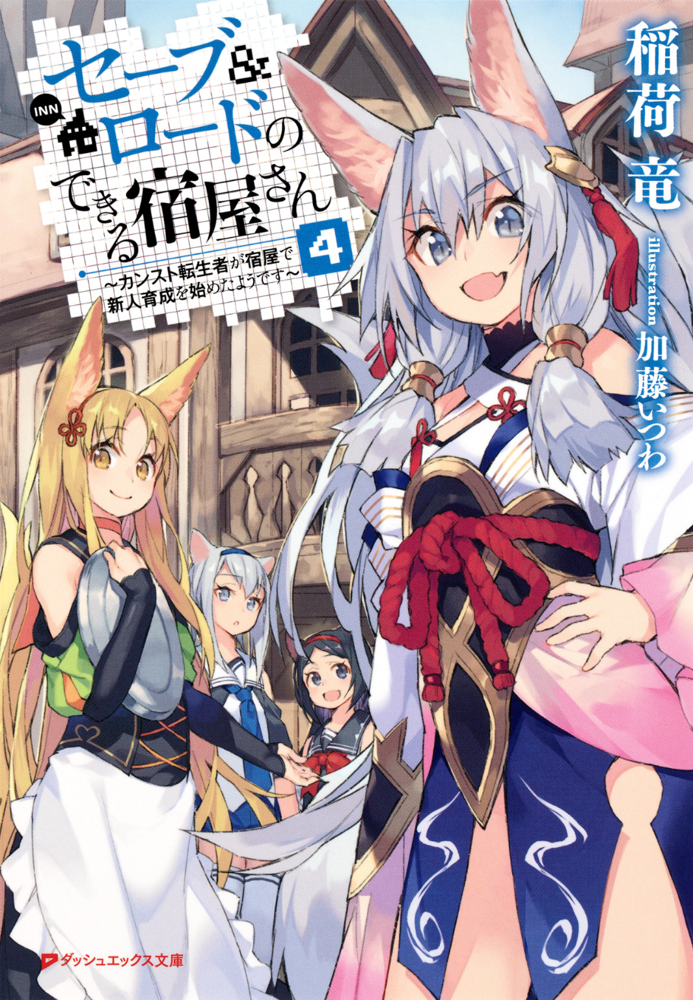
この本は縦書きでレイアウトされています。
また、ご覧になる機種により、表示の差が認められることがあります。
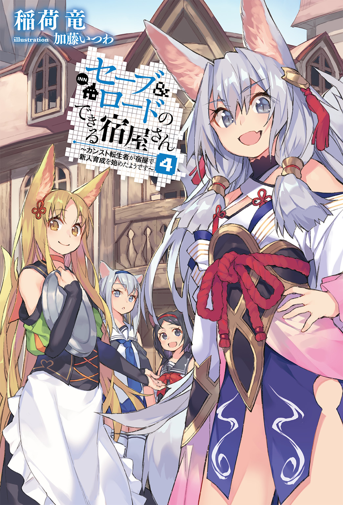
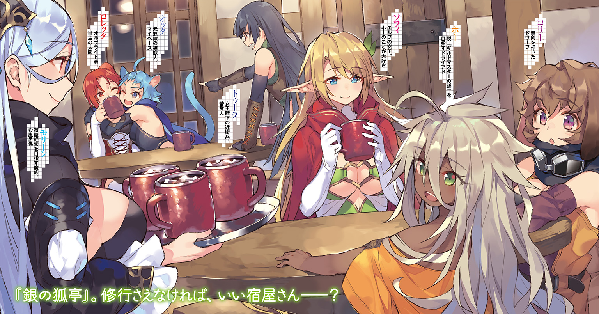
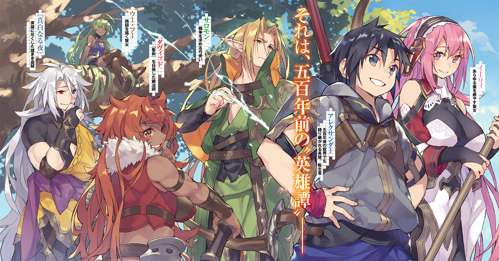
 ダッシュエックス文庫DIGITAL
ダッシュエックス文庫DIGITAL
セーブ＆ロードのできる宿屋さん４
～カンスト転生者が宿屋で新人育成を始めたようです～
稲荷 竜
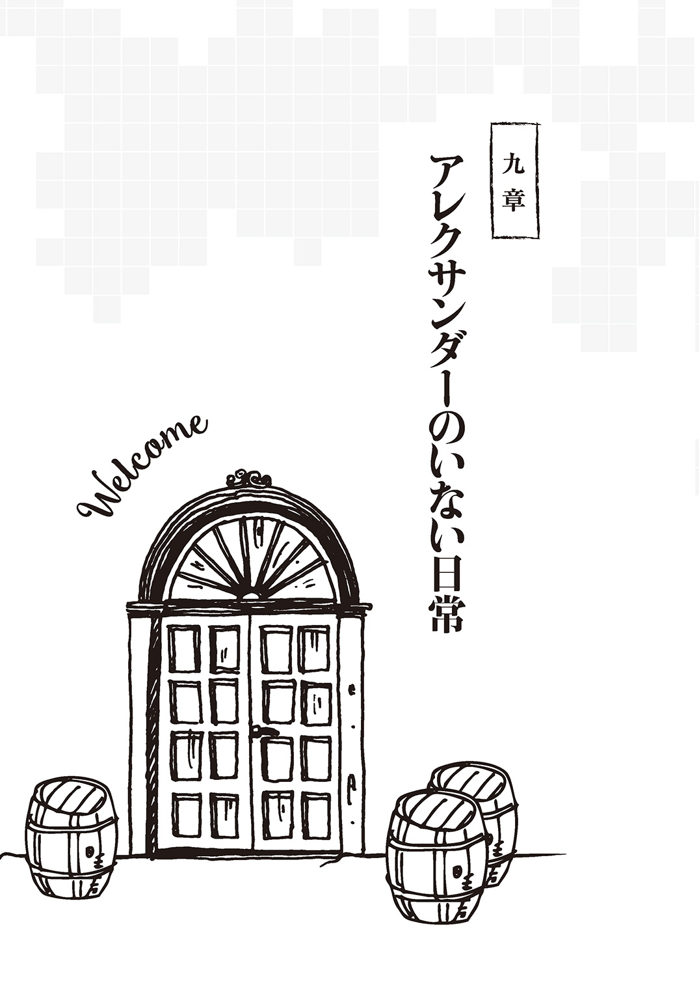
「それではしばらく戻りませんので、あとのことはお願いしますね」
そんな言葉を残して、アレクサンダーは宿を出た。
なんでも捜し人が見つかったようで、現地へ確認に向かったのだ。
風呂沸かしのため修行を続行していたロレッタは久々の安息を感じる。
しかし、平和な時間は始まる前に終わった。アレクの妻でもあるヨミが、体調を崩したのだ。
最初、誰もが『噓だ』と思ったが、本当に起きてしまったことなのだからしょうがない。
アレクもいないし、ブランはなぜかノワに監禁されてしまったし、料理も出ない。
誰かが食事を用意しなければ。医者も呼ばなければ。しかしあのアレクの妻がかかるような
病気にただの医者が太刀打ちできるだろうか？
あまりの事態に、ロレッタが困惑し、モリーンが料理をし、ホーが変な約束をさせられ、
コリーが朝食を食べに来て、オッタが走り、連れてこられたトゥーラはすっかり疲れ果てていて、
ソフィの目が死んでいて、人々は社会人の闇の深さを知る。
混乱が混乱を呼ぶ、最高に間の悪い一日。
この一日が終わった時、ロレッタは思うことになるだろう。
『そうだ、うちに帰ろう』と......
「それではしばらく戻りませんので、あとのことはお願いしますね」
『銀の狐亭』一階食堂。
まだ夜が明けたばかりという時間帯、突如現れたアレクはそんなことを言った。
旅装である。
銀の毛皮のマントに、大きなリュック。
それから、二つの剣――無骨なナイフと、鞘から青い光の漏れる不思議な剣を帯びていた。
ロレッタはアレクの視線の先を確認する。
そこには、モリーンがいた。
かわいらしい少女だ――そうロレッタは思う。
純白の髪、純白の肌、左右で色が違う瞳――このような特徴を備えた『魔族』という人種は魅力ある、不思議な容姿をしている者が多い。その中でもモリーンの容姿が特に優れて見えるのは、付き合いが長いゆえのひいき目だろうか。
魔術師らしい黒いぴったりしたローブを身にまとった彼女は、なにを模したかもわからない不思議な人形を手に取ってながめているところだった。
先ほどまでロレッタとともに行っていたダンジョンでの戦利品だ。
人形だけではなく、四人掛けのテーブルの上には、ところ狭しとお宝が並んでいた。
ともあれ――モリーンは、すでにアレクが出かけることを聞いていたらしい。
承諾したようにうなずき「行ってらっしゃいませ」と言うだけだ。
だが――ロレッタは知らない。
つい興味を抑えきれず、たずねる。
「アレクさん、どこへ行くのだ？」
「実は俺もわからないんですよねえ」
「......行き先不明の旅に出るのか。あなたには細君も娘さんもいらっしゃる。なにがあったのかは知らないが、あまり思い詰めないように気をつけていただきたい」
「いえ、別に自分探しの旅ではないですよ。ちょっと捜し人の一人が見つかったようなので、事実確認にね。詳しい行き先は、連絡をくれた獣人族キャラバンに着いてからわかります」
「そういうことか。......しかし『捜し人の一人』か。ずいぶんといそうな言い方だな」
「俺個人としては二人います。実の母と......まあ、義理の姉、かな？」
「姉？ ......ああ、ホーさんのご母堂か」
「はい。知り合いの捜し人まで含めると、かなり膨大な数になりますね。彼ら彼女らの、生き別れの親兄弟、奴隷時代の仲間、復讐の相手......人の事情は十人十色ですからね」
「なるほど。そういえば宿屋主人と教官だけがあなたの職務ではなかったのだったな」
「というわけで、一週間ほどを予定していますが、もう少しかかる可能性もありますので、そのあいだ、ロレッタさんの修行は完全にお休みにさせていただきます」
「おとといあたりから修行が休みになった背景には、そういった事情があったのだな」
「そうですね。説明をしておくべきでした。申し訳ありません」
「いや、気にしないでくれ。私の方こそ、引き留めて申し訳なかった。ただ、あなたがしばらく戻らないというのは、いかにも異常事態のような気がして、気になってしまったのだ」
「そうですか？ みなさんの修行で、けっこう外出することも多いですが」
「『しばらく』というのはないな。だいたい『三日で戻ります』など、期間を確定させていることが多い」
「......ロレッタさんは、たまにおどろくほど細やかな観察眼を見せますよね」
「あなたの修行のお陰だろう。あなたの発言をうっかり聞き逃すと、無駄に死ぬからな」
「なるほど。いくら修行しても『死んでも生き返るしいいか』とならないあたりも、あなたの美徳ですね。必死に生きていらっしゃる」
「褒めないでくれ。あとが怖い」
「俺がいないあいだのことは、妻と娘と、モリーンさんに託してありますので。セーブポイントはちょっと俺の方で使う可能性が高そうなので、あまり死にそうなダンジョンに行くのはおすすめしないでおきます。あと、トラブルがありましたら、妻か、オッタさんに」
「お気遣い痛み入る。では、よい旅を」
「はい。行ってきます」
一礼して、アレクが去っていく。
足音、扉の開閉音、歩き去っていく気配――など、ない。
相変わらずだった。あの宿屋主人は、いかなる時も気配さえなく行動するのだ。
だからロレッタは周囲を見回して、視界にアレクが映らないのを確認する。
それから、モリーンにも確認する。
「アレクさんは出ていかれたのだな？」
「そうですわね。わたくしの視界にもいらっしゃいませんわ」
「足音ぐらい立ててくれてもいいと思うのだが......」
「眠っていらっしゃる方も、この時間は多いので......アレク様なりの気遣いだと思いますわ。わたくしも夜と朝方は、足音と気配を消すようにと言われますもの」
「それで、あなたもまだ修行を続けているのか」
「ええ。それに、わたくしの目標のためにも、強くなる必要がありますもの」
「目標？」
「はい。わたくし、宿屋の経営を目指しておりますのよ」
「そうか。なるほどな」
「宿屋主人ですものね。歩いても足音はなく、動いても気配はなく、料理をしながら一瞥さえせずにお風呂を沸かすことができて、なにかトラブルがあっても腕尽くで解決できる......そんな存在にならなければなりませんわ」
「たしかにそうだな」
「ええ。まだまだ、強くならないといけませんわ」
モリーンは笑う。
ロレッタは、あくなき目標を追い続ける彼女の姿勢に敬服し、目を伏せた。
そんな、余人が聞けば首をかしげるか顔を背けるかする会話をしていると――
「大変！ 大変！」
切羽詰まった、幼い女の子の声がした。
ロレッタとモリーンはそちらを見る。
声をあげながら、転げるように、受付奥にある従業員室から出てくる小さな影は――獣人の少女だ。
黒い毛並みの、まだ幼い猫獣人。
普段は無邪気で、姉妹同様どことなくぼんやりした雰囲気の少女だ。
しかし、今はその表情にも、動作にも、焦りをあらわにしている。
ロレッタは腰を浮かせて、出迎えるようにその子の方へ歩んだ。
少女は転がるように駆けて、ロレッタにすがりつく。
「大変であり......あられ、ありり......ますの、ロレッタさん！」
「どうしたのだ、ノワちゃん、そんなに慌てて......」
「大変なことがおきます！」
「予言か......獣人族には今もたまに予言者が出るとかいう噂は聞くな」
「えっと、違くて、お客様にお知らせいたされて......いたし......いたれり......」
「無理して丁寧に話さなくていいから、とりあえず本題に入ってはいただけないだろうか」
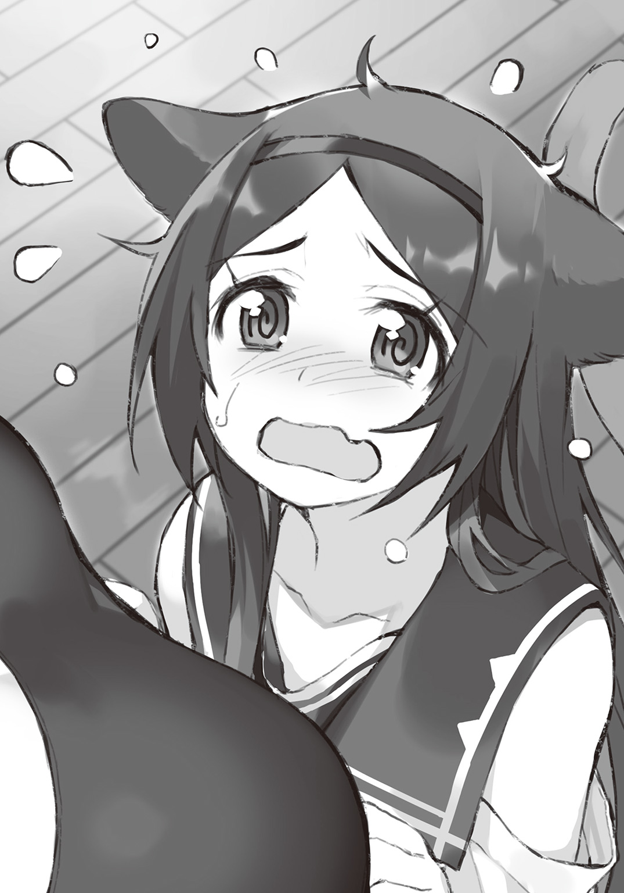
「ママが病気なの！」
時間が止まった。
......それは大げさにしたって、少なくとも、ロレッタとモリーンの呼吸は止まった。
ロレッタは聞き間違いかと思ったので、たずねた。
「ママというのは、ヨミさんで間違いないかな？」
「他にいないの。ママが病気なの」
断言だった。
ノワやブランの事情を考えると『ママが他にいない』という発言は微妙なところのような気もしたが、ロレッタはあえて口に出すことはなかった。
とにかく、ヨミが病気らしい。
しかし――まだ事情をうまく飲みこめない。
ロレッタは自分と同じような顔をしているモリーンに問いかける。
「モリーンさん、あなたは今、ノワちゃんがなんと言ったように聞こえた？」
「......ええと、聞き間違いかと思うのですけれど......『ヨミ様が病気』と、そのように」
「そうか。私もそう聞こえた。しかし考えれば考えるほど、不可解だ。なにかの暗号ということはないだろうか？ 従業員だけに通じるような......」
「あるいは、わたくしたちは眠っているという可能性も考えられますわ。こうしてロレッタさんと同じ夢を見るということの方が、ヨミ様が病気ということよりも現実味があると申し上げましょうか......」
「そうだな。もしくは、世界が滅んだという報せの方が、まだしも信じられる。たとえ世界が滅んでも、この宿屋と従業員だけは滅びないだろう」
「......とにかく、真相の究明が必要ですわね」
「そうだな。もう一度ノワちゃんに聞いてみて、同じ答えが聞こえたら、信じてみることにしよう」
「わかりましたわ」
モリーンがうなずく。
ロレッタはもう一度ノワの方を向き、質問した。
「すまないがノワちゃん、もう一度お願いできるかな？」
「ママが病気！」
ロレッタとモリーンは顔を見合わせる。
そして。
「大変なことではないか!?」
長い思考と、二度の質問の末――
ようやく、事態を飲みこんだ。
○
従業員室には、息を荒げて眠りにつくヨミがいた。
目は開いていない。
声をかけても、答えることができないほどだった。
「......ヨミさんでも病気になるのか」
ようやく現実を信じたロレッタは、そのような言葉をつぶやく。
心配より先に、つい漏れた言葉だった――失礼ではあるが、無理もない。
ロレッタの中で、ヨミ、アレク、ブラン、ノワあたりは、無敵の存在だった。
風邪程度に負けるなどというのは、到底信じられることではない。
実際、ノワとブランにとっても、母親が風邪をひくというのは異常事態だったようだ。
この事実に対し、ブランなどは――
「今ならママを倒せるかもしれませんねー......」
――などと、大変混乱したコメントをしていた。
すぐさまノワに拘束されて倉庫に放りこまれていたが、たしかにしばらく頭を冷やした方がいいだろう。
こんな事態、アレクだって想像していなかったに違いない。
風邪の気配みたいなものがあったら、セーブさせていったん殺してから行くはずだとロレッタは分析していた――セーブして殺せば治るから。
ともあれ、『銀の狐亭』は朝から大混乱に見舞われることとなった。
アレクの不在。
ヨミの不調。
この二つの『異常事態』がもたらす影響は甚大なものだろう。
時刻は『未明』から『朝』になっていた。
すでに日は完全にのぼりきり、もう少しすれば朝食の時間だ。
ロレッタは、食堂のテーブル席にいた。
テーブルの上にあった収集品はすでになく、周囲には人もいない。
先ほどまで一緒にいたモリーンは、ノワとともにヨミの看病をしている。
看病役は魔法に秀でた者が行う――そういう、冒険者的な通例に従った人選だった。
もっとも、魔術師が対応できるのは『ケガ』や『毒』『麻痺』などの『はっきりした症状』までだ。
原因の究明が必要な症状になると、医者や薬の出番となる。
だから今は、医者を呼ぶべき段階にあるとも言えるのだが――
ヨミやアレクなどのかかる病気がそのあたりの医者の手に負えるかがまず不明だし、どこの家庭にも『いつもの医者』――かかりつけ医がいるものなので、勝手に医者を呼ぶわけにもいかない。
だから手が空いたロレッタは、非常にのんきで、なおかつ重要な心配をしていた。
「......朝食はどうしたらいいのだろう」
『銀の狐亭』では、主にヨミが料理を行う。
補助、あるいはヨミが不在の時などは、ブランかアレクが料理をしているようだ。
だが、今、ヨミは風邪で動けない。
ブランを解放するのが、おそらく一番早いが......
ノワは、魔法による『拘束』でブランを拘束していた。
ロレッタでは、ノワの『拘束』は解けない。
だから『ブランを解放する』というもっとも簡単な手段はとれないのだが――
――悩んでいると、二階から誰かが降りてくる気配があった。
そちらを見る。
降りてきたのはホーだった。
白い髪に褐色肌の、子供のように小柄な少女だ。
だぼだぼの服を着てあくびをする姿にはまったく緊張感がない――事態を知らないのだから当たり前だけれど。
ホーはそのまま、毎朝そうしているように、食堂へ来た。
そして――
「よおロレッタ。なんかすげーバタバタしてなかったか？」
たずねながら、ホーはロレッタの正面に腰をおろした。
ロレッタはうなずき、
「おはようホーさん。そうだな、なにから話すべきか......」
「おいおい、盛りだくさんかよ。嫌な予感がすっからまだ寝てようかな......」
「いや、盛りだくさんというか......状況は一応は落ち着いている。それに、私一人暇で、悪いような気がしていたところだったのだ。状況の説明ぐらいさせていただきたい」
「まあ、そう言うなら聞くけどさあ」
「時系列順に言うと、まず、アレクさんが長期間の外出をすることになったのだ」
「そうだな。それは聞いてる」
「......私は今朝初めて知ったのだが」
「まあ、宿としての業務自体はアレクさんがいなくても回るしな。言う必要もないと思ったんだろうぜ。あんたは『お客様』だしな」
「ホーさんやモリーンさんだって、宿泊客ではあるだろう」
「この宿で純粋な『お客様』はあんただけだ。あたしは宿泊代金こそ払ってるけど身内だし、モリーンは風呂番で半分従業員だし......オッタはなんか、クランメンバーらしいから、あっちも身内っちゃあ身内なのかな」
「私以外身内......この宿の経営は大丈夫なのだろうか」
「知らねーよ。大丈夫なんじゃねーの？ そもそも趣味でやってるみてーだからな」
「まあ、そんなことはどうだっていいのだ。どう言ったらいいのか......」
「なんだよ。あんたが言いよどむなんて珍しいな」
「信じていただけるかどうか、不安でな」
「おいおい、あたしらはみんな、『ありえない』修行を受けてきた仲間だろ？ 異常事態には充分に慣れてるし、そもそも、あんたらのことは信頼してる。ましてやロレッタは噓をつかないやつだ。なんでもいいから、言ってみろよ。疑ったりしねーからな」
「では言うが......ヨミさんが風邪で倒れている」
「は？ 噓だあ」
信じてください。
ロレッタはそう思ったが、ホーの気持ちもわかるので、根気よく事態の説明を続ける。
「......気持ちはわかるが、噓ではない。もう一度言う。ヨミさんが、風邪で、倒れている。動くどころか、しゃべるのも困難のようだ」
「............んんん？ ちょっと言葉の意味がわかんねーんだが......」
「可能な限り簡潔明瞭に述べたつもりだが」
「......ああ、なるほどな。わかったぞ」
「わかっていただけたか」
「つまり、『ヨミ』って名前の客が来たんだな？ そいつが風邪ひいてるって？」
「いや、ヨミさんというのは、アレクさんの細君のヨミさんだ」
「......わかった。わかった。ちょっと悩ませてくれ」
「悩むようなことは言っていないつもりだが......まあ気持ちはわかる」
「............ヨミさんってのは、アレだよな。アレクさんの奥さんで、この宿の良心だ」
「そうだな」
「噂だけにとどまるけど、アレクさんぐらいに強いっていう、あの人だよな」
「そうだな。まあ、少なくとも『風呂沸かし』ができるぐらいの実力の持ち主ではある」
「......前さあ、アレクさんにちょっと興味本位で、この宿のメンバーで実戦やったら誰が一番強いのか聞いてみたんだよ」
「ほう」
「でさあ、まあ、宿泊客は論外として、あの一家の決戦になるじゃねーか」
「なるな」
「ブランとノワは、親子じゃなきゃ相手にもならないらしい。ようするに、いざ殺す時に情で刃が鈍ることはあっても、純粋な勝負だったら、まず負けないっていうのが、アレクさんの意見だ」
「......『いざ殺す時に云々』はアレクさんがそう言ったのだろうか」
「そうだな」
「自分の娘を殺す想定をするというのも、いかにもあの人らしいというか......まあ、はい。続きを教えていただきたい」
「で、二人の勝負になるわけだな。......そうすると、アレクさんは、負けるらしい」
「............ちょっと意味が......ん、ああ、なるほど。情で刃が鈍るという話か」
「いや、情を抜きにして、相性が最悪だとかなんとかで、まず勝てないらしい。勝てないっていうか、勝負に持ちこむのが大変っていう話をしてたな。たとえば試合形式で同時に攻撃を仕掛ける義務があったらもちろん勝てるとか、なんとか」
「......」
「で、あらためてもう一回聞くけど、あんたが『風邪をひいた』って言ったのは、ヨミさんなんだよな？ アレクさんの口から『勝負に持ちこめない』って言わせる、あの」
「......待っていただけるか。私も自信がなくなってきた」
「おいおい、頼むぞ」
「......いや、先ほど、モリーンさんと二人で確認したのだ。間違いない。風邪をひいているのはヨミさんだ」
「......そうか、そのヨミさんが、風邪なのか......」
「うむ」
「............あたしらやばくねーか？」
「うむ？」
「いや、ヨミさんがかかるほどの病気なんてさ、あたしらがかかったら......すぐに死ぬんじゃねーか？」
「............」
「..................」
「ホーさん、私は、モリーンさんやノワちゃんを捨てては逃げられない。あなただけでも逃げてくれ」
「覚悟決めるの早っ！」
「人はいつか死ぬものだ。擬似的な、やり直しのできる死ではなく、本当の死は、誰しも、経験する......その時に、友を見捨てるような死に様だけは、したくない」
「......あんたはほんと、気持ちの切り替えはえーな......いや、まあ、あたしも残るけどさ。今さら手遅れだろうし」
「私と一緒に死んでいただけるのか」
「今ヨミさんがかかってる病気で死ぬならな......」
「そうか。......しかし、惜しいな。こんなことになるのだったら、もっとやっておきたいことがあった」
「いや、死ぬ前提で話を進めんなよ。不安にさせたのあたしかもしれねーけど、大丈夫だって。今元気だろ」
「だが......そうだホーさん、もし無事に生きて出られたら、お願いしたいことがあるのだが」
「なんだよ」
「私の家の掃除の手伝いを、お願いしたいのだ」
「......まあ、いいけどさあ」
「助かる。貴族の立場だと、メイドを雇うのにも色々と手間があって......というわけでホーさんにはかわいいメイド服を着て掃除をしていただきたいのだが......」
「......いや、冒険者の格好でいいだろうよ」
「しかし私はかわいい服を着たあなたが見たい。むしろメイド服さえ着てくれたら掃除をしなくてもいいぐらいだ」
「おかしいおかしい......掃除が『目的』じゃなくて『ついで』みたいになってんぞ」
「......しかし、私はこの通り、見た目が大人びているだろう？ だからかわいい服が似合わなくてな......そこで、あなたのようなかわいい人に、かわいい服を着てもらいたいと......そのような、願いだったのだが......どうしても、お願いしたいと、そのように......」
「......」
「いや、いい。無理強いはしない。ただ......少し残念だと、思うだけだ。少しな」
「............ああもう！ わかったよ！ 着てやるから！ あからさまに沈んだ顔すんな！」
「本当か!? ああ、嬉しい......ありがとう......ありがとう......」
「感謝が重い......」
「......では、なんとしても生き残らねばな。気をしっかりもって......それから、新たな被害者が出ないよう祈るばかりだ。ヨミさんのかかった病気にかかる可能性が少しでも減るように」
「そうだな。......宿に誰も来るなっていうのは、本当にそう思うわ」
そんな会話をしていると――宿屋の扉が開かれる音がした。
ロレッタとホーは、目を見開く。
来てしまった。
このタイミングで、人が来てしまった。
ロレッタは思う。どうして人の祈りは、こんなにも儚いのだろう？
神は人を嘲笑う趣味でもあるのだろうか。
『一人でも被害者を少なくしたい』――こんなささやかな願いさえ叶えられないというのか。
この世に軽い絶望感を覚えつつ、ロレッタは入り口側に視線をやった。
そうして、視界に入った人物は――
「ロレッタさんにホーさん、おはようッス。朝メシ食べに来た......ん、スけど............なんなんスか、その絶望的な表情は」
首をかしげる、ドワーフの少女。
先日、宿をチェックアウトし、今でも時々朝食を食べに来る、刀剣鍛冶のコリーだった。
○
「なるほど。アタシも間が悪いッスねえ......」
テーブルに着いたコリーは、ロレッタたちから現状を説明され、苦笑した。
ロレッタは、はす向かいに座るコリーをなぐさめるように、言う。
「元気を出してくれ。まだ、死ぬと決まったわけではない」
「......だったらその悲愴な表情をやめてほしいんスけど......まあ、病気云々はともかくとしても、アレクさんに話すことあったんスけどね。そのアレクさんがいないのは、間が悪いッス」
「また修行でもしようと？」
「いやいやいやいやいやいやいやいやいやいやいやいや」
激しく首を左右に振る。
種族の特徴である、垂れた耳が首の動きに合わせて揺れる。
あと、薄着のせいで、胸もかなり揺れた。
ロレッタは彼女をじっくり観察し、つぶやく。
「......ふむ」
「......なんスか急に」
「ひょっとしたら、あなたは私の理想かもしれないと思ったのだ」
「ちょっと意味がわかりませんけど」
「背が低く、かわいらしく、胸が大きい......うらやましい」
「はあ......っていうかそれ、ドワーフの女性だったらだいたいあてはまるんスけど」
「ドワーフか......将来はドワーフになりたいな」
「ロレッタさんがヤバイ......あの、マジで、マジで、家帰った方がいいッスよ」
「しかし修行中でな......というわけで私はしばらくこの宿にいるので、アレクさんに言づてがあるならば、うけたまわってもいいのだが」
「いやあ、わかんないと思うッスよ」
「専門的な話なのか」
「はいッス。こないだご注文いただいた商品について、ちょっと......簡単に言うと、じいちゃ......親方がかなりはしゃいじゃって、予定より早く完成しそうっていうね。ただその、不足する素材も出てきたんで」
「不足する素材？ アレクさんの腕力に耐えきれる剣でも作っておられるのか？」
「いえ、それはもう作ったんスよ。ああ、でも、最近『その剣でしか斬れない金属製の箱』を注文されたッスね。もう納品したッスけど」
「......金属製の箱？」
「そうッスね。ノワちゃんとかブランちゃんならすっぽり入る大きさッスよ。外から鍵がつけられる仕組みで......金属製の棺桶って感じッスかね？」
「......『誰かを監禁する』ぐらいしか用途が思いつかないのだが」
「ま、まあ......あの人の目的とかはあんまし聞きたくないっていうか......あ、ところでアタシの打った剣、アレクさんは装備とかなさっていないんで？」
「......そういえば、今朝、旅に出る時に見慣れない剣を差していたな。青い光が鞘から漏れた美しい......」
「ああ、それッス。よかった。死蔵されるのはイヤッスからね」
「しかしあの人の腕力に耐えきれる剣を作ったのか。素晴らしいな」
「いやあ。それほどでも......あるッスけどね！」
「今度、私の剣も注文していいだろうか？」
「いいッスけど、今はかなり予約入ってるッスよ。三年待ちッス」
「........................繁盛しているようだな」
「今、二号店を建設中で、できたら馬蹄とか日用品とかは一号店だけにして、刀剣の依頼は全部二号店になる感じッス。で、あたしはそこの親方の予定」
「その若さで店を任されることになるのか。つくづくすごい」
「まあ、腕だけじゃないッスけどね。最近、じいちゃんとの付き合い方を覚えたッスから」
「ほう？」
「あんまりしゃべってないのに『無駄口叩くな』って言われたら、『会話に交ぜてほしい』ってことなんスよ。で、突然『聞きたいことはあるか』って言われたら『ちょっと話がしたい』ってことなんスよ」
「なににせよ、うまくいっている様子で安心した」
「......アタシ、そんなに心配されてたんスか？」
「あなたは口を開けばおじいさまの文句ばかりだったからな」
「その節はご迷惑おかけしたッス」
「気になさらないでくれ。それで、朝食だが......」
「用意できないんスよね？ あ、でもヨミさんの治療をノワちゃんがやってるってことは、目覚めるのは時間の問題なんじゃないッスか？ 魔法じゃ原因がわからない病気には対応できないみたいッスけど、あの人たち、なんでもアリでしょ？」
「私もそう思っているのだが......さすがにそろそろ、不安になるぐらいの時間は経ったな」
「......こういう時アレクさんがいたらいいんスけどねえ」
「そうだな。セーブさえできれば、死んだら治るだろうに......」
「その発想がナチュラルに出てくる時点でヤバイッスね」
「む？」
「......い、いや、その......ロードしてもいいんじゃないッスかね。死ななくても」
「............あっ」
「家帰った方がいいッスよ。ここにいると大事なものが失われていくッスよ。ロレッタさん、案外、人の影響受けやすい人なんスから......」
「うむ......しかし修行が......風呂造りはなんとしても覚えたい......」
「風呂と命、どっちが大事なんスか」
「............」
「そこは『命』って即答してほしかったんスけど」
「......そうだな。今は、生き延びねば。ホーさんがメイド服を着てくれると、約束をしてくれたのだから」
「............」
コリーがかわいそうなものを見る目をした。
視線は、ホーに向いている。
ホーは慌てるあまり、立ち上がって釈明をする。
「違う違う違う！ ロレッタの家を掃除する人員確保が色々厄介だって言うから、あたしが手伝ってやるってだけの話だよ！」
「ハア、ソウッスカ。ワカッテルッスヨ」
「なんだその棒読み口調!? 仕方ねーだろ！ ロレッタがどうしてもって頼むんだから！」
「......ホーさん、どうしてもって頼まれたからって、やってあげるべきことと、たしなめるべきことがあると思うんスよ」
「わかるけどよお」
「ホーさん、なんだかんだいって、頼まれると断れない人ッスよね......」
「う、うるせーよ。......あ、相手は選んでるぞ！」
「ホーさん。人は変わるんスよ。もう、あのころの無垢なロレッタさんはいないんスよ」
「いや、でも、でも......考えてみてくれよ」
「『では考えてみましょう』とか......心が抉れるッス。アレクさんはモンスターとの戦いの最中でも平気で『考えてみましょう』とか言うッスからね......死ぬっつーの」
「とにかく、ちょっとぐらい考えてみてくれ。別にメイド服着るぐらいいいだろ？ あたしはなにも失わねーだろ？ ロレッタが困ってて、あたしがメイド服着るだけで解決するなら、それはいいことだろ？」
「ホーさんはなんつーか」
「なんだよ......」
「トゲトゲしいけど、実際ものすごい甘い人ッスよね」
「............」
「アタシは好きッスよ、そういうとこ。ただ、まあ、その......相手は選んだ方がいいッスよ。本当にね。いつかとんでもない相手にひっかかりそうでアタシは心配ッス」
「......反省する。つーか、あんたのがあたしより年上みてーだなあ」
「実年齢と精神年齢は違うッスから」
「返す言葉もねーよ」
「ドライアドの人は、他の種族にくらべても成長がかなりゆっくりみたいッスからねえ。甘えてもいいんスよ？ 別にこの宿で強がることないっしょ」
「強がってねーよ。あたしはほら、先輩冒険者としての振る舞いをだな......」
「そういうのが......まあ、いいッス。野暮ッスね。なんかあったら力になるッスよ。困ったら声かけてほしいッス。ホーさんを困らせるやつは金床に置いて剣と一緒に叩いてやるッス」
「発想がアレクさんだぞ......」
「おっと、忠告感謝するッス。そんで......」
「朝食か。どうすっかなあ......たしかにロレッタもちょっと思っただろうけど、みんなを置いてよそで食うのもはばかられる状況ではあるんだよな。......ちなみにコリー」
「なんスか？」
「ここで食事をとってない日は、どうしてるんだ？」
「自分ちで作ってみんなで食べてるッスよ。じいちゃんと、弟子のみんなと」
コリーの答え。
それに、ロレッタが反応する。
「それはいいな」
「......は？ なにがッスか？」
「いや、自分たちで作れるならば、それは、すごくいいと思ったのだ。ヨミさんたちのぶんを用意するには最適な方法に思える」
「......ちなみに、ロレッタさんは料理とかできるんスか？」
「食器洗いは任せていただこうか」
「......まあ、普通、貴族のお嬢さんは料理なんかしないッスよね。ホーさんは......」
コリーの目がホーを捉える。
ホーは半笑いで首を何度も横に振った。
「......いや、ほら、冒険者ギルドって酒場が併設されてるじゃねーか。ちっさいころから、腹が減ったらそこでメシ食ってたし......」
「そういやホーさんも何気にお嬢様だったんスよね......ギルドマスターの孫って」
「うちは別に金持ちじゃねーぞ」
「......それはホーさんが自分以下の環境を知らないからッスよ」
「そ、そうなのか......あんたと会話してると勉強になるな......」
「でも困ったッスね。アタシは料理できるッスけど、まずここの厨房の勝手がわからないッス......少しでも詳しい人がいたらいいんスけど」
コリーが腕を組み、唸る。
ホーとロレッタもまねするように、腕を組んで唸った。
三人が同じ動作でくびをひねっていると――従業員寝室の方で、扉を開閉する音がした。
食堂にいる全員の視線が音のした方を向く。
視界に映った人物は――
「あら、コリーさんもいらっしゃっていますの？ ......ってなにかものすごい期待をこめた目でこちらを見てはいませんこと？」
三人の視線を受けて若干おののきながら、モリーンが、戻ってきた。
○
「なぜか不穏な空気ですけれど、まずはヨミ様の体調について報告させていただきますわね」
ロレッタの隣に座ったモリーンは言う。
若干疲れたような様子が、妙な色香を漂わせている。
「ヨミ様は、とりあえず落ち着きましたわ。外傷による病気ではありませんでしたので、魔法を使うまでもなかったのですけれど......うなされていましてね。今、落ち着いたので、みなさんに状況の報告をしようかと、戻ってきたのですわ」
モリーンは言う。
ロレッタが、うなずいた。
「まあ、魔法で解決できるならば、ノワちゃんがやっているだろう。モリーンさんとノワちゃんがそろってどうにもならないということは、魔法ではどうにもならないのだろう」
「そうかもしれませんわね」
「うっかり間違うと爆発したりする場合もあるが......」
「......その節は非常に申し訳ないことをしてしまいまして......」
「いや、気にすることはない」
ロレッタは鷹揚に首を振った。
ホーが半眼になって、モリーンにたずねた。
「......したのか、爆発」
「ええ、ちょっと、ロレッタさんに回復魔法をかけようとしたら、左腕がこう、急速に膨張いたしまして......」
「怖っ！」
「事前のセーブができていたので、ご覧の通り、結果的には無事でしたけれど......わたくし、うまくいくと油断をするというか、ぼーっとしてしまうらしく......」
「なんでだ」
「非常にお伝えするのが困難なのですけれど、どうにも、成功している自分というものが、まだうまく信じられず......わたくし、基本的にどんくさいもので。この宿に来るまでは失敗ばかりでしたし......成功しそうになると『あれ、これは現実？ それとも夢？』という迷いが」
「この宿の中で一番心に暗いものがあるのは、あんただよな......」
「さすがにアレク様ほどでは」
「あの人は暗いものっていうか............なんだろ。まあ、あたしらより長生きしてるんだからそりゃあ色々あるんだろうけど、明るく楽しく狂ってる感じなんだよな」
「......その表現は的確な感じがするのですけれど、『明るく楽しい』というのは『暗い』よりも怖いものを感じますわね」
「......なんか触れちゃいけないものに触れようとしてる気がするから、この話題はやめよう」
「そ、そうですわね」
「で、話をまったく変えるんだが......モリーン、あんた、料理をやった経験はあるよな？ 何度かこの店の厨房で手伝ってる姿を見たし」
「はあ、ありますけれど......どういう意図の質問ですの？」
モリーンが首をかしげる。
ホーは、ロレッタに視線を向けた。
その視線を受け、ロレッタがうなずき、語る。
「ヨミさんもブランちゃんも手が放せない状況だろう？ そこで、我らで料理をできないかと考えていたところなのだ」
「はあ、なるほど。たしかにいい考えかもしれませんわね。......ブランちゃんはまだ閉じこめられたまま......ですものね」
「そうだな。どのみち我らではノワちゃんのかけた『拘束』は解けないし......それに、倉庫の位置的に、一度ヨミさんの寝室を経由する必要がある。出してやることもままならない。あとやったのがノワちゃんなので、姉妹ケンカ......のようなものに介入していいものかどうか」
「......頃合いを見て、一度、ノワちゃんに解放を打診してみましょう。あと、厨房をお借りしていいかどうか、うかがわないと」
「うむ......しかし、あれほど強硬なノワちゃんは初めて見たからな......どうなるか」
「まあ、お母様が倒れていらっしゃいますから、色々と冷静ではないのでしょう」
「モリーンさんは頼りになるな」
「いえ、そんな」
「最初は心の弱そうな方だと思っていたが......」
「ロレッタさんは『ひと言余計だ』と言われませんこと？」
「馬鹿正直だという評価はいただいたことがある」
「その評価を直接ご本人に伝えた方も、ロレッタさんと同じぐらい正直ですわね......」
「アレクさんだが」
「ああ......ええと、ところで、お料理の話ですけれど......わたくしの他に料理ができそうな方は？ わたくし、一通りできはするのですけれど、なんというか、一人だと色々自信がないと申し上げますか」
「コリーさんができるらしい」
ロレッタの言葉を聞き、モリーンがコリーを見る。
コリーは苦笑した。
「できるっていっても、一般家庭のレベルッスよ」
「いえ、それはわたくしもそうなのですけれど......むしろ、そこにも達していないというか」
「......憲兵第二大隊長のおうちで、お料理なさってたんスよね？」
「そうですわね」
「この宿屋、お嬢様しかいねーんスか」
「いえ、わたくしは、下働きも下働きで......お料理だって、褒められたことは一度だってありませんわ」
「一度も褒められたことないんスか」
「はい。......あ、ヨミ様にはお褒めにあずかりましたけれど、あの方はお優しいので......」
「ちなみに、料理の経験はどんぐらいッスか？」
「物心ついた時から、ずっとですわね」
「......アタシはなんとなくしか事情を知らないんで恐縮ッスけど、モリーンさんが『育った家で褒められてない』っていうのは、別に『料理下手』っていうことじゃないと思うんスけど。あと、ヨミさん、ああ見えてお世辞とか言わない方だと思うッスよ......」
「............はあ、つまり、それも、昔のアンロージー様がわたくしに行っていた『意地悪』の一つだとおっしゃられるので？」
「そうッスね。だって、本当に料理に褒めるところがない子を、ずっと厨房に立たせるわけないじゃないッスか。......まあ、『料理の経験』って聞かれて『皿洗いの経験』を申告したんならわかんないッスけど」
「いえ、きちんと、お料理をしていましたわ」
「じゃあそれ、褒められてなかっただけで上手だったんだと思うッスよ......本気でまずい料理を何年も食べるとか、さすがに頭おかしいッスもん」
「なるほど......コリーさんはお優しいのですわね」
「いや......お話を聞いた事実から感情抜きで状況を分析したら、普通にそう思えるッスよ。っていうかモリーンさんがひねくれすぎなんスよ......もう幸せになっていいんスよ」
「わたくしは、わたくしなんかとこうしてお話をしてくださるあなたがたがいるだけで、充分に幸せですわ」
「すげえ薄幸感漂う発言ッスね......」
「薄幸だなんて、そんな。今が幸福すぎて、現実か夢か、感覚があいまいなだけですわ。......あれ、これは現実ですの？ それとも夢？ 本当のわたくしはどこかのダンジョンで死んでいて、今は死後の世界......？」
「いや、この宿にいる限り、死後の世界には逝けないッスから」
「しかし......たまに思うんですのよ。普通に考えて、『セーブ＆ロード』なんていうもの、あるはずないのですわ。ということは、わたくしはとっくに死んでいて、あなたがたも、とうに亡くなっていらして、ここは死後に魂がおとずれるという、すべてが平等な、幸福も、不幸もない世界で......」
「目から光が消えてるッスよ。本気で怖いからやめてほしいッス」
「あ、ああ、申し訳ございませんわ！ わたくしはともかく、あなたがたが本当は亡くなっていらっしゃるだなんて、そんな、たとえ真実だとしても失礼でしたわね......」
「『たとえ真実だとしても』とか言わないでほしいんスけど......アタシもたまに不安になるんスから」
「まあ、コリーさんもですの？ ......いいものですわね。言葉にしにくい悩みを分かち合ってくれるお友達って......家には年下の子ばかりで......年上の方々はみな、相談したりする前にいなくなってしまわれていましたから」
「幸薄そうな笑顔を浮かべないでほしいんスけど......モリーンさんと話してると、アタシが幸せにしなきゃいけない気分になってくるッス。アタシが男だったら結婚申しこんでるッス」
「いえ、ですから、わたくしは今、充分に――」
「ところで！ ......そろそろブランちゃんを解放しなくていいんスか？ もうアタシが行ってきてもいいッスか？ これ以上薄幸トークはいたたまれないんで......」
「あ、そうでしたわね。ちょっと聞いてきますわ」
モリーンが席を立ち、従業員寝室へと向かった。
ロレッタが去っていくモリーンの背を見ていると――階段から、降りてくる人物の姿が視界に入ってくる。
音はない。
その女性は青い毛並みの猫獣人で、アレクほどではないが普段から気配や足音というものがとぼしかった。
ぼんやりした表情で、尻尾を左右に揺らしながら歩く姿はなぜだかしなやかだ。たぶん、体つきに無駄がないからだろう。
彼女は食堂の方へ歩いてくると、つぶやく。
「......なんか騒がしかったな。オッタは起きてしまった」
いつもだいたい朝が遅いオッタの起床だった。
○
「......つまり？」
「ヨミさんが大変で、なにをしたらいいかわからない状況だということだ」
ロレッタは状況の説明をそのようにしめくくる。
オッタは、ロレッタの隣に座っていた。
もっとも、ただ座っているだけではない――しなだれかかるように、ロレッタの肩にあごを乗せている。
――懐かれている。
ロレッタが観測した、オッタの自分に対する態度は、そのようにしか表現できなかった。
オッタは、ロレッタに抱きつくようにしながら、しばし沈黙したあと――
「ヨミの病気は大丈夫なのか？」
「......だから、それはまだわからない」
「病気はやだな。医者とか薬を呼んだ方がいいか？」
「ヨミさんを冒すほどの病気に普通の薬が効くかどうかもわからない......」
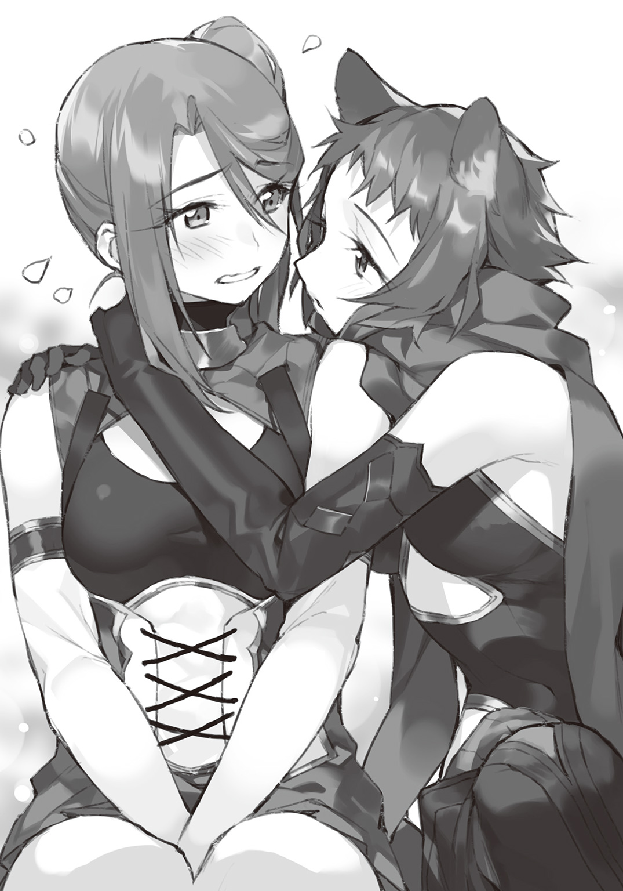
「わかった。オッタはなんかあったらすぐ走れるように準備しとく」
「ああ......まあ、私が行こうかと思っていたのだが、あなたの方が速そうだな。お任せする」
「オッタがんばる。でも......」
「心配事か？」
「ご飯出ないんだな......」
「それも確認中だ」
「......面倒くさい。勝手にやったらだめなのか？ オッタならそうする」
「オッタさんは料理できるのか？」
「できたら今やってる。オッタが今まで食べてきたご飯は、硬いパンとか、お湯で野菜をゆがいただけのスープとか、カビを削らないと食べられない干し肉とかだから......奴隷じゃなくなったあとは、だいたい宿屋でご飯出てくる。だから、オッタは料理したことない」
「そういえば、なかなかすさまじい経歴の持ち主だったな、あなたは......」
「ロレッタは料理できそうなのに、できないのか？」
「......できそうに見えるのか」
「ロレッタに不可能はなさそう」
「まさか。アレクさんじゃあるまいし......」
「ロレッタはエンに似てる。きっとやってみたらなんでもできる」
「......エンというのは、たしか、あなたのお姉さんだったか？」
「そんな感じ。今、捕まってる。ロレッタはエンとなんか似てる気がする。だからオッタは、ロレッタのこと好きだ」
「顔も知らない人だからな......どのように反応すればいいのか」
「反応に困ったら笑えばいいって、アレク言ってたぞ」
オッタがぼんやりと述べる。
それに、コリーが反応した。
「......言ってたッスねえ、そんなこと」
「アレクの言うことはだいたい正しかった」
「いや、アレクさんの発言は正しいけど間違ってると思うんスよね......理論上正しいけど、人として間違っているっていうか......」
「......よくわからない。正しいのに、間違っているのか？」
「えーっと......言ってることはそりゃそうなんスけど、おおよそ人には実行できないっていうか......」
「コリーの言うことは、いつもだいたいオッタには難しい」
「オッタさんの感性もアタシには難しいッスけどね......」
「......オッタは頭悪そうなこと言ったか？」
「んー......なんかこう、会話をしてても、膜一枚挟んでる感じっていうか......同じ話題で話してるのに違う話題で話してる気がするっていうか......」
「......」
「オッタさんと話してると、アレクさんと話してる気分ッスね」
「そうか。オッタはアレクに似てるのか。強くなったからか」
「『アレクさんと似てる』っていうのは『このままだとまずい』っていう意味でよく使われる表現なんスけど」
「オッタはまずいか？」
「えーっと......オッタさんはアタシらが来た時にはすでに結構アレクってたというか......どうスかね、ホーさん」
コリーが苦笑する――どうにも彼女は、オッタとの会話を苦手としている節があった。
察したのか、ホーも苦笑する。
そして、昔を思い出すような間をおいてから。
「オッタは最初からこんなんだったなあ......一時期、アレクさんの修行に耐えられないのが少数派で、自分がおかしいのかってマジで悩んだりもしたけど......ソフィとコリーが来てくれて常識を取り戻せたよ。いや、キツかった......修行に付き合わされるのがなにより......」
「そうだ。ホーはいいやつだ。オッタはホーのこと好きだ。ロレッタの次の次ぐらい」
「......ちなみに、あたしの上でロレッタの下にあたるやつは誰なんだ？」
「トゥーラ」
「......トゥーラと会ったことあったっけ？ あいつが来た時、オッタは、だいたい寝てなかったか？」
「仕事で何度か会ってる。トゥーラは近衛兵だから、ルクレチアのとこ行くといる」
「......ルクレチアってお前......女王陛下を呼び捨てって、色々大丈夫なのかよ」
「ルクレチアはいいやつ。さわり心地がいい」
「............なんかよくわからねーけど、一歩間違ったら首をはねられそうなことしてるのはわかった」
「さわり心地は、ソフィもよかった。またソフィに会いたい」
「ああ、ソフィな。......手紙はちょいちょいとどくけど、今忙しいみてーだな。政治的なことになると手を貸しようもねーし。エルフの森は遠いしな」
「ホーはソフィと仲良かった」
「............お前が来た時さ、あたしが『次に来るやつが常識的だったら絶対そいつと仲良くなる』って言ったの、記憶にあるか？」
「ない」
「......言ったんだよ。その時は別に『なんとしても仲良くなってやる』みたいな決意はなかったんだが......期せずして予言になったな」
「ホーは予言者か」
「いや、違うけどさ。......まあ、まあ......とにかく、ええと、なんの話だったか」
「朝ご飯の話だ」
「......モリーンを待とうぜ。交代するなら、ノワが来るだろうし......なんにせよ、そろそろ来るだろ」
ホーがそのように言ったタイミングで――
扉の開閉音。
全員の視線がそちらに向けば、映ったのはモリーンだ。
彼女が食堂に入ってくると、オッタを見つけ、微笑みを浮かべた。
「あら、オッタさん、おはようございます」
「モリーン、ご飯はどうだ」
「......話は通っていますのね？ ええと、それが......ヨミ様はまだ眠っていらして、お話を聞ける状態ではありませんでしたわ」
「............大丈夫なのか？」
「一応、大丈夫そうですわ。というか、ですね......」
「？」
「どうにもヨミ様は、ご自分が病気になって動けなくなったケースを想定して、いくつかあらかじめ指示を出していたようなのですわ」
「ヨミは予言者か」
「予言というか......書き置きみたいなものですわね。アレク様のいらっしゃらない状況で、動けなくなった時に備えていた、と申し上げましょうか」
「すごい」
「......どうにも、ヨミ様にとって、こういう症状は初めてではないらしいのですわ。持病、という表現を書き置きの中でしていらっしゃいました」
「なるほど」
「......それにしても周到なお方ですわね。いざという時を想定しておくのは、さすがという感じですわ」
「ヨミは怖いやつだからな」
「......オッタさんはどうにも、独特な感性で人を評価なさいますわね」
「オッタは思ったことをそのまま言うだけだ。ヨミは怖い。ブランはヤバイ。ノワは仲間。アレクはすごい。ロレッタは好き。ホーはいいやつ。ソフィは柔らかい。コリーは難しいこと言うやつ。トゥーラは飼いたい。モリーンは不幸」
「......色々と言いたいことはあるのですけれど、なんでわたくしの評価が『不幸』なのでしょうか......？」
「？」
「首をかしげたいのはこちらなのですけれど」
「でも、モリーン、不幸っぽい」
「いえ、ですからなぜ......」
「......オッタは感じたまま言ってるだけだ。別に褒めてもけなしてもない。でもモリーンを困らせる気はなかった。反省する」
「いえ、反省はいいのですけれど、理由が気になるのですが」
「理由はない。感じただけ」
「なぜ、わたくしはこんなにも不幸に思われるのでしょう......コリーさんといい、あなたといい......わたくしは今、こんなにも幸福ですのに」
「それで、オッタは朝ご飯を食べられるのか？」
「あ、はい、そうでしたわね。ええと......これは本来、ノワちゃんとブランちゃんに向けた指示なので、少し改変しておりますけれど......」
前置きして。
モリーンはヨミの指示を伝える。
「まず、お客様に対して。他に泊まる場所がある場合、移動するのが第一だそうです。ただ、移動できない事情のお客様も想定されるので、その時は、無理に宿を移さなくてもいいと」
「ご飯は？」
「厨房は勝手に使用してもいいみたいですわ。まあ、ブランちゃんがいる場合は、彼女に料理を作らせるという指示のようですけれど......ノワちゃんが解放を強硬に反対しておりますのでどうしたらいいか」
「ノワの判断は正しい。状況が落ち着いてから出すべき。他人の目があればおとなしいけど、今はだめだ」
「......そういうわけで、厨房は勝手に使っていいそうです。あと、ちょっと腑に落ちない指示なのですけれど、お医者様に連絡はしない方がいいと、そのように」
「しない方がいい？」
「そうですわね。『しない方がいい』と。『するな』でもなく『しろ』でもなく、『できればしないでほしい』というようなニュアンスと申しますか......」
「......よくわからない。つまり？」
「わたくしも、よくわかりませんわ。ただ、ノワちゃんには思い当たる節があったようでして......お医者様は呼ばないと、そのように、ご家族であるノワちゃんは決定されました」
「ノワが言ったのか。......でも、オッタは心配だ。病気は怖い。前にかかったことある病気でも二回目は死ぬこともある」
「それはそうなのですけれど......現実問題、ヨミ様がかかるような病を、そのあたりの町医者がどうこうできるとは、やはり思えませんので......手に余りそうと申し上げますか」
「むむむ......」
「それよりも、今、わたくしたちにできることは、朝食の用意ですわ。ノワちゃんも起き抜けから今までずっと看病していますから、そろそろお腹が空くころあいでしょうし、ヨミ様だって意識が回復されたならば、なにか口に入れた方がいいでしょうから」
「......そうだな。でも、オッタは料理できないぞ」
「それは、僭越ながらわたくしが......コリーさんもやってくださいますから、大丈夫だと思いますし」
「わかった。......じゃあオッタは、ルクレチアのところ行ってくる」
「女王陛下のところへ？」
「そうだ。ルクレチアは女王だから、すごい医者を知ってる。それに、ヨミと仲良しだから、手を貸してくれると思う」
「......まあ、そうかもしれませんけれど......いきなり陛下を頼るというのも、なんだか畏れ多いと申し上げましょうか......というか女王陛下を名前で呼び捨て......」
「たぶん、ルクレチアに頼るのが一番確実だとオッタは思う。......ヨミは医者を呼んでほしくないのかもしれないけど、強がりかもしれない。だから迷惑と思われても、医者を呼びたい」
「......なるほど」
「ヨミが困るかもしれないけど......ヨミが困るなら、そのぶん、オッタはヨミに困らされてもいい。だから、オッタがルクレチアに医者のこと聞いてくる。オッタが勝手にやる。みんなに迷惑はかけない」
「いえ。......たしかに、ヨミ様の書き置きとノワちゃんの決定があるとはいえ、気を回しすぎて悪いことは、この場合、ないと思いますし......オッタさんのお気持ちも、わかりますわ」
「......じゃあ、オッタはさっそく、ルクレチアのとこ行ってくる。どうせ料理はできないし」
言うと同時に、オッタは立ち上がった。
動作に迷いがない――見送りの言葉をかける暇もなく宿を出ていき、オッタの気配が遠ざかっていく。
あっけにとられ、全員が沈黙する。
最初に我を取り戻したのは、ロレッタだった。
「ああいう姿勢と行動力は見習わねばならないな」
「......ええ、まったくですわ」
モリーンも、苦笑しつつ賛同する。
ロレッタが大きく息をついた。
「では、我々も行動を開始しようか」
「わたくしはお料理へ」
「うむ。私は......料理、はできない」
「はい」
「............医者への連絡は、オッタさんが行ったな」
「はい」
「............私は、とても役立たずなのではないか!?」
「い、いえ、その......ロレッタさんの剣技はとても頼りになりますわ」
「剣技で病気が治せるか！ ......ああいや、すまない。モリーンさんに大声を出すのは筋違いだ......しかし......よもや自分がこれほどまでに役立たずとは思ってもいなかった......うちひしがれる......」
「その......げ、元気を出してくださいまし」
「......とりあえず、ノワちゃんと看病役を代わってこようか」
「代わってくださるかしら......わたくしも、休むように言ったのですけれど、『自分がやる』とゆずらず......」
「......わかった。とりあえず、ヨミさんの寝顔を見るだけでも、やってこよう」
「もはやどういう役割なのかわかりませんわね......」
「視線に気付いて目覚めてくださるかもしれない」
「そっと寝かせてあげてほしいと、わたくしは思うのでございますが......」
「そうか......そうだな............医術の勉強でもした方がいいのだろうか」
「しかしロレッタさんは決定的に不器用ですので......」
「うぐっ......」
「あ、ああ、失礼を......！ つい思ったことが口から！」
「追い打ちか......なかなか、やるではないか......」
「えっあっその、えっと、そんなつもりは......」
「私は......邪魔にならないように......このあたりで壁と同化している......」
「そんな卑屈にならないでくださいまし......」
「......」
ロレッタは壁になった。もう口を開くことはないだろう。
モリーンとコリーは、笑っていいのかどうかわからないような表情で、厨房へ向かう。
ちなみにロレッタより先にホーが壁と同化していたことに気付いた者は、誰もいなかった。
○
『銀の狐亭』食堂。
モリーンとコリーが調理のため厨房へ消えて、しばらく経ったころ――
――オッタが帰ってきた。
医者を求めて女王のもとへ向かったはずの彼女だが、連れてきたのは医者ではなかった。
「あの、自分はなぜ宿に呼ばれたのでありましょうか？」
戸惑うようにそう言うのは、黒髪黒目の、幼い少女だ。
種族は人間。
まだ成人前ではあるが、白銀の鎧に身を包み、見事な意匠の剣を腰に差した姿には、堂々たる威風があった――それもそのはず。彼女は近衛兵と呼ばれる、女王陛下の側近であり、要人警護の専門家なのだ。
名前をトゥーラ・マカライネン。
この宿で修行をし近衛兵になった、ロレッタやモリーンの少しあとに来た少女である。
トゥーラは状況をわかっていない様子だ。
役割を得たロレッタは、トゥーラを手招きして隣に座らせると、状況の説明を開始する。
「実はだな、信じていただけるかどうかわからないのだが......ヨミさんが病気にかかってしまわれたのだ」
「あ、はい、それはすでに......教官どのの奥様ということで、どのようなモンスターなのかと思っていたのでありますが、ヨミさんは普通の人だったのでありますな」
「普通の人かどうかは措いておいて、ヨミさんがかかる病というのは尋常なはずがない。そこで、ヨミさん本人は『医者はいい』という書き置きを残していたのだが、心配したオッタさんが女王陛下にお医者様を紹介していただくべく、王宮に走ったのだ」
「なるほど。女王陛下とヨミさんは、なにやら懇意にされているようでありますからな。そのヨミさんがご病気と知られれば御典医を遣わすぐらいはやっていただけるでありましょうな」
「そして、そのオッタさんが連れ帰ってきたのが、あなただ」
「......なるほど」
「トゥーラさんはお医者様だったのか？」
「............いえ、その、別に医者ではないのでありますが......もちろん、近衛兵でありますから一通りの応急処置などは、訓練で行っているのでありますが......医療と呼べるほどたいそうな技術は持ち合わせていないと申し上げますか......」
「......では、なぜいらしたのだ？」
「それは自分が知りたいのであります」
「............ええと、ここには、女王陛下のご命令で？」
「それはもちろん、勤務中でありますので......女王陛下のご下命がなければ、自分は陛下のもとを離れられないのであります」
「女王陛下は、オッタさんからの説明をうけて、どのようなお言葉を？」
「『ヨミちゃんが弱ってるとか、できたらあたくしが直接見たいんだけどお、ちょっと忙しいから代わりに行って、様子をまとめて報告なさあい？』と」
「......女王陛下はそのような話し方をされるのか。民衆の前で演説をされる時とあまりに違うというか」
「自分のものまねは女王陛下ご自身にもお褒めにあずかっているのであります。再現度は高いものと自負しているのであります」
「そ、そうか......ええと、それで、医者などは......」
「特には」
「......な、なるほど」
「............あの、自分はなぜ、ここに遣わされたのでありましょうか」
「うむ、その、なんだ。あなたから聞いた話をまとめると、病気のヨミさんの様子を観察し、女王陛下に上奏するためだと思われる」
「......なんの意味があるのでありましょうか」
「............さあ？」
「......」
「............」
「......朝食は召し上がられるか？」
「............そうでありますな。一応、いただいた命令には従うので、その前に一度ヨミさんの様子を拝見するのでありますが......命令は絶対であります......いかに意味不明でも......」
「近衛兵というのも大変なのだな......」
「......同情をしないでいただきたいのであります。最近、自分も、現実と理想との差異に悩まされ、時には悶々として眠れぬ夜などもあるので......今同情されてしまうと......」
「そ、そうか......すまなかった」
「いえ」
......間が持たない！
ロレッタは思う。ひどい空気だ、と。
しかし――女王はヨミの症状を聞いてなお、医者を遣わしてはくれなかったようだ。
ロレッタは、オッタの方を見る。
彼女はホーの髪の毛をつんつんとつつき、ホーに「くすぐったいからやめろ」と言われているところだった。
なにをしてるんだろうあの人と思いつつロレッタは、オッタへ話しかける。
「あの、オッタさん、お忙しいところ申し訳ないのだが、少しよろしいだろうか？」
「なんだ。オッタは別に忙しくないぞ」
「女王陛下には、どのように上奏されたのだ？」
「ヨミが病気で大変だ。起き上がれないって言った」
「それで、トゥーラさんを連れてくることに？ ......お医者様の手配などは」
「別になんも言わなかった。オッタは納得しなかったから、食い下がった」
「おお......女王陛下の決定に食い下がるとは、やるな」
「だってあいつ、おかしい。ヨミが病気だって言ってるのに、すごい楽しそうだった。ルクレチアはだいたいいつも楽しそうだけど」
「......一応、この宿ではいいが、他の場所で女王陛下を『あいつおかしい』などと言わない方がいいぞ。あと、呼び捨てもな」
「でも、オッタは、ルクレチアに呼び捨てでいいって言われた。それに、遠慮するなって」
「まあそれは、お二人のあいだにどのような会話があったかは知らないのだが......他人が聞いたら顔をしかめると思うので、外ではな」
「......なるほど、わかったぞ。えっと......社会通念だな」
「まあ、そのようなものだ。それで、食い下がった結果、どうだったのだ？」
「ルクレチア......えっと、女王のやつが言ったことは......」
「『女王のやつ』という呼び方は全然まったくなにも改善されていない......あと、この宿の中であれば、呼び捨てても大丈夫だ」
「そうか？ 難しいな......えっと、ルクレチアがアレクたちに助けられた時も、ヨミはこういう感じになったみたいだ。その時も放っておいたら治ったらしい。っていうかアレクに『医者では無理だから自己治癒に任せてほしい』って言われたらしい」
「......まあ、そうかもしれないな。下手に外側からどうにかするより、ヨミさんご自身に任せた方が回復の見こみが高いというのは、ありえそうだ」
「だから、医者はいらないって。ただ『万が一』があるかもしれないから目を離さないようにはするのがいいって、ルクレチアが言ってた。それでトゥーラを連れてきた」
「なるほど」
ロレッタがうなずく。
だが、トゥーラはおどろいた顔をしていた。
「......あの、自分はそこまで詳細な説明を受けていないのでありますが」
「オッタが代わりに聞いておいたぞ。トゥーラが出かける支度してる隙に」
「......隙を衝かないでほしいのでありますが......その、なんで実際に役割を仰せつかった自分よりも、オッタさんの方が詳しく話をされているのでありましょうか」
「ルクレチアは同じ話二回するの嫌いなやつだ。よくわかる。オッタも同じ話二回するの嫌いだ。一回目と内容変わる」
「それは『嫌い』とは違うような......あの、女王陛下は他になにかおっしゃっていなかったでありますか？ 自分のいないところで」
「トゥーラは頭固いから困るって言ってたぞ」
「えっ......それは、その、そういう話を聞く心の準備ができておらず、どう申し上げていいかわからないというか......そ、そうではなく、今回、自分が受けた『ヨミさんの観察』という任務について、他に」
「知らない」
「......なにもおっしゃっておられなかったのでありますな？」
「たぶん。なんか言おうとしてた気がしたけど、果物おいしそうだったから、オッタは果物ほしいっていう話をした」
「............お仕事つらい............大事な話が入ってこない......」
「どうしたトゥーラ？ ルクレチアがくれた果物食べるか？」
「持ってきていたのでありますか......」
「ヨミのためにもらってきたからな」
「......ああ、なるほど」
「でも、トゥーラがほしいっていうなら、あげるぞ。オッタはトゥーラが嫌いじゃない」
「お気遣いありがとうであります。......しかし、それはヨミさんへ」
「そうか？ さっき保管庫に入れてきたから、そろそろ冷たくて美味しいと思う」
「......なんというか、オッタさんは行動がいちいち人の間隙を衝いているのでありますな」
「つまり？」
「お話のたびにびっくりするのであります」
「オッタはびっくりか。トゥーラはびっくり、嫌いか？」
「い、いえ......まあ、その......できればあんまり、仕事の関係でびっくりしたくはないでありますな」
「そうか。気をつける」
「......ところで、女王陛下は自分について、なにか他におっしゃってはいなかったでありますか？ 『頭が固くて困る』以外に......」
「言ってた気がする」
「なんと？」
「でも、オッタはおっぱいの話しか興味ないからな......興味ない話はあんま覚えてない」
「なぜぇ!?」
「おっぱいは、いいぞ。エンもソフィも、いいものを持ってた。ルクレチアも、柔らかい。ロレッタがソフィぐらいあったら、エンより好きになるかもしれない。あとコリーはあんまり触らせてくれない。悲しい」
「あの、その話は、自分にはどうでもいいのでありますが......」
「あ、そうだ。トゥーラは二年後に期待できるっていう結論になったぞ」
「女王陛下とどういう話をされているのでありますか!?」
「大きくする方法とか、かたちを維持する方法とか、食べるといいものとか、そういう」
「......なんだか女性と話している気分ではなくなってきたのであります」
「オッタは男じゃないぞ？」
「それは見たらわかるでありますが......あの、もっと、性格とか、そういう方面のお話は」
「頭が固くて困る」
「......他にはないのでありましょうか......」
「..................................................................おっぱいの話に戻ってもいいか？」
「もうやだ......」
トゥーラはこの世の絶望をすべて背負ったかのような、疲れ果てた顔になった。
まだ幼いのにかわいそうだ、とロレッタは心の底から同情した。
○
色々あって、料理ができあがった。
「あら、トゥーラさんもいらしてましたのね」
できあがったものを運びながら、モリーンがその存在に気付く。
トゥーラはわざわざ立ち上がって、姿勢を正し、礼をした。
「はい。トゥーラ・マカライネン、女王陛下の命を受け、ここに」
「......ええと」
「オッタさんが『ヨミさんの体調が優れない』と陛下へ上奏されまして。陛下が、ヨミさんの様子を見て報告するよう、自分に」
「お医者様を呼ぶというお話は......」
「なんでも、お医者様を呼ぶような症状でなし、しかし目は離さない方がいいと、そのように女王陛下が......命令を下した自分にではなく......自分のいないところで、オッタさんに、説明をされて......」
「......なんだかよくわかりませんけれど、元気を出してください」
「はい......もう......はい......」
「ヨミさんの様子は、もうご覧になられたのですか？」
「ちらりとならば、うかがったのであります。現在はノワさんが様子を見ているようで......食事ができたら、自分がノワさんのもとへ運んで、そのまま看病を代わろうかと考えているのであります」
「あら、そうですの？ 助かりますわ」
「はい。......モリーンさんと話していると、貴婦人とお話ししているようで、安心するでありますな。時間の流れに安らぐと申しますか......」
「あらあら、もったいないお言葉ですわ。でも、そうおっしゃっていただけると、嬉しいですわね。こんな、わたくしなんかが、トゥーラさんに安らぎを与えられるだなんて」
「......自己評価の低さはなんというか、聞いていて胸が痛くなるのでありますが......」
「はい？」
「いえ......あ、ところで、ブランさんはどちらに？ 薬の買い付けでありますか？」
「............」
「モリーンさん？」
「......そういえば、まだ手足を拘束されて倉庫の中でしたわね」
「なぜ!?」
「それはその、わたくしではわかりかねると申しましょうか......詳しい話は、ノワちゃんに」
「は、はあ......では、ブランさんの分のお食事も運ばせていただくのであります」
「それがよろしいですかしら......？ けれど、ノワちゃんの魔法による『拘束』ですから、彼女の許しがないことには、解放もままならないですわよ」
「......ブランさんはなにをしたのでありますか？」
「さあ......わたくしには、わかりかねますけれど......」
「......と、とにかく、ノワさんのもとへ運ぶお料理がありましたら、自分が持っていくのであります」
「そうですか、それでは......」
モリーンがちらりと厨房の方を見る。
そこには、料理の盛りつけを行っているコリーがいた。
彼女がトゥーラの視線を受けて、たずねた。
「二人分ッスか？ それとも三人分？」
「えっと、ヨミさんは......」
「そっちは別に作ったッスよ。だからえっと、ノワちゃんと、ブランちゃんと、トゥーラさんの分でいいんスかね？」
「そうでありますな。自分もせっかくなのでいただければ......」
「わかったッス」
「しかし急な来訪でありますから、もしかしたら、他の方の分を減らしてしまうのでは......」
「そんな遠慮される程度の分量じゃないッスよ......貴族様のお食事じゃないんスから、一人分一人分、キチッと量って作ってるわけじゃないッス。宿屋でいつも出る、冒険者飯ッスよ」
「そうでありましたか」
「ってアタシがやりましたみたいに言ってしまったッスけど、ほとんどモリーンさんがやったんスけどね」
「ちなみに、なんというメニューなのでありますか？」
「『チャーハン』ッス。あとスープとサラダと、オッタさんの持ってきた果物ッス。果物は結構な量があったんで全員に出しても足りるッスからね」
「いつの間にそんな量を......」
「女王陛下から下賜されたんスよね？ 粋な方ッスねえ」
「ま、まあ......その、それはまったく同感でありますが、オッタさんではなく近衛兵である自分に持たせていただくべきな気が......い、いえ。そういえばチャーハンというのは、『銀の狐亭』オリジナルメニューでありますな」
「いや、なんかアレクさんの故郷の食事らしいッスよ」
「ああ、そういえば......異世界の......」
「......まあ、はい。異世界の人なんスよね、そういえば......」
「でありますな。女王陛下は全面的に信じておいでのようでありますが」
「アレクさんは非現実的な存在ッスよねえ。あそこまで一貫して現実感ない人だと、逆に噓に思えないっていうか」
「......で、ありますな。しかし、教官どのの修行のかいあって、我々も次第に、教官どののことを、とやかく言えないぐらいに非現実的な存在になってきている気が......」
「......」
「オッタさんが警備兵に見つからず陛下の寝室に入ってきても、特におどろかなくなっている自分が最近、とても嫌でありますな......だって、自分にもできてしまうでありますから......まあその、大丈夫、まだ大丈夫とは、思うのでありますけれど」
「......いや、気をつけた方がいいッスよ。アタシもね、気をつけてるんスけど、なんかもう、最近、言動の端々に、アレクさん風味が出てきている感じがしてるっていうか......」
「......そうでありますか」
「『必要な素材がレベル六十のダンジョンにあって取りに行けない』っていう冒険者のお客さんに、『その程度ならいけるっしょ』とか言ってしまった時には、死にたくなったッス」
「......ええと、どのあたりがおかしな点なのかが、よく......」
「普通の冒険者は、レベル三十程度のダンジョンでうろちょろしてるもんなんスよ」
「..................あっ」
「ヤバイッス。マジでヤバイッス。みんなアレクさんになるッス。基準値壊れるッス」
「じ、自分は、えっと、その、冒険者ではないでありますから......冒険者の基準に疎くてもまだ大丈夫だと......大丈夫だと......」
「自分だけは違うと思わない方がいいッスよ......油断してるとだんだんおかしくなっていくッスよ......市井に出た方がいいッス。『常識』を取り戻すッス」
「......自分は近衛兵でありますから、宿舎なんかも、教官どのの修行を受けた方々と一緒なのでありますが......」
「それ絶対ヤバイッスよ。トゥーラさんが今『常識』だと思ってることの多くが、世間にとっての『非常識』になってるッスよ」
「......やはり休暇をとるべきでありましょうか」
「絶対それがいいッスよ。今度、普通の酒場で、普通の人たちの会話を聞きながら、普通に食事するべきッス」
「......普通......普通とは、なんなのでありましょうか」
「アレクさん時空を身につけ始めてるッスね......戻れるうちに戻った方がいいッスよ」
トゥーラが深刻な顔になった。
自分自身が、なにかよくわからないイキモノに変貌していく恐怖に気付いてしまったのだ。
基準だと思っていたものが、基準ではなくなる。
常識だと思っていたことが、常識ではなかった。
――立ち位置。
己というものの立つ瀬を見失い、すぐそばにあったはずの日常が異常だと気付いてしまったトゥーラは、わずかに、けれど回復することのない程度、正気を失い、狂気を得た。
カタカタと体を震わせるトゥーラ。
彼女に声をかけたのは、今までテーブル席で壁と同化していたホーだった。
「おいトゥーラ、あんま気にすんなよ。......コリーは脅しすぎだ」
「ほ、ホーさん......いつからそこに」
「ずっといたよ。オッタにいじられながらな。それに、この宿にも、ずっといた。......あのな、ちょっとここにいた程度のあんたがアレクさん化するんなら、ずっとここにいるあたしはどうなるんだよ。もう骨の髄までアレクさんじゃねーか。それともあんたには、あたしがアレクさんに見えるのか？」
「......見えないであります」
「だろ？ ようするに、気の持ちようだ。......だいたいさあ、専門職についたら、それ以外の人にはわかんねー言葉や言い回しを覚えるのは普通だろ？ 近衛兵にとって『警備兵に見つからず陛下の寝室に入る』ってのが普通なら、近衛兵がそういう業種ってだけだ」
「......しかし、一般的ではないであります」
「近衛兵が一般的なもんかよ。貴族でもさらに一握りしかなれねー仕事だろ」
「......それは、そうでありますが......」
「だったら、いいんだよ。自信持てって。ショック受けるより自信持った方が、気分も楽なはずだろ」
「......そう、そうでありますな......ホーさんのお言葉に、感銘を受けたのであります。自分は自分を見失うところでありました」
「いいんだよ。あんたはまだ子供なんだ。困ったら大人を頼れ」
「ホーさん......」
「ふふん」
「そのご意見は非常にありがたいのでありますが、困っても大人を頼れない場合というのは非常に多いのであります」
「え」
「我々は近衛兵でありますから、女王陛下をはじめ、要人の方々の警備の際に、違う部署の憲兵の指揮権を貸与されることもあるのでありますが、そういう時に、我らが女子供という理由で、言うことをきかなかったりする大人は、非常に多いのであります」
「......あ、うん」
「そういう現場を見ていると、大人だから頼れる、子供だから頼れないと決めつけるのは早計だと、そういう思いを禁じ得ないのであります」
「は、はい」
「ホーさんのお言葉には非常に感銘を受けたのでありますが、大人だとか、子供だとか、そういう分類をされてしまうと、自分は、こう、ふつふつと、心の奥からなにかがわき上がるのを禁じ得ないと申しますか......ホーさんに申し上げても仕方ないことでありますが」
「......え、ええと。ごめんなさい」
「......いえ、ホーさんはなにも悪くないのであります。でも......でも......仕事が......仕事がつらくて......！ どうして宮仕えはこう、年齢や家柄や、性別ばかりが......！ だいたい、この国は女王陛下を戴いているというのに......！」
「ごめん......ごめんって......もうゆるして......ゆるしてよお......」
トゥーラは休暇をとった方がよさそうだと、周囲にいた人々は強く感じた。
理想を抱いた職場で現実に打ちのめされていく少女の未来を誰しもが憂えたのだ。
取りなすようにロレッタが言う。
「トゥーラさん、ノワちゃんにお食事を運んではくれまいか」
「......あ、ああ......失礼したのであります。ホーさんはなにも悪くないのであります......それなのに自分は......」
「......あまり、自分を責めたり、色々ためこんだりしない方がいい」
「............お気遣いただき、申し訳ないのであります」
「あと、今度、休暇をとって、羽目を外した方がいい」
「そうでありますな......また教官とお話ししたいのであります。あの、頭がぼうっとして、なにをさせられているかわからない、不思議な会話をしたいのであります......なにも考えられなくなるような......なにも、もう、なにも、考えたくない......」
「休め......休むのだ......」
「......で、では自分は、ノワさんのところへ。女王陛下のご命令を遂行しなければ」
「ああ、その、職務にまじめなのも、ほどほどに......」
「はい。では」
トゥーラは食事をのせたトレイを受け取り、食堂を出ていく。
しばし沈黙。
そのあいだ、オッタが、怖がるホーの頭をずっとなでていた。
○
「ママ......」
ノワは立って、ベッドに横たわる母親を見ていた。
寝顔はずいぶんと安らかだ。
先ほどまでうなされていたのだけれど、今はかなり、落ち着いている。
広いベッドにヨミが一人――彼女の体が小さいこともあって、やけに寂しい光景に見えた。
......こうして、母を見ると、見た目だけならば、自分たちとそう年齢が離れていないようにも見えると、ノワは思う。
「......きっと私と同じことを考えてますねー」
背後から、声。
ノワが振り返れば、背後には『片割れ』がいた。
白い自分。
ブランだ。
「......ブラン、出られたの」
「お前の『拘束』なんか、時間をかけたらどうにだってなりますよ。......ひどいじゃないですか、いきなり動きを拘束して閉じこめるなんて。その隙に私が変な人に誘拐されたりしたらどうするんですか。パパが悲しみますよ。パパを悲しませたら殺しますよ。本当に」
「......だってブラン、ママを倒そうとするの」
「私をなんだと思ってるんですか」
「............危険人物？」
「お馬鹿。この、お馬鹿。いくら私でも弱ったママを倒そうとはしませんよ」
「え、でもさっき『今なら倒せそう』って......」
「みなさんがあんまりにも慌てているので、場を和ませるためのジョークです」
「......」
「だいたい、ママの評価を落としてから倒さないと、パパの心にママがいつまでも残っちゃうじゃないですか。そんなの意味ないですよ」
「............」
ノワはなにも言えなかった。
ただ、自分の姉妹は、自分の想像より危険な人物だなと再認識をした。
「ママはまだ寝こんでいるんですね。......まったく、しっかりしてほしいですよ」
「......ブランはママのこと、けっこう好きなの？」
「パパが選んで、パパを選んだ人を、嫌いなわけないですよ。ただ、邪魔なだけです」
「............ブランは危ないの」
「お前にはこの情熱はわかりませんよ。もっと想像力を持つべきです。世の中にはそれ以外どうでもよくなるほど熱い気持ちというものがありますからね」
「......わからなくてもいいと思うの」
「まあ、いいですよ。......ノワ、お前のことだから、どうせずっと看病してるんでしょう？ このお馬鹿。お前まで倒れたらどうするんですか？ ママがいつまで寝こんでるか予想もつかないんですから、体力を温存しながら、休み休み看病するべきですよ」
「......でも」
「第一、問答無用で私を拘束監禁するからいけないんです。私がいたら代われたのに。......それはいいとしても、ホーさんとかモリーンさんとか、代わってくださる方はいらしたでしょ」
「......でも、お客さんだから。それに、まだママが病気になってからそんなに経ってないし」
「敬語もろくに使えないお馬鹿が、なんで妙なところで気を遣うんですか。このお馬鹿」
「......馬鹿って言い過ぎ」
「だったら馬鹿なことはおやめなさい。......代わりますよ。お前は休みなさい。そもそも、まだお客様がいらっしゃるのに、ママの看病にばっかり集中する方が、お馬鹿です。体力を使うんなら、お掃除とか、お料理とか、ママの姿をじっとながめてる以外にもあるでしょう」
「......お料理はできない」
「お前はそんなんだから人のケガを治すつもりで人を爆散させるんですよ。魔力のコントロール下手すぎです。加減を覚えなさい。日常生活でも、それ以外でも。お風呂番が追加されたのも、お前の魔力コントロールが安定しないからなんですよ。パパの気遣いに感謝しなさい」
「......ブランに言われたくない」
「私は腕力のコントロールできてますよ。できてないのは情熱のコントロールだけです。......まったく、いらいらしますね、このお馬鹿は。大変な時なんだから、姉妹を信じて頼ればいいんですよ」
「......でも、ブランの普段の言動にも問題があると思うの」
「それはお前たちの受け取り方に問題があるのでは？」
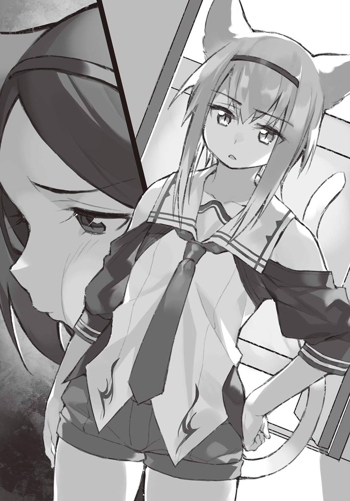
「......危険人物」
「お馬鹿」
「......馬鹿じゃないもん」
「ここまで言って、まだ休みもせず、かといってお客様の様子を見ることもせず、ぼんやり意味なくママの寝顔をながめてるだけというのは、弁解の余地もなくお馬鹿だと思いますが、違うでしょうか？」
「............うー」
「お前が私に口で勝てるわけないんですよ。いいから、ここは任せなさい。休むのが嫌なら、厨房にでも行ってきなさい。においでわかりませんか？ 料理をしてくださってますよ、お客様が。お前がぼんやり突っ立ってるあいだにね」
「......」
「もう一度、お馬鹿と言いましょうか？」
「......わかった。行く。ママになんかしたら許さないからね」
「看病以外しませんよ。お前は私の目的を勘違いしてます。私の最終目的は、『ママを倒すこと』じゃありません。パパを奪うことが最終目的です。病気のママにとどめを刺したって意味ないですよ。きちんと、超えてからじゃないと。強さでも、人としても」
「......むー」
「まあ、初恋もまだで、知能も精神もお子様なお前には、わからない話だったでしょうか」
「......ばーか」
「ふふん、負け犬の遠吠えが心地いいですねえ」
「......うー」
ノワはなにか言ってやりたくてむずむずと口元を動かすが――反論は出てこない。
そうこうしていると、部屋の扉がノックされる。
ブランが顎をしゃくった。
応対しろ、ということだろう。
悔しかったが、ノワは口で負けたばかりなので、暫定勝者の言うことに従った。
扉を開けば、トレイに乗せた料理を運ぶ、トゥーラがいた。
「ノワさん、お食事をお持ちしたのであります。......おや、ブランさんも。お話だと倉庫に監禁されているとか聞いたのでありますが......」
トゥーラが苦笑する。
それには、ブランが答えた。
「はい。さっき、出ましたよー。ママの看病をしないといけないですからね」
「なるほど。......なるほど？ ま、まあ、お母様が倒れていらっしゃると、心配でありますからな」
「はい。とっても心配です」
ブランがわずかに微笑む。
ノワは「外面ばっかり」とつぶやいた。
すねているノワを横目にブランが続ける。
「あの、ところで、ノワを、食堂に連れていってくれますか？ 今までずっと看病してたみたいだから、そろそろ休ませてあげないと」
「そうでありますな。......しかし、自分はこれから、女王陛下のご命令もあるので、ヨミさんの様子を観察させていただかないといけないのでありますが」
「......ご命令ですか？」
「そうであります。ヨミさんの自己治癒に任せれば間違いないとは思うけれど、万が一があるかもしれないということで......自分が聞いた話ではないのでありますが......実際に任務にあたる自分ではなく、オッタさんが聞いた話でありますが......」
「なんだかお疲れですねー......結構。なにかあったら呼びますから、トゥーラさんも食堂でお休みになっていてください」
「しかし自分、先ほど、食堂の空気を悪くしてしまったので、戻りにくく......」
「......わかりました。じゃあ、一緒に看病をしましょう。......ノワは食堂で休んできなさい」
「それがいいでありますな。看病は自分たちが代わるのであります」
ブランの言葉に、トゥーラが賛同した。
ノワは、姉妹のことをとてもずるいと思った――先ほどまでのやりとりを知らない人を味方につけられたら、断りにくい。
ノワはやっぱりなにか言ってやりたかったけれど、言葉は、見つからなかった。
「わかった......行くの」
渋々、母のもとを離れると決定した。
ブランは笑う。
眠たげな表情からの、かすかな、儚い微笑み。
けれどノワには、勝ち誇った顔に見える絶妙な表情。
「......まったく、無理をして。このお馬鹿」
最後にそんなことを言う、ブラン。
反論できないので、逃げるように部屋の外に足を進める。
部屋から出る直前、母の方を振り返る。
まだ、目覚める様子はなかったけれど、その寝顔は落ち着いて見えた。
たぶん遠からず元気になるのだろう。
そのように前向きな解釈をして、ノワは部屋を出た。
○
夕方ごろ、ヨミの体調は回復した。
「実は、こう見えて意外と体は弱くてねえ」
目覚めたヨミは、迷惑をかけた謝罪、食事を作ってもらったお礼を述べたあと、そんなことを白状した。
ヨミの体が『弱い』なら、体の強い人類はどのぐらいいるのだろうかと、ロレッタは疑問に思いもしたが......
きっと刃が通るかどうかと、病気に抵抗できるかどうかは違うのだろう、と結論した。
ヨミは回復後、病み上がりだしもう少し休むべきだという意見をおして働いている。
責任感が強いのか、『休む』ことに抵抗があるようだった。
だから――
『銀の狐亭』一階、食堂。
昼時にいったん、みんなそれぞれの仕事をしに行ったものの、また、全員がそろっている。
ヨミはテキパキと、全員のための料理を用意していた。
すっかりいつもの空気だ。
宿泊客たちは、それぞれが今日のことを、口々に言い合っていた。
「いや、だからよ、違うんだってば！ あたしはメイド服着るだけだし、なんもおかしなことは約束してねーって！」
「はいはいそうッスね。......あ、ところで今日の仕事で面白いお客さん来たんスよ」
「話聞けよ！」
「コリーさん、無視をなさらないであげてくださいまし。わたくし、ホーさんのメイド姿に興味がありますわ」
「姿に興味持つな！ 経緯が別におかしくねーっていう話をしたいんだよ！」
「ホーはロレッタの家に就職するのか？ オッタ知ってるぞ。永久就職だな？」
「違うわ！ どうして話に尾ひれをつけたがるんだ......」
「話というのは尾ひれがついておもしろおかしく語られてしまうものであります。自分も、話した時はそんなつもりではなかったのに、いつのまにか取り返しのつかない......あんな、あんははずでは......！」
「......トゥーラはマジで休め」
「しかし、自分はまだ勤めて日が浅いので、休暇をとりにくいような気が......」
「オッタが言ってやろうか？」
「......オッタさんの性格が非常にうらやましいのであります」
「......よくわからない。オッタはなにか、うらやましいのか？」
「物事を誰に対してもはっきり言えるところなど、自分にはない美徳でありますな」
「............はっきり言いたいなら、はっきり言えばいい」
「それができないという話をしているのでありますが」
「......オッタには難しい」
「オッタさんは自由人ッスからね......」
「そうだな。オッタはもう奴隷じゃない」
「そういう意味じゃないんスけど......」
喧々囂々。
もう、誰がどの言葉を言っているのかさえ、わからなくなりそうだ。
......冒険者ギルドに併設された酒場を思い起こさせる。
複数の人が無節操に話し合う音の波――そこかしこで発せられる声は、ガヤガヤという意味をなさない音の波となって、ロレッタの耳朶を打つ。
よく考えれば、普段、あんまり繁盛しているとは言いがたい『銀の狐亭』が、これほど騒がしいというのも珍しい。
あとはソフィさえいれば、自分の知る宿泊客は全員集合なのにな――と、どこか的外れな残念さを、ロレッタは感じてしまう。
そんなことを考えていると――
――コンコンと、遠慮するようなノックの音が響く。
宿泊客だろうか。珍しい。
全員の声がピタリとやんで、それぞれ、顔を見合わせる。
「はーい」
厨房の中にいたヨミが、エプロンで手をふきながら小走りで駆けていく。
そして、扉を開き、誰かを――食堂からではまだ見えない誰かを、出迎えた。
「おや、いらっしゃい。早かったね」
ヨミのおどろいた声がした。
話し方からして、知り合いだろうか。
ほどなくして、ヨミがノックをした人物を連れ、食堂に戻ってくる。
そして全員がおどろいた。
来客は、金髪碧眼のエルフの女性だった。
緑色の服装は、葉っぱをつなぎ合わせたエルフの民族服らしい。
長い耳。美しい容姿――いずれもエルフの特徴だ。
しかし、大きすぎる胸が、エルフらしいという感想を口にのぼらせない。
その人物は、全員の視線を受けて、はにかむように笑った。
それから、ホーに視線を向けて、言う。
「......お久しぶりです、みなさん」
恥ずかしそうな声。
視線を向けられたホーが、おどろいたように立ち上がる。
「ソフィじゃねーか!?」
エルフの森に帰り、今は政治を取り仕切っているという、女王。
ソフィ・ベルが宿屋に戻ってきた。
○
「王都に予定があって......それで、今日はアレクさんに連れられてここに来たです」
テーブル席に座らされたソフィは、全員に囲まれ、視線を受けながら、言う。
相変わらず、視線があまり得意ではないらしい。その表情はどこか恥ずかしそうだった。
「王都に来るまでもう少しかかる予定だったです。でも、アレクさんが迎えに来て、連れられて......荷車に乗せられて......あの人、馬車より速いです......速度だけで気絶したです」
なにやら大変な目に遭ったらしかった。
しかし、ここにいる全員はアレクの修行を乗り越えている。
なので『気絶するほどの速度で運ばれた』程度では、誰もなにも反応しない。
気になるのは、別なところだ。
全員を代表して、ホーがたずねる。
「つーか、アレクさん、一週間ぐらいかかるかもとか言ってたのに日帰りじゃねーか......まあそれはいいとして......ソフィ、来たのはいいけどよ、どうしてわざわざ王都に？ 今、エルフの森が大変だっていう話だったじゃねーか。つーか、来るならあたしにも教えろよ」
「それはおどろかせようかなって......来た理由は、政治的なものです。人間族と色々......法律など、参考にするため、人材を派遣してもらったり、エルフの森と交易路を結んでいただいたり、そういうお話のために来たです」
「......なんか知らねーあいだに、偉い人になっちまったなあ」
「そんなことないです。忙しいのは忙しいですけど」
「......っていうか、その偉い人が一人でうろうろしてていいのか？ 危なくねーのかよ」
「アレクさんに連れられて来たですから」
「ああ......護衛いらねーわな」
「あと、仕事が終わるまではここで過ごさせてもらうですし......」
「ああ............護衛、いらねーわな......」
「ここから王城までは近衛兵の人をつけさせてもらうことになってるです。トゥーラさんについていただけるという話です。知り合いだからですね」
ソフィが微笑む。
トゥーラがおどろいた顔をした。
「えっ......自分、なにも、聞いてないでありますけど......なにも......例によってなにも......」
「ま、まあ、本来、わたしが来るのはまだもう少し先の話だったですから......ところで、なんだかトゥーラさん、目に見えてやつれてるです。平気です？」
「............その、休暇をとろうかと、予定を」
「そ、そうですか......護衛は他の方に代わっていただいてもいいですよ？ それにわたし、自分の身は自分で守れるですし......」
「いえ......ソフィさんの護衛は自分がやらせていただくであります。嘆いても仕方がないのであります。自分は現実を受け入れるのであります」
「なんだか必要以上に悲壮な決意が見えるですが......」
「いえ。......この宿に戻って、少し気を休めることができたでありますから。自分は平気であります。教官どのの修行に比べればこんなの、平気であります」
「アレクさんの修行に比べたらたいていなんでも平気です......わたしも、毎日毎日、制度作りや陳情処理で頭がおかしくなりそうですけど、そういう時はアレクさんの修行を思い出して、頭をとろけさせてリフレッシュするです」
「そうでありますな......なにも、考えなければ、つらいことは、なにも......」
二人して、死んだ目で笑い合っていた。
公務員組がガンガン精神を摩耗させていく姿は、周囲の者の涙を誘った。
そんな中、貴族ではあるものの比較的自由の身であるロレッタが首をかしげる。
周囲を見回したうえで、口を開いた。
「そういえば、ソフィさんを連れてきたというアレクさんはどちらに？ 私の背後か？」
「いえ、アレクさんなら王城の方へ向かったです」
「そうなのか。まあ、多忙なお方だからな......」
「......ところで、その、言っていいのかわからないことですけど......」
ソフィの視線が、厨房で調理をするヨミへ向く。
ヨミが首をかしげた。
「どうしたの？」
「い、いえ......その、ええと......アレクさんがですね、妙な箱を、持ってたです」
「箱？」
「金属製の、とても丈夫そうな、大きな箱で......」
「......」
「その子供ぐらいならすっぽり入りそうな箱と一緒に、私は荷車に積まれてここまで来たですけど......箱から、声が、聞こえてきたですよ......」
「............」
「くぐもっていてよく聞こえなかったですけど......女の子の声だったように、思えたです」
「..................」
「あ、あの、アレクさんは色々されてる方ですから、心配ないのかもしれないですけど、わたしは隣に乗せられていて、非常に恐ろしかったというか......アレクさんに聞いても答えがなかったですし......あのアレクさんが黙して語らないこととか、怖すぎて、怖すぎて......」
「う、うん、まあ......アレクはなんでもしゃべるからね」
「なに聞いても『はい？』って聞こえなかったふりをされるのが、ものすごく、色々と、恐ろしく......ひょっとしたら、奥さんであるヨミさんに言ってはいけないことなのかもしれないですけど......あの、もし知ってたらなにか、教えてほしいのです......」
「うーん......ぼくもねえ、あの人のやってること全部を知ってるわけじゃないから」
「本当に？」
「うん、本当、本当。まあでも、大丈夫だと思うよ」
「女の子を金属製の箱に監禁して運んでいたとしたら、それはどのような事情があっても『大丈夫』ではないと思うのです......」
「『女の子』ならね」
「......どういう意味です？」
「さあ？ まあ、あの人のことだから『妖怪』でもつかまえたんじゃないの？」
「『妖怪』？ たしかアレクさんもそんな表現をしたことがあるような......それはなんなのです？」
「アレクの世界のモンスターみたいだよ」
「異世界のモンスター、ですか......そんなものと一緒に積まれてきたというのは、やっぱり恐ろしいのです......」
「だから、その異世界のモンスターを逃がさないための箱なんじゃないのかな？ ......まあ、とにかく、お疲れ様。ウチの人が怖い思いをさせてごめんね。でも、大丈夫だよ。全部片付いたと思うから」
「はあ......なんだかよくわからないですが」
ソフィが首をかしげる。
コリーが微妙な表情で口を開いた。
「......っていうかその箱、たぶんアタシが作ったヤツッス」
「コリーさんがです？ でも、刀剣鍛冶のはずです」
「そうッスよ。でも刀剣の技術は『丈夫な鋼を作る技術』でもあるッスからね......『聖剣以外では斬れないものにしてくれ』ってオーダーだったんで、かなり気合い入れて作ったッスけど......まあ、かなりのお金もいただいたッスけど」
「『聖剣以外では斬れないもの』って......そんなもの存在するですか？ 聖剣って伝説に出てくるもののはずです。実在しないものでしか斬れない箱と言われても......」
「あ、いや、聖剣はアタシが前作ったんスよ。ソフィさんが出ていったあとッスけど」
「......」
「で、その箱も、存在しないからアタシが作ったッス」
「......アレクさんも大概です。でも、コリーさんも、けっこう大概だと思うです。実は宿泊客の中で一番アレクさん側の人物はコリーさんではないかと、わたしは疑ってるです......」
「ははは。そんな、まさか」
「アレクさんは強さにおいて前例がないし、難しいことを簡単そうに言うです。コリーさんは刀剣鍛冶において前例がないし、難しいことを簡単そうに言うです。似てるです」
「いやでも、がんばったら誰でもできるッスよ。アタシの技術も今、後進に伝えられるよう簡単にまとめてるッスから......死ぬ気で打ちこめば数年で習得できるッスから......」
「その口ぶりがアレクさんそのものです」
「そんなことないッス」
「でも」
「そんなことないッス」
「......」
「そんなことないッスからね」
「............コリーさん、認めた方がいいです。楽になるです」
「いやだ！ アタシはまだ人をやめたくないんスよ！」
「手遅れです......」
「アタシは普通の人ッスから......普通ッスから......」
「普通とはなんなのか、わたしには難しくてわからないです」
「普通......普通......なんスよ......」
ソフィと会話したコリーの目から光が失われていく。
トゥーラに続いて、コリーまで生気が消えたせいで誰しもがソフィとの会話をためらう。
次に会話した者も、あんな風にされるのではないか――その場にいた全員が胸中でそんな不安を抱いた。
そういった空気の中――ソフィの正面にいたホーが、口を開いた。
「......まあ、今は色々忘れて楽しもうぜ。みんなつらいみてーだけどさ、たまに集まった時ぐらい、そういうこと気にせずにさ。あたしたちはみんな、仲間じゃねーか」
「......ホーさんは恥ずかしいこと、平気な顔で言える人ですね」
「えっ、いや、その......い、いいだろ！」
「相変わらずかわいらしくてホッとするです。ホーさんはずっとそのままでいてほしいです」
「なんだよ。妙に穏やかな顔で見るんじゃねーよ」
「ホーさん、今日は一緒に寝るですよ」
「は？ 部屋はまだあんだろ？ まあいいけどさ......」
「やった。ああ、どさくさにまぎれてホーさんを森に連れ帰りたいです......」
「や、やめろよ......なんか目が本気で怖いんだよ......」
おののくホー。
しかし目から光は失われていない。
全員が、ホッとした気持ちで、ソフィとホーのやりとりをながめる。
ロレッタもまた、二人のやりとりを見ていた。
二人の仲がいいのは周知の事実だったが――以前にはなかった危険な雰囲気が、主にソフィ側からかもしだされていた。
先ほどの『森に連れ帰りたい』発言も、冗談ではなく、少し目を離したら本当に実行しそうな危うさが感じられたのだ。
みんな色々あった。
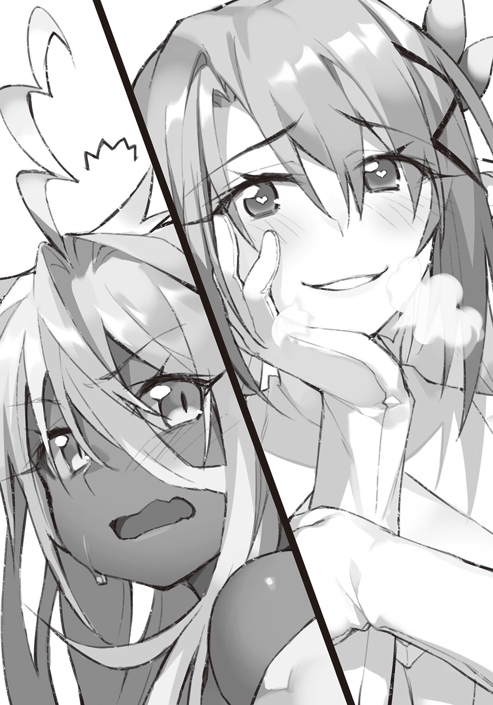
そういうことだろうと、ロレッタは思う。
「......私もそろそろ、帰らねばな」
小さく、つぶやく。
......そうだ、いつまでも子供ではいられない。
大人になるのは不安だらけで、社会に出た仲間たちを見ていると『子供でいたい』と嘆きたくもなる。
いつまでも強くて頼れる誰かの下にいたい――そういう思いがあったけれど、そろそろ卒業してもいいころだろう。
今まではできる限りのことをしてきた。
これからは、できないばかりのこともしていこう。
それでもつらくて不安で心がすり減ってくじけそうになった時は――
また、『銀の狐亭』に来よう。
ロレッタは密かにそう思いながら、騒ぐ仲間たちを見やる。
夕方は夜になり、夜はさらに更けていく。
なんだかんだとわめき散らしても、朝になればみんなまた、日常に帰っていく。
うまく、言葉にできないけれど、きっとそういうことなのだろうと、ロレッタは笑った。
○
視界が力尽くで斬り拓かれた。
ソレは突如視界に飛びこんだ輝きに、顔をそむける。
いやにかび臭い空間だった。
目が慣れてくる。
どうやら、周囲は石で囲われているようだ。
それも人工的にくみ上げられた石の壁ではなく、天然の鍾乳洞のような、石壁だ。
足元には、水がたまっている。
ピチャンピチャンとどこからかしずくの垂れる音。
......地下、そう浅くない位置にある牢屋だろうと、ソレは経験からあたりをつける。
正面を見る。
そこには、魔導具のランプを手にした男がいた。
狐面をかぶっているため、顔はうかがえない。
だが、ソレは、視界内の男の背格好や、そいつがまとっている銀の毛皮のマント――
それから腰に見える、無骨な短剣――ナイフ程度の長さの、しかし本来はナイフではなかった剣に、見覚えがあった。
「アレクサンダーか」
ソレは笑う。
手足はなにかに拘束されており、少しも動かせなかった。
魔力さえ、自由にならない。なにかよくわからないもので封じられているらしい。
なにより、あつらえたように体がピッタリとはまりこむ、金属の棺に入れられている。
腕力だろうが魔力だろうが、この状況を打破するのは難しいとソレは判断した。
絶体絶命――けれど、緊張感など欠片もなく、ソレは、仮面の男へ語りかける。
「よくぞ、わらわにたどり着いたのう。貴様には決してわらわのあとはたどれぬと、そう思っておったのじゃが」
「............」
「......なにかしゃべれ。わらわと語りたくて、わらわを捜しておったのではないのか？」
「......いや、困るな」
仮面をつけたまま、男がつぶやく。
その声には、強い困惑の響きがあった。
だから、ソレは問いかける――肩すかしのようなものを感じながら。
「どうしたのじゃ、アレクサンダーよ」
「......こうして向かい合えば、自然とどうしたらいいかわかるというような話をされたんだけれど、どんな顔をしてあんたを見ていいのか、わからない」
「......それで仮面を外さんのか」
「たぶん、怒ったり、恨んだりすればいいんだろう。でも」
「わらわのことを、ずいぶん調べたようじゃのう」
「予言者カグヤ」
「正解じゃ。......半分はな」
「......半分？」
「わらわが『予言者カグヤ』であることは、ある意味で事実じゃな。しかし、それだけでは不十分じゃ。......貴様は、なぜわらわが五百年も生き続けておるのか、その仕組みを理解しておらんじゃろう？」
「まあ、そうだな」
仮面をつけた男は、あっさりと認めた。
カグヤは――カグヤという呼称で『半分正解』の存在はつまらなさそうに唇をとがらせる。
「......悔しがるとか、もうちっと面白い反応をせい。貴様との会話はいつからこのようにつまらんものになった」
「悪いが、あんたが『どのように』五百年を生きたのかは、俺にとって興味の対象じゃない」
「つれないのう」
「......質問は三つだけだ」
「言うてみ」
「一つ目。ヨミがあんたの実子かどうか」
「............」
「二つ目。なぜ、『輝く灰色の狐団』を滅ぼしたのか」
「......ふん」
「三つ目。これは今思いついたものだけれど――なんのために、五百年も生きたのか。『どのように』ではなく、『なぜ』だ」
「......」
「正直なところ一つ目以外はどうでもいい。今さら知ってもどうしようもないことだ。そして、一つ目の質問にしたって、あんたの持っていた日記を読めばいい。すでに没収済みだ」
「ならば、なぜ聞く」
「あんたの口から聞きたいからだ」
「ほう、どんな意味がある？」
「いつもやっていることだから、かな。裏を取るだけでは足りない。証拠をそろえ、噓をつけない状況を作り、本人の口から証言させて、ようやく事実を事実と認める。それが俺のやり方というだけの話だ。あと......」
「......」
「まだ、あんたにどう対応していいか、俺の胆が決まっていない」
「............」
「恨むか、怒るか、同情するか、共感するか。あるいは母との再会に喜ぶか、今までともに過ごせなかったことを恨み、嘆くか。話しているうちに、俺の気持ちも定まるかもしれない」
「......相変わらず、場当たり的な生き方をしているようじゃな。『はいいろ』に挑みかかり撃退され、そのまま『輝く灰色の狐団』を継いだ時と、なんら変わらんのう」
「言う通りだよ。だからこれは、成長のための儀式だ」
「......」
「あんたと対話することで、俺はようやく、前に進むことができる。............先代の願いや想いじゃなくて、自分の意思で歩き出すことができると、思うんだ」
「貴様に『自分の意思』なぞあるのか？」
カグヤのような存在は笑う。
ようやく楽しくなってきた、とでも言うように。
「貴様は『輝く灰色の狐団』に来た当初からそうじゃな。強い目的意識もなく誰かの借り物のような言葉をしゃべり、目の前に出される目標にただ従うだけじゃ。なぜ、『はいいろ』の修行を受けた？ なぜ、『狐』の修行を受けた？ なぜ、わらわの修行を受けた？ それは『言われたから』ではないのか？」
「............」
「『はいいろ』と『狐』は、貴様のことを褒めておったよ。精神は頑強には思えない。だというのに死を前提としたつらい修行を、文句を言いつつも淡々とこなす。『天眼』とか言うておったかのう。『修行をする自分』をどこか遠いところから観察しているようだ、とな。貴様にある唯一の才能じゃと。習得困難な達人の視点じゃと、そう言っておった」
「......」
「馬鹿を申せ、と思ったわ」
「......」
「貴様は、ただ、他人事なだけじゃ。空っぽの肉の器。目的なき生命。それが貴様の正体じゃろう。貴様のようなやつを知っておるぞ。貴様のようなやつはな、簡単に命を捨てる。自分に対し価値を見出しておらんから、自分を失うことへの恐怖がない。貴様の命は、常に『他者の目的』より軽い」
「............」
「いくら師匠の頼みとはいえ、その目的のために、十年を超える歳月を費やすなど、ありうるのか？ いくら師匠の娘をあずかったとはいえ、そやつの『結婚』という願望を叶えるためだけに、こんなにも面倒くさく隠れ続けたわらわを捕らえるなど、ありうるのか？」
「......」
「いや、そう思う時期があるぐらいなら、よかろう。しかし、貴様は追い続けた。ひとときも休まず、人生のすべてを、他者の願いに捧げ続けた」
「............まるで、俺の心をのぞいたみたいに、断定的だな」
「のぞいたとも」
「......」
「そして、わらわは思ったのじゃ。――気持ち悪い、とな」
「......」
「おおよそ人の思考ではない。目的を持った時、横道に逸れぬ者は立派じゃが、立派なことを実際にやるのは『いかれ』じゃ。『立派』というのは、『普通の人はそうならない』という言葉を言い換えたものにすぎん。欲望にまったくなびかぬ者、目的を見据えて休憩せず走り続ける者など、気持ちが悪くてたまらん。そういうのをわらわは『人』とは思えん」
「......」
「貴様は『おかしい』という点では、たしかに英雄アレクサンダーと似ておる。しかし、貴様のおかしさは、かの男とはまったく正反対じゃ。欲がなさすぎる。己がなさすぎる。生きて、いなさすぎる」
「......」
「さて、与えられた目標だけを一心に追い続けた貴様は、目標を達成したあと、どう生きるつもりじゃ？ 貴様に、『自分の意思』なぞ、あるのか？」
「............」
「答えろ、アレクサンダー。未だに仮面さえとらず、表情さえさらさぬ抜け殻よ。貴様の答えいかんで、わらわも、貴様の質問に答えるかを、決めよう」
「なるほど」
アレクサンダーはうなずき、仮面を外した。
――苦悩。
仮面の下からあらわれたのは、考えこむような、悩むような、そういう表情だった。
「俺に『自分の意思』はない」
「......ほう」
「色々な人を見てきた。裏切られてなお誇りある生き方を選ぶ人。捨てられてなお誰かのために尽くそうとする人。生まれ持った『他者からの期待』に振り落とされながらがんばる人。抱いた決意を真っ直ぐに追い続け、決して折れなかった人。弱い自分と過去を乗り越えたくてあがき続けた人。時代を変える才能を持ってしまい、古い者との軋轢に苦しんだ人。誰かを助けたいと思いながらも不器用さからどうにもできなかった人」
「......」
「彼女たちには、『自分の意思』があったと思う。......全員が報われたとは思わない。誰もが最高に幸せな結末を迎えるということは、決してなかった。でも、俺は、彼女たちに力を貸すことができて、嬉しかった」
「......ふむ」
「俺は、誰かのための『昨日』でありたい」
「......」
「誰しもが救われる世の中は、俺の代ではきっと無理だ。だから俺は、次代の踏み台になる。俺が駄目なら、俺の弟子が。それでも駄目なら、その弟子が。少しずつでも世の中をよくしてくれれば、きっと最終的にみんな幸せになる。俺の過ごす『昨日』よりも、誰かの過ごす『明日』が幸せになってほしい」
「だからそれが、人でなしだと言うのじゃ。その博愛は人のものではありえない」
「......」
「かつて『はいいろ』が願ったのは、もう少し、利己的な理由じゃったぞ。あやつはな、己が幸福になれんと理解していた。それゆえに、他者の幸福という代償を求めたのじゃ。貴様とは違う。貴様のような――神の視点に立ったつもりの『人まがい』とは、違う」
「俺は人だ。『まがい』じゃない。この願いを抱くのは、人以外にありえないと、俺は思っている。人の幸福を願う、人の欲だ」
「............それにしたところで、けっきょく、貴様の目的ではなかろう」
「たしかに、受け継いだものだ。まだまだ、『俺の意思』じゃない。......だから、あんたを乗り越えて、『自分の意思』にする」
「......戯言じゃな」
「いや、違う。俺は『はいいろ』を継いだ。『狐』を託された。そしてあんたから正式に『輝き』を奪い取る。あんたたちを全部、俺の一部にして、ようやく俺は、『はいいろ』の願いでしかなかったものを俺の意思だと、胸を張って言えると思うんだ」
「......ふん。詭弁じゃな。貴様はやはり、自力で目標を定められん欠落者に変わりはない」
「欠落は悪いことじゃない。......人は、どこか欠けていたり、どこか尖っていたりするものだと、俺は思う。デコボコだから人は一人では生きられない。仲間が、必要なんだ。俺は、そう思い続けてきたよ」
「......はん。気に入らんのう。まことに気に入らん。......こうして、貴様らは、成長する。変わっていく。わらわの手を離れて――わらわを置いていく。......寂しいのう」
「......寂しいなら、なんで生きたんだ。誰かに置き去りにされる前に、誰かと一緒に生き抜くことも、できただろうに」
「ま、まずはそのあたりからじゃな」
女は静かに笑う。
険がとれた、穏やかな微笑みだった。
「貴様の質問に、あますことなく答えよう。といっても、おそらくわらわの話にはならんじゃろうな。わらわの人生を振り返ることで、貴様の疑問には答えられん」
「......じゃあ、誰の話だ？」
「さて......誰の話、と言うべきか。男の話でもあり、女の話でもある。一方で、やっぱりわらわの話でもあるかもしれん」
「ここにきてはぐらかすな」
「そういうつもりではない。ただ、そうじゃな――おそらく、男の話に聞こえるじゃろう」
「......」
「アレクサンダー。......ああ、貴様ではないぞ。五百年前の英雄、アレクサンダー。わらわとともに生きた男であり、わらわの、初恋の相手じゃな。そやつの話に、聞こえるはずじゃ」
「......」
「微妙な顔をするな。質問に答えるのに必要な手順じゃ。母親の恋愛話など気持ち悪いかもしれんが、まして初恋相手の名前をつけられているなど、吐き気を催すかもしれんが――まあ、まずは聞け」
苦笑して――
「昔々、あるところに、アレクサンダーという男がおった」
昔話のように。
あるいは、誰かの記した回想録のように――母は子に、話を語り聞かせ始めた。
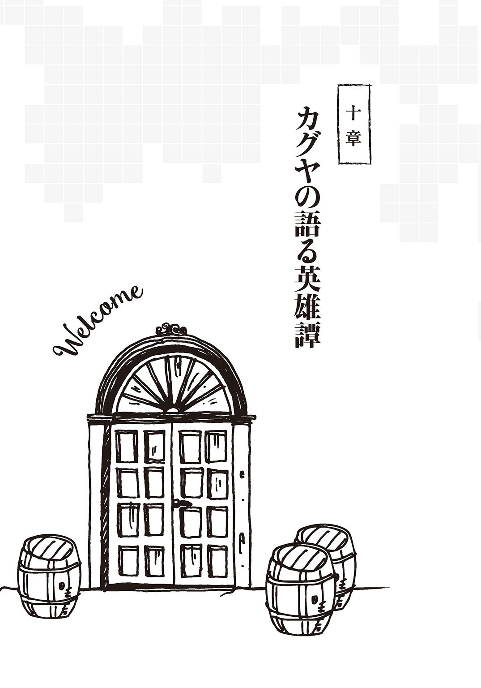
『輝き』は五百年前の英雄譚を語り出す。
登場するのは今なお口伝や書物にその名を轟かす、きら星のごとき英雄たちだ。
偉大なる伝承とともに語られる、人という種族をモンスターから解放した
偉大なる人類史の立役者たち。
だが、『輝き』は、その伝承を誤りだと言った。
そうして語られる真実の中で、英雄は決して英雄ではなく、
偉大なる者はまったく偉大ではなく、
そして、その結末は決して幸福なものではなかった。
五百年前から現代に続く伝承の真実、そして『輝き』の正体が明かされていく。
現代に伝わる概略。
多くの人が知っているであろう『アレクサンダーの伝説』をざっくり語ると、こうなる。
その昔、まだダンジョンというものがよくわかっていなかった時代、世界はダンジョンからあふれ出したモンスターでいっぱいだった。
人の集落は点在するだけで連携関係にはなく、人類は滅びを待つだけかと思われた。
そんな時、大陸の東端にある人物が誕生した。
アレクサンダーという、少年だ。
その少年はすくすくと成長したが、十五になったある日、育った集落をモンスターに襲われてしまう。
彼にはそれまで隠してきた力と、違う世界の記憶があった。
しかし、彼は故郷を救えなかった。
モンスターを倒しにダンジョンに出向いている最中に、村が襲われたのだ。
「一人でできることには限界がある。仲間を募ろう。強く、頼れる、仲間を」
少年のアレクサンダーはその理念のもと、滅びた集落をあとにして、各地を回る。
様々な人との出会いがあった。
長く果ての見えない旅だ。モンスターという脅威をわかっていても、いや、わかっているからこそ、『この脅威はなくならない。だから、危険な旅なんかしないで、今の暮らしでいい』という人も多かった。
それでも、共感する者もいた。
アレクサンダーはそういった人々を束ね、大陸を東から西へ、モンスターを倒しながら横断していった。
アレクサンダーの率いる特に強い戦士たちの名は、各地で神話や伝承に残っている。
束ねるのは勇者たる『偉大なるアレクサンダー』。
強大な癒やしの力を持つ人間族、イーリィ。
獣人族で神と交信のできる予言者、カグヤ。
寡黙なエルフの戦士、サロモン。
鍛冶神の生まれ変わりとされる、ダヴィッド。
『真白なる夜』。
賢き小さな大樹、ウー・フー。
それから、名を語るもはばかられる『月光』。
旅は続く。
倒したモンスターは数知れず、救った人々の数も、数え切れなくなった。
閉ざされた人の心を開く。最初は懐疑的だった世界が、彼らを認めていく。
――仲間が増える。
一人だったアレクサンダーが、イーリィと二人になったように。二人が四人になったように、四人が八人になったように。十人は百人になり、百人は千人になり、千人は一万人になった。
――人々が呼応する。
あとはもう、乾いた草地に火を放つがごとく、人類の反撃が始まった。
モンスターはダンジョンに追い返された。
完全とは言えない。けれど、人々は城壁を築き、自身の領地を確保した。
『偉大なるアレクサンダー』は国家を樹立する。
誰しもが平和に生きていくために、人々の結束をなくしてはならないと考えたのだ。
......最初は、うまくいった。
しかしモンスターという差し迫った脅威がダンジョンとその周辺に細々出現するだけとなった時代、人々は、隣人と自分の種族が違うことを思い出してしまった。
自分ではない種族が優遇されていると感じれば、不平不満を漏らす。
自分ではない誰かの幸福を、肩を組んで喜ぶのが、だんだん、難しくなっていった。
仲間たちは事態を憂い――一つの決定をする。
「急速にことを進めすぎたのがよくなかった。違った種族同士がなんのわだかまりもなく協力関係を築けるようになるには、まだもう少し時間がかかる」
仲間たちは、それぞれ、自分の種族を率いて大陸中に散らばることにした。
『月光』は静かに姿を消した。
ウー・フーはドライアドたちとともに南東の森を住処に選ぶ。
『真白なる夜』は南の絶壁の向こう側に新天地を求めた。
ダヴィッドはドワーフたちと鉱石を掘り暮らすため、山脈地帯に向かった。
サロモンは北東にある森で静かなる余生を過ごすと決め、エルフは彼に従った。
カグヤは最後までアレクサンダーのもとに残りたがったのだが、獣人の指導者にならざるを得なかった。だから、獣人を率いて王都周辺を移動しながら暮らすことで、少しでもアレクサンダーのそばにいようとした。
イーリィとアレクサンダーは結婚し、子を成した。
......さらに数十年の時が経った。
老いた『偉大なるアレクサンダー』は、長年連れ添った妻のそばで、最期を迎える。
彼の伝説は、様々な語り口で各地に伝わっている。
人間族においては『偉大なる初代大王』として。
獣人族には『崇めるべき神の現身』として。
エルフでは実に様々な話がある。これは、サロモンがあまりアレクサンダーについて無責任な武勇伝を語るのをよしとしなかったため、人々が勝手に想像した結果だろう。
ドワーフのあいだでは『親しみのもてる人間』としての話が多い。伝承に、アレクサンダーとダヴィッドの友情を示す話が多いのが理由であったと考えられる。
真白なる種族――現在で言われるところの『魔族』の存在は、一時期ぱったりと途絶えるので、そこでアレクサンダーがどのように語られていたのかを確かめる術はない。
ドライアドでは『好色なる若き英雄』としての話が多いようだ。これはウー・フーにとってアレクサンダーがかなり年下だったことと、イーリィとカグヤの存在が理由だと考察できる。
さらに長い時間が経つ。
伝説は伝承になり、お伽噺になり、もう少し経てば神話となるだろう。
伝聞と推測で彩られた物語は、もう、修正不可能なほど人々に根付いてしまっている。
――だからこの噓だらけの話が神話なんぞに成り上がる前に、事実を伝えねばならない。
これからするのは神ならぬ者の話。
人並みに悩んだ、欠陥だらけの男の話を、始めよう。
○
「おっ、生きてんじゃん」
暗闇に差しこんだ光とともに、そんな、男性の声が降ってきた。
夜のはずなのに、あまりにまばゆい。
彼女は目を細め開かれた天井を見上げる。
目が慣れてくれない。
だから、見えるのはヒトガタのシルエットのみ。
でも、なにかがおかしい。
どこかつるりとした印象の頭部を見る。
......そうだ、そのシルエットには、あるべき場所に耳がないのだ。
おまけに、尻尾の影も見当たらない。
不自然さに首をかしげる。
と、シルエットが、手を伸ばしてきた。
「ほれ、出るぞ、チビ狐」
「......」
不可解な言葉だった。
『出る』とは、どういうことなのか。
少女は知っている。自分は、ここから出てはいけない存在だ。
かびくさい、湿った地下の空洞。
鍵のかかった天井から、わずかに差しこむ光。
食事は投げこまれる残飯で、寝床は少しだけ盛り上がった岩場。
――呪われた子供。
――お前は、みんなを不幸にする。
――いいかい、決して、神の許可なく言葉を発してはいけないよ。
――ここから出ても、いけない。
――じゃないと、みんな、みんな、不幸になるからね。
幼い少女は、大人たちの言葉を信じた。
自分は呪われていて、みんなを不幸にする。
口を開いてはいけない。この場所を出てはいけなくて――ここで、死んでいく。
そういうものなのだろうと、少女は信じていた。だというのに、男は『出ろ』と言う。
少女には理解できない言葉だった。
だから、反応しない。
男は、少女があんまりにも動かないものだから、焦れたのだろう。
すたん、と天井にある『入り口』から、少女のいる場所に降りてきた。
初めて男の姿がはっきり見えた。
幼さを残す少年だ。
頭の上に耳はなく、尻尾もない。
髪も目も黒く、顔にはどこかいたずらっぽい笑みがあった。
「うっわあ、ヒデェ......避難のために入った感じじゃねーな。知ってるぞ。コレ。モンスターよりなおひどい人の所業だ。お前、閉じこめられてたんだな」
顔をしかめながら笑う、という器用な表情だった。
中性的な顔立ち。
身につけた革製の鎧と、背中に負った大きすぎる剣が、やけに似合っていない。
「......やっぱり『チートスキル』持ちか。ったく、この世界は狂ってんな。優れた力を持ったやつがいるなら仲良くすりゃいいのに。怖がって閉じこめて、馬鹿みてーだよ、ほんと」
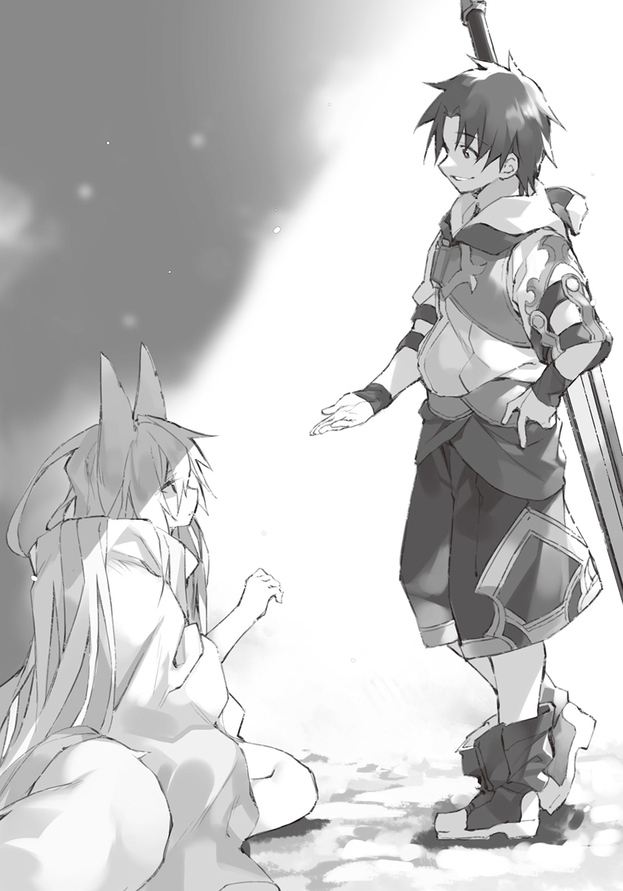
男性は、目を細めて、なにかを見ていた。
少女の方向にある、けれど、少女の顔より少し上の、なにかを。
......男の見ているものが、少女にはわからない。
けれど、きっと不愉快なものなのだろう。だって男は、舌打ちをしたから。
一瞬だけ不機嫌そうになった男は、また笑う。
それから、少女の両肩に手を置いた。
「チビ狐、さっきから黙ってるけど、生きてるか？」
「......わらわと話すと、呪われるぞえ」
「はあ、呪い？ ......ああ、はいはい。そういう理由付けをされてたわけね。色々考えるもんだなあ......イーリィの時は『魔の封印』だったっけ」
「......？」
「まあ、詳しい事情まではよく知らねーけど、俺が思ったこと言っていい？」
「......」
「お前のしゃべり方、おもしれーな」
「..................」
「実際いるんだな、お前みたいなしゃべり方するの。......ありがとう。お前と話して、俺の世界はまた広がった」
「......」
「なあ、今まで閉じこめられてたんだろ？ 退屈だったろ？ こんな、狭い場所で、ずっと生きてきたわけだろ？ つまんなかっただろ？」
「......」
答えない。
少女は必要以上にしゃべるのを嫌がった。だって、不必要な言葉は、不幸を生むから。
だというのに。
「世界の果てを見たくねーか？」
男性が笑って語った言葉。
......なぜだろう。その言葉だけは、どうしたって、聞き返さずにいられなかった。
「......世界の、果て？」
「そうだ。世界の、果て。知らない場所。知らない文化。知らない人々。知らないなにかを、見てみたくはねーか？」
「............よくわからぬ」
「よくわからない！ 俺もだ！ だから見に行く！ 俺たちは、その旅の途中なんだ」
「......」
「お前も来い。この世界には魔法がある。モンスターがいる。ダンジョンがある。色んな人種がいる。そのすべてを知り尽くさないだなんて、あんまりにももったいない。この広い箱庭を俺と一緒に遊び尽くそう。お前の力はきっと、そのためにある」
「......しかし、わらわと話すと、不幸にならんのか？」
「不幸？」
「......わらわは、呪われておる。それゆえ、閉じこめられておった。じゃから、わらわが口を開けば、誰かが不幸になると、この村の大人は、みんな、信じておったのじゃ。神からの言葉しか、わらわは、語ってはならぬ、のに......」
どうしてこの男のことは、無視できないのだろう。
少女は戸惑う。
男は、笑う。
「ふうん。で？」
「......やはり、わらわの言葉は、通じておらんのか？ わらわと話すなと、そのように言っておるつもりなのじゃが」
「いや、わかるよ。多少は通じにくいけど......でもなんでそんなしゃべり方なんだ？」
「わらわの言葉は、人ならざる者が、わらわの口を借りて発する言葉じゃ。それゆえ、みなと同じように話してはならぬと」
「なるほどね。わかるような、わからないような。まあ、この村なりの信仰があったってことなんだろう。しかし呪いねえ。非科学的な――とか言い出したら、魔法もそうだな」
男は笑った。
少し考えるように黙りこんでから。
「まあいいよ。別に、呪いがあったって」
「......じゃが、不幸になると」
「不幸すら楽しめなくてなんのための冒険だ」
「............」
「目的のモンスターに会えなかったり、欲しいアイテム出なかったり、金策に苦労したり、ダンジョンで死にまくったり、そういうのもひっくるめて『冒険』ってもんだろ？ 不幸、いいじゃん。歓迎する」
「......」
「だから、お前の言葉で、俺を不幸にしてくれ。――俺の力で、不幸をいい思い出に変えてやるから」
――光が、差しこむ。
これが夜の光だと、少女は知っていた。
朝や昼の光は、もっとギラついていて、強いものだ。
でも、夜の光は、少女のいた地下道を優しくぼんやり、照らしてくれる。
男性は天井の入り口からのぞく、空を見上げる。
そのあと、唐突に、名乗った。
「俺の名前はアレクサンダーだ。お前は？」
少女は名乗り返したかった。
でも――
「......わらわに、名はない。わらわは、呪われし子供」
「じゃあ俺が名付けるか。そうだなあ......」
アレクサンダーが空を見上げる。
夜の光が差しこむ、空。
その明かりを受けて立つ、少女。
......しばらく、間があった。
そして、アレクサンダーはようやく、なにかに思い至ったらしい。
「カグヤ」
不思議な音の連なり。
名前なのかどうか、少女には判別がつかない。
けれどアレクサンダーは、自信満々に、おかしなことを言う。
「俺の元いた世界の、昔話のヒロインだ」
まるで、ここ以外に世界があるかのように。
しかも『ここではない世界』を、すでに経験済みであるかのように。
「月光を受けて輝く、狭い場所に閉じこめられてた女の子。ちょうどいい名前だろ」
男は、いたずらっぽく笑った。
――それが、アレクサンダーと、カグヤの、出会い。
後に世界を変える――変えてしまった責任をとらされることになる、男の、不幸の始まり。
○
「目的地？ えーと......とりあえず西だな！」
......簡潔に述べてしまえば、アレクサンダーはいい加減な男だった。
まず、旅の目的がてきとうだ。
『世界の果てを見に行く』......具体的なプランがない。
また、旅というのは食事や睡眠をとる場所の確保など、細々したことを決めなければたち行かないもののはずだ。
しかし、アレクサンダーはそういう細かいことが苦手だった。嫌悪しているとすら言える。
細かい作業をやるぐらいなら死んだ方がマシ、と冗談ではなく思っているらしい。
......もっとも、これはただのものぐさとも言い切れない。『わからないこと』を楽しむ彼の性分によるところも、かなり大きい。
「きっちり準備して成功するのは当たり前だ。せっかく知らないものを見に行くんだから、なんにも備えないで、行き当たりばったりで、危ない目に遭ったりしながら進むのが、俺は好きなんだよ」
彼は常々そのように述べていた。
強がりや冗談ではなく、本気なのが、たちの悪いところだ。
死んだらどうする――というのは、彼の旅に同行するカグヤともう一人が、常々思ってしまうことだった。
もっとも、彼は自身の命の心配などまったくしていない。危機など、ありえるはずがない。
ともあれ旅の中でカグヤは、早くも実務を担う役目を得ていた。
だって、アレクサンダーがなにもしないから。
地図さえ満足に描かれていない時代だ。どういう道を通ればいいのか、どう行けばどこに出るのか、そもそも――行く先になにがあるのかさえ、まったくわからない。
予言者。
その肩書きを持っており、実際にいくらかの予言をしたこともあるカグヤではあったが、そもそも予言は万能ではなかった。
予言とは『知りたいことを知りたい時に知る能力』ではない。
『避けられない運命を少しだけ早く警告してくれる機能』だ。
旅には役立たない。
だからカグヤは、アレクサンダーを支えるために、様々なことを勉強するしかなかった。
山を見る力。天気を読む嗅覚。川の流れから、先の地形を予想する目――
どれも経験と想像力が必要で、カグヤには両方とも不足していた。
大変だった。
長年監禁されていた体は、すぐに音を上げる。
世界は知らないことだらけだ。
草を知らなかった。
――あの場所には岩と土しかないから。
花を知らなかった。
――あんなところに花を運んでくれる人は、いないから。
川を初めて見た。
――あの場所には岩を伝う水滴しかなかった。
空を知らなかった。
あの場所は、ずっと、食事が乱暴に投げ入れられる時以外は、閉ざされていたから。
情報の奔流。
体力のみならず、精神もまた脆弱なカグヤにとって、この旅は大変なものだった。
でも、楽しかった。
カグヤの体力が尽きて歩けなくなると、アレクサンダーがおぶってくれた。
――呪われているから、しゃべると不幸になる。
最初のころはまだ、そんな遠慮があったような気がする。
でも、時間が流れるにつれ、カグヤは呪いを忘れていく。
もう、カグヤが呪われていると言う人は、誰もいない。だって、育った村にいた人たちは、もう誰もいないから。
モンスターに襲われた、らしい。
......アレクサンダーたちは、襲撃されている村を、助けたのだ。
でも、村人はすでに誰もいなかった。
死んではいなくって、逃げただけらしい。
......ひどい話だ。呪われた子供は置き去りにして、全員で集落を脱出する。
「まあ、こんな時代だから珍しいことでもねーよ。そこら中モンスターだらけで、村なんていつ襲われるかわからない。一応壁みたいなもんはみんな作ってるみたいだけど、お前の村を守る『壁』は薄っぺらい木の板みたいなもんだったしな。逃亡準備はしてる方が自然だ」
アレクサンダーが村にたどり着いたころには、もう、村はもぬけの殻だったらしい。
死体もなかったので、『あ、これはみんな逃げたな』とピーンときたそうだ。
......だったら、なぜ、アレクサンダーは自分を助けてくれたのだろう。
もう誰もいないように見えたはずなのに、モンスターを蹴散らしてまで。
カグヤはたずねる。
アレクサンダーは笑う。
「お前がいたのは偶然だ。村に入ったのは、そりゃお前、勇者行為のためだよ。ほうほうのていで村人が逃げ出したわけだろ？ ってことは『薬草』とか『剣』とか転がってるかもしれねーじゃん？ おまけにモンスターとの戦いもできて一石二鳥ってやつだよ。わかるかな、一石二鳥。一つの石で二羽の鳥を落とすと超お得みたいな意味だけど」
言葉の意味はわからなかったが、アレクサンダーが正義の味方ではないことはわかった。
よくも悪くも、やりたいことをやるだけの人だ。
「でもさ、不便だよな、お前の予言も。だってモンスターの襲撃、予言したわけじゃないんだろ？ 自分のいる場所に起こるイベントも先読みできないっていうのは、パッシブスキルっぽいっていうか、イベント用スキルっぽいよなあ。自由度が足りない」
アレクサンダーはこのように、たびたび不可解な発言をする。
カグヤより先に彼と旅をしていたイーリィなんかは、このアレクサンダーの奇矯な言動について――
「......いえ、もう、兄さんの意味不明発言はあきらめていますから。適度に無視するのが上手にやっていくコツですよ。気にしたら負けです」
などと、長年慣れ親しんだ感のあるコメントを、ため息とともにくれた。
......アレクサンダーとイーリィは、同郷の出身だそうだ。
だから、イーリィはアレクサンダーを『兄さん』と呼ぶが、血縁はないらしい。
カグヤにはまだうまく呑みこめない関係性だった。
でも、そのうち慣れていくのだろうと、思っていた。
危険でつらい――けれど、ずっと続くと思えた、旅。
このまま、ずっと続いてほしいと思える、旅。
......変化がおとずれたのは、少しあとのことだった。
ある人物と出会ったのだ。
○
「やっべえ食い物ねーじゃん」
カグヤが、アレクサンダーとイーリィに同行して旅を始めてから、しばし経ったころ――
荷物の確認をした彼が、そんな風につぶやいた。
あたりはなにもない平原だ。
たぶん、遠いところに川はあるのだろう。
しかし視界に入る範囲にはないし、北側には、はげた山ぐらいしかなかった。
動物も、見当たらない。
アレクサンダーのこのつぶやきに、イーリィは「だから一週間も前からずっと『どこかで食べ物の補充をしないと』って言ってたじゃないですかあ！」と頰をふくらませていた。
このように、アレクサンダーはあまり人の忠告を聞かず突っ走る傾向にあった。
その忠告を受けるたびにアレクサンダーが言っていたことといえば――
「まあなんとかなるって」
という、非常に無責任なものだけだった。
イーリィはやや口うるさいところがあるので、その小言を打ち切るためだけにアレクサンダーが口にする常套句である。
しかし、イーリィの口うるささの原因は、八割ぐらいアレクサンダーの考えなしの部分に起因することを、カグヤは知っていた。
その考えなしのアレクサンダーも、さすがに食べ物がないという現状を前には、思案をした様子であった。
三秒ほど――彼にしてはかなり長いこと悩んでから。
「近くの村で分けてもらおう」
そのように結論した。
もちろん、この時点で『近くの村』なるものは視界にない。
それに、イーリィたちに聞いた話によれば、今の時代、村々は決して互助関係になかった。
モンスターも、村のものではない人も、すべては『外敵』とみなされるらしい。
世界にはモンスターがあふれていた。実際、カグヤも、アレクサンダーたちに同行してからという短い期間で、何度モンスターに襲われたかわからない。
モンスターたちは決して強いという印象はなかったけれど、数は多いし、人だけを執拗に狙ってくるので、厄介だ。
自然、村の外に出るのは命懸けになり、人々の生活は集落ごとの自給自足がメインとなる。
そういった時代に『食糧を分けてもらいに来る他人』など、歓迎される理由がなかった。
イーリィも、カグヤと同じ見解だったらしい。
彼女はアレクサンダーに「そんな都合良くいかないですって。兄さんは本当に、もっと後先考えてくださいよ！」と『口うるさく』言う。
アレクサンダーはやっかいそうに顔をしかめて――
「まあ、なんとかなるって」
気楽そうに言って、歩みを進める。
他者をおもんぱからない歩調に、カグヤもイーリィも慌ててついていくしかなかった。
○
「ほら、村あったぞ。え？ 知ってたのかって？ 知るわけないじゃん。ただの偶然だけど結果的にあったんだからいいだろ？」
彼が指さす先には、たしかに村がある。
高い木製の壁で囲まれた、さほど大きくない集落だ。
内部にはやぐらが建っているのも見えた。
そこには見慣れない武器......ようするに、アレクサンダーが持っているような『剣』でも、イーリィが持っているような『杖』でもない武器を持った見張りが立っていて、周囲を警戒しているようだった。
というか――思いっきり、その見張りと目が合った。
カグヤはあまりものを知らないが、それでもわかる。絶対歓迎されないやつだ。
「んじゃ、行くか」
アレクサンダーだって、今、見張りが思いきりこちらをにらんだのはわかったはずだ。
それ以上に、カーンカーンカーンという警鐘の音が聞こえているはずだ。
だというのに、足取りも軽く、彼は集落へ進んでいく。
集落の方では、やぐらの上に多くの人がいた。
一列に横並びして、見慣れない武器を構えている。
みな若く、男性だか女性だかわからない顔立ちをしていた。
よく見れば、アレクサンダーやイーリィよりも、耳がとがっているようにも見える。
「止まれ！ それ以上近付くと、害意ありと見なすぞ！」
張りのある声は、男性のものだった。
アレクサンダーは笑う。
「おー、やっぱり言葉は通じるのね。それに、エルフに弓、と。計算違いはモンスターとダンジョンぐらいか。......はあ、マジでバグなんだなあ、モンスターって」
わけのわからない発言だった。
イーリィから『適度に無視した方がいい』と言われているものだろう。
もっとも、発言だけではない。行動だってわけがわからない。
止まれと言われているにもかかわらず、まったく気にしたそぶりもなく近付いていく。
「警告はした！ 言葉が通じない者、モンスターとみなす！」
村側は、攻撃を開始する。
彼らが用いているのは、しなる木材に、細い糸をピンと張った不思議な武器だ。
そこに短く細い槍のようなものを装塡し、木材のしなりと糸で飛ばす仕組みのようだった。
カグヤが知るものだとスリングショットが一番近いだろうか。
ただし、威力も速度も、おそらく飛距離も、スリングショットよりはるかにすさまじいようだった。
――弓と、矢。カグヤの知らない、後に『獣人族』と定義される種族があまり使わない道具の名前が、それだった。
複数の矢が、アレクサンダーを襲う。
彼は、背中に負った大剣を抜き放つと。
「悲しいねえ」
剣を大きく振りかぶる。
力をためるように、体を思い切りひねると――
「俺の脅威を、モンスター程度と一緒にされるなんてさあ！」
思い切り、大剣をなぎ払った。
その風圧だけで、飛んできた矢は、ばらばらと地面に落ちた。
集落から戸惑う気配が感じられる。
アレクサンダーは、大剣を肩にかついで叫ぶ。
「っていうか食糧分けてもらいに来ただけだっつーの！ いきなり矢を射かけてくんなよ！」
地団駄を踏む。
......アレクサンダーは、この世界が今陥っている状況を充分に知っているはずであり、食糧の貴重さだってよくわかっているはずだった。
それなのにこの物言いである。
カグヤはそろそろ、アレクサンダーの人格に疑問を覚え始めていた。
「食糧は分けられない！ 帰れ！」
アレクサンダーの要求に対する、村側の返答がこれだった。
彼はどのように反応するだろうか。
カグヤはこのあとの展開に嫌な予感を覚えつつ、アレクサンダーを見た。
彼は肩をすくめた。
「わかったよ。まあ、そうだな。こんな時代だもんな」
意外にもあっさりした引き際。
けれど、村の主張を認めたうえで、彼は、なお語る。
「でもさ、あんたらも、そんなとこに閉じこもってて、もったいないと思わないのか？ あんたらぐらいの弓の腕があれば、もうちょっと活動圏を広げられるだろうに。特に、そこの髪の長いあんた」
アレクサンダーが視線を動かす。
そして、今までしゃべっていたのとは、別な――村人の中でもっとも髪の長い者を見た。
その、とがり耳の、金髪碧眼の人物が男性か女性か、カグヤでは判別がつかない。
美しいことだけはたしかだ。
ただし、仏頂面を浮かべて唇を一文字に引き結んでいるので、かなり気むずかしい印象だ。
緑色の、むやみに丈の長い衣装を身にまとい、簡単な革の胸当てを左胸につけている。
体つきは細く、長い。
その人物は、なにも言わずに、アレクサンダーを見下ろしていた。
表情さえ変わらない。
だというのに、アレクサンダーは楽しげに笑う。
「あんたの矢が、一番、俺にとどきそうだった。......俺があんたぐらいの腕の持ち主なら、こんな狭い村暮らしに飽き飽きして飛び出すけどな。っていうか、俺は、実際、飛び出した。性格の違いかねえ。どっちがいいってわけじゃないけど......あんたがこんな場所でくすぶってるのは、もったいないと、俺は思う」
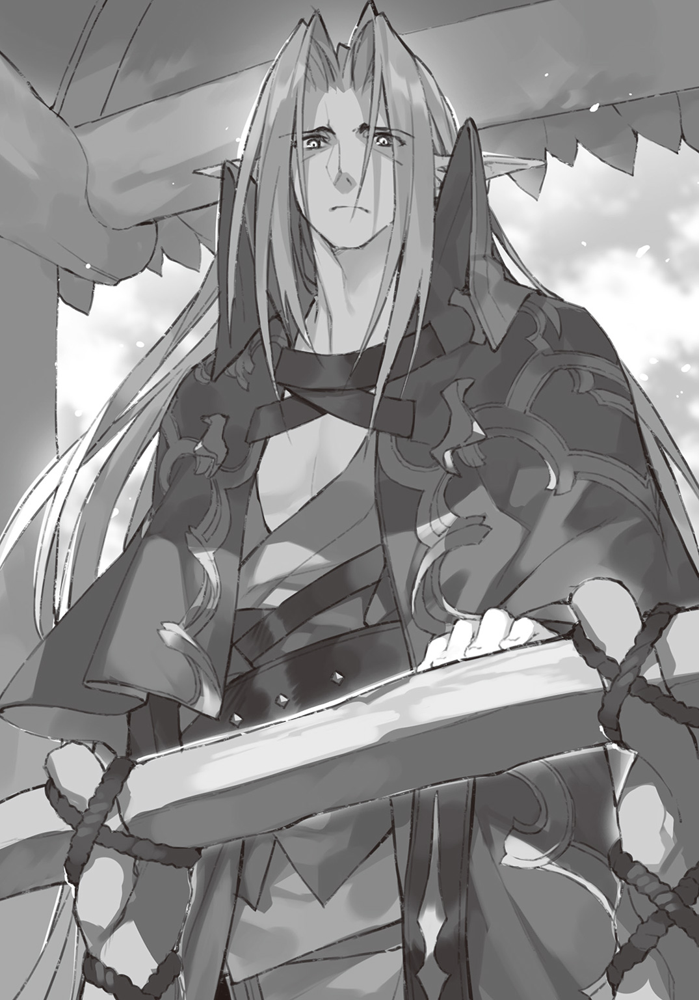
「......」
「なあ、もしよかったら、あんただけでも、どうだ？ 俺と一緒に、世界の果てを見に行かないか？ この世界には面白いものも、不思議なものも、なんでもある。広く、わけのわからない世界――一箇所にとどまってるのは、あんまりにももったいないだろ？」
「............」
声をかけられた側は、無言、無表情のままだ。
ただ――村側は、なんらかの危機感を抱いたらしい。
先ほどから、村の総意を代弁している男性が、慌てたように叫ぶ。
「耳を貸すなサロモン！」
その一言が皮肉にも、きっかけになってしまったようだった。
サロモンと呼ばれた人物は、見張りやぐらから、村の外へ飛び降りる。
音もなく、草地に降り立つ、サロモン。
ふわり、と長い金髪をなびかせながら、彼は、ぼそりと口を開く。
「......面白いものならば......」
「あん？」
「......面白いものならば、目の前に、ある」
弓を構える。
女性のような見た目の、しかし男性だったらしい人物の矢は、ぴたりとアレクサンダーに狙いを定めた。
アレクサンダーは楽しげに笑って、大剣を構える。
「高所の優位を捨て、遠距離の優位を捨て、壁の優位を捨て、俺とおんなじ地平に立ってもらったところで申し訳ないんだが――俺にはあんたと戦う理由がないんだけど？」
「......我に勝てたら食糧をやろう」
「よっしゃ、やろう」
サロモンの発言に泡を食ったのは、村の方だった。
やぐらの上から「サロモン!? おい！」という悲痛な叫びが聞こえる。
発言者――村の総意を代表している男性が苦労人だということが一目でわかった。
カグヤはイーリィに視線を向ける。
イーリィもまた、頭を抱えて「ああまた兄さんの悪い癖が......」と嘆いていた。
苦労人たちの嘆きの中、アレクサンダーとサロモンが向かい合う。
そして。
「......さあ、面白いことを、やろう。――闘争だ、強敵よ！」
サロモンが、攻撃を開始した。
○
戦いが始まってみれば、アレクサンダーは防戦一方だった。
射られた矢を、避け、剣で受ける。
サロモンの矢は、一呼吸で三度放たれた。しかも、わずかにズラされた軌道。わずかにズラされたタイミング。それらがまったく同時に放つよりも、回避を困難にしている。
殺すための矢だ。
回避し、防御し、軌道を予測し、それでもなおかわさせないための矢さばき。
そのすべてに中たっていないのだから、むしろアレクサンダーの異常性が際立つ。
「なるほど、飛び道具は距離が遠けりゃ優位ってわけでもねーんだな」
その、異常を為しながら、アレクサンダーはあくびまじりに言った。
......誰の目にもあきらかだ。退屈している。
「距離が縮まったことで、威力も精度も上がった。でもなあ......」
片手で目をこすりながら、片手に持った大剣で矢を弾き落とす。
もう、見てさえいない。視認すら不要だと、態度が雄弁に述べていた。
「悪いけど、このままじゃ俺の勝ちだ」
矢を弾く。
一呼吸で三矢を放つサロモンは、しかし、攻撃をやめた。
単純な話だ。背負った筒には、もう一矢たりとも残っていない。
そうだ。防戦一方でよかった。
なぜなら――矢は、いつか尽きるから。
守り続けて一矢たりともくらわないのであれば、守ることが最大の攻略法なのだ。
「......おいおい、どうした。もう終わりってわけじゃねーだろ？」
矢が尽きたサロモンに対し、煽っているとしか思えないセリフだった。
実際、サロモンは不機嫌そうな顔で沈黙している。
......いや、不機嫌そうなのは、ずっとそうだった。
サロモンは戦いが始まってから、一度たりとも、表情を変えていない。
笑ったのは――勝負を始めようという、その一瞬だけだった。
無表情で寡黙な、美しすぎる男が、口を開く。
「......こういうのを、待ち望んでいた」
「はあ？」
「これぞ闘争だ。獣相手ではない。モンスター相手でもない。あんな雑魚どもをいくら射ったところで、それは闘争とは呼べない。闘争とは、互いの命が危険にさらされ、奥義を尽くし、そして――いつまでもいつまでも、終わらないものだ」
弓を捨てる。
矢筒を外す。
傍目には武装解除としか思えないその行為。
けれど向かい合っていたアレクサンダーは、大剣を両手で構えなおした。
「このまま終わり――じゃねーんだな」
「終わらぬとも。もっと、闘争を、したい。矢を撃ち尽くし、弦は切れ、弓が折れてもなお闘いたい。死んでくれるな殺してくれ。闘いを。もっと心躍る闘いを......！ 一瞬で終わりそうな闘いを。いつまでも続く闘いを――」
サロモンが、なにも手にしていない左腕を伸ばす。
そして――弓に矢をつがえるような、動作をした。
「――来れ」
瞬間、空気がきしむ音がした。
カグヤが、イーリィが、アレクサンダーが、ぴくりと反応する。
「来れ、我が願いを叶えるモノよ。具現化せよ、我が真なる弓――」
弓が、現れた。
それは緑色に輝く、かたちの定まらない巨大な弓だ。
横に構えられたその弓の大きさは、サロモンが両手を広げたって、五倍以上はあるだろう。
はっきりした長さは、算出しようがない。
実体ではないのだ。
緑色のゆらめく炎のようであり、流れる風のようであり、魔力の塊のようでもあった。
矢が、現れた。
サロモンの持った巨大な非実体の弓に、特別巨大な、ゆらめく緑色の一矢が。
そして――彼の背後に、無数の、これもまた非実体と思われる、たくさんの小さな矢が。
「――『果てなき闘争』。さあ、願いの赴くまま、命尽きるまで殺し合おう！」
矢が、放たれる。
巨大な一矢が。小さな、無数の矢が――すべてアレクサンダーをめがけて、降り注いだ。
たった一人にして、軍団と呼べるほどの物量。
それを向けられ、アレクサンダーは笑う。
「痛々しくて、格好いいねえ。っていうかスキル欄にあるのは『魔力無限』なのに奥の手は魔法じゃねーのかよ。なるほど、お前みたいなヤツもいる。――ありがとう。俺の世界はまた広がった」
アレクサンダーはこの時初めて前進を開始した。
緑色の矢の雨が降り注ぐ。
アレクサンダーは大剣を盾にして距離を詰めるけれど、そのすべてを受けきれるほどに矢の弾幕は薄くない。腕を削り足を削り胴を削り頰を削る。
流れ出る血液さえ、次の矢ではじけ飛ぶ。
被弾に重なる被弾。傷に重なる傷。密度の高すぎる攻撃はヤスリと変わらない。比喩でなく雨のように降り注ぐ矢が、アレクサンダーの体を削り取っていく。
アレクサンダーは笑いながら進む。
歩みは決して速くなかった。非実体の矢は、物質的な重さを持っているらしい。しかも、かなりの。くらうたび歩みは遅くなり、構えた大剣で受けながらの移動は、巨大な岩でも押しているのかというほどに鈍重なものだった。
それでも、距離は詰まる。
サロモンまであと十歩というところでアレクサンダーが急加速した。
一瞬で潰される間合い。
鈍重だった獲物が唐突に牙を剝く。
非実体とはいえ、弓で闘っているサロモンは、肝を冷やすに違いない挙動だった。
――もっともそれはサロモンがアレクサンダーをただの獲物と見ていた場合の話だけれど。
「待ちわびたぞ、強敵！」
アレクサンダーの間合いに捉えられて、むしろ、サロモンは歓迎するように叫んだ。
目を見開き、口元に喜悦を浮かべている。
矢の勢いは、まったく衰えなかった。
アレクサンダーは被弾覚悟で攻撃に転じているものの、成果はかんばしくない。
サロモンの操る矢は、その密度と重さでアレクサンダーの剣を逸らし、流し、手痛い反撃を加えるのだ。
「弓使いがクロスレンジでも強いとかすげーな」
アレクサンダーの口ぶりにはまだ余裕がうかがえた。
しかし、体は確実に傷ついているし、攻撃のたびにその傷は増えている。
「強敵よ、終わらせてくれるな。この闘いを、いつまでも、いつまでも......！」
「この中二病バトルマニアエルフが......！ いいか、俺はなあ、腹が減ってるんだよ！ お前を倒して飯を食いたいんだよ！」
大剣を振るう。
しかし、サロモンは大量の矢により大剣を叩き、軌道を変えてしまう。
そして大きく飛び退く。
潰れた間合いは、また開いた。
......矢の雨が、やむ。サロモンがひときわ巨大な矢を構える。
「次を、試そう。まだだ。まだ足りない。どうか、我の持てるものをすべて引き出してくれ、強敵よ」
「変なのに声かけちまったなあ......」
アレクサンダーの声には、ようやく後悔の響きがあった。
しかし、戦意が萎えた様子がない。一方的にやられて、ボロボロなのに――
「しょうがないから、俺もとっておきを見せてやる。ちょっと卑怯くせーけどな」
アレクサンダーが、大剣を大きく後ろに引いた。
防御の意思をまったく感じさせない構え。
「おい中二病エルフ、たぶん次で決まるから、覚悟しとけ」
「......」
「こっちはお前と違ってそんなに器用じゃねーからな。持ってるものなんか、一つっきりだ。だいたいスローライフ系ゲームの主人公にバトルスキルを求めるんじゃねーよ」
「............？」
「ああ、いや。こっちの話だ。......とにかく、予告してやる。次で終わりだ」
「......ならば次をしのいで、闘争を続けよう」
「しのげねーよ」
グッ、とアレクサンダーが足に力をこめた。
そして。
「全力でぶった斬るから、俺が間合いに入る前に止めないと、死ぬぞ」
駆け出す。
視界から消えるほどの速度。
アレクサンダーが動いたことは、爆ぜた地面と土煙でわかる。これほどの速さ、たとえ正面から注視していたとして移動する姿を捉えるのは難しい。
ただし、見えないことと、攻撃を中てられないことは、まったく別の話だ。
たとえ視界に映らない速度で向かってこようとも、『向かってくる』という事実だけは動かしようがない。
真っ直ぐ前に射ることができれば、中たる。
サロモンはその確信のもと、すべての矢を一斉に、正面方向へ放った。
――手応え。
もっとも長大な矢が、たしかになにかを貫いたという感触がある。
実際、間合いに入ったアレクサンダーの胸には、巨大な矢が突き刺さっていた。
心臓。
人ならば死に至る場所。
これだけの速度ならば惰性で動きもするだろうが、『剣を振る』動作に入る前に確実に事切れるのは、相手が生命体であるならば考えるまでもなく明らかだった。
だからサロモンはそれ以上の矢を放つ必要性を感じず。
「『とっておき』を見せるって、言ったよな？」
殺したはずの男の声を聞いた。
サロモンは目を見開く。
ありえないことが起きていた。
心臓を貫かれた男が止まるどころか加速をしている。惰性ではない。体が確固たる意思のもと剣を振る動作に入ったのが、永遠にも感じる一瞬の中、たしかに見えた。
軌道がわかる。
左の腰から右肩方向へ抜けていく一撃だ。あの重さとあの速さで振られた剣が当たれば体は両断されるだろう。
殺したはずの男の生存。
目前に迫る『死』。
それを受けて、サロモンは。
――自分の至らなさのせいで、こんなにも楽しい闘争が終わってしまった。
静かに負けを受け入れ。
目を閉じる余裕さえなく、迫り来る『死』を待ち――
ズガン！
背後で、そんな音が立てられるのを、聞いた。
「......？」
サロモンは不思議に思い、背後を振り返る。
すると、そこでは――村を守る木製の壁に、アレクサンダーの大剣が突き刺さっているではないか。
いや、大剣というか、アレは――刃の部分、だけ？
かなりの衝撃で突き刺さったらしいその刃は、半ば以上を壁にめりこませていた。
のみならず――
ぐらり。
そんな風に、村を守る壁が揺れたかと思うと、すさまじい音を立てて、剣が刺さった部分を皮切りに、倒れ、壊れ、崩れていく。
「......やばっ」
アレクサンダーの、今日一番焦ったような声。
サロモンが再び視線を転じれば、そこには、柄とわずかな刃しか残っていない剣を持ったアレクサンダーがいて。
「......そういや、本気で振ると、剣が折れるんだった」
苦笑交じりの声。
サロモンは彼を見た。
アレクサンダーは申し訳なさそうに言う。
「ええと、武器はなくなっちまったけど、どうする？ それとも俺の勝ちでいい？」
愛想笑いのような表情。
サロモンは、静かに笑う。
「心臓を貫かれ、生きるか。......今の我ではお前を殺せぬ。強敵よ、今日はゆずろう」
いつになく満たされた気持ちで、つぶやくように、言った。
○
「ゆずるとかゆずらないとかじゃなくてね!? サロモンお前！ なに勝手に食糧をやるとか約束してんだよ!? あと壁ェ！ どうすんだコレ!? モンスター来たらどうすんだよコレェ!!」
どうにも防衛隊のまとめ役らしいエルフは、そんな風にカンカンだった。
サロモンはニヒルに笑うと、口を開く。
「......ふっ。ちょうど良い。この村は我には狭すぎると思っていた」
「ちょうどよくねェんだよォ！ 防衛設備なの！ わかる!? モンスターに攻め入られないためにこの壁必要なの！ ねえ、わかる!?」
「アレクサンダーよ、貴様の誘いに乗ってやろう。我も貴様と旅をする。ここは騒がしくてかなわん。さあ、風の向くまま、新たなる闘争を求め旅立とうではないか。貴様の剣も手に入れなければならんからな。今ひとたびの、心躍る闘争のために......」
「話聞けよォ！ 壁どうすんだつってんだよ！」
「さあ早く我を連れていけ。この男は怒ると面倒臭い」
「こっちはお前のその性格が一番面倒臭いんだよォ！ あとすでに怒り狂ってるから手遅れなんだよ！ 伝われ！ 私の怒り！」
怒りすぎて頭に血管が浮かんでいた。
呼吸も荒く、肩で息をしている。
イーリィが怒るエルフを見て「話を聞かない身内ほど厄介なものはないですよね」と共感の涙をこぼしていたりもした。
カグヤは闘いを終えてボロボロなアレクサンダーのそばにいた。
「......愉快なヤツだな」
彼は笑う。
ボロボロで、血まみれの体なんか、まったく気にしてないみたいだった。
しゃがみこんでいるから、体力はかなり消耗したみたいだけれど。
心臓に突き刺さっていた矢はない。
もともと非実体、サロモンの魔力で編まれた矢のようだったから、消えたこと自体は不思議ではない。
でも、矢が消えたことで、アレクサンダーの胸に穴が空いているのが、はっきりわかってしまうのだ。
だというのに、彼は正常そのもので、そのことが、カグヤには不思議でたまらなかった。
「ん？ なんだチビ狐？ 俺の傷が心配か？ 気が向いたらイーリィが治してくれるだろうから心配すんな。でも、剣を壊したから当分治してもらえない気もするけど......また物を大事にしろとか言われるんだろうなあ......口うるさい系幼なじみはこれだから......」
「......なぜアレクサンダーは生きておるのじゃ？」
「なんだよその、死んだ方がよかったみたいな......」
「............そんなことは言っておらん」
「......まあ、隠す理由もないから教えるけど、俺はな、なにがあっても死なないんだ」
「意味がわからんの」
「心臓を貫かれようが、頭を吹き飛ばされようが、体中の血液がなくなろうが、死なないことになってるんだよ。傷の自動回復とかはしないから、足がなきゃ歩けないし、頭がなきゃ思考ができないけどな......あれ？ でも心臓貫かれても血流が滞って筋肉動かないとかはなかったな？ 内側の機能より見た目上の機能の方が優先されるってことか......？」
「......？」
「あー......んーと......ＨＰという概念のもと生きてないっていうか、システムがＲＰＧじゃなく......その、なんだ、『食いしばり』っていうか......神様がそう決めた、って感じかな」
「............神」
「そう。神。いやあ、便利だね、神。説明しにくいことも神様って言っとけばだいたい説明できるような気分になるし」
「......わらわに予言を与えるのも、神か？」
「そうかもな。まあ、モノローグとかシステムメッセージって感じだけど......そう、神。神、神。みんな神。神様ってすごい！」
「............」
「いや、不満そうな顔すんなよ。俺だってうまく説明できねーんだよ。カグヤ、お前だってそういうのあるだろ？ ネズミをまったく知らない相手に、どうやってネズミを説明する？」
「............尻尾があって、耳が、あって、目があって......」
「いやそれ説明になってねーから。俺の方もまあ、そんな感じなんだよ。システムメッセージとかデバッグとかいう話ししたって意味不明だろ？ だから、そういうのはひとくくりに『神』でいいんじゃないかと、俺は思ってる」
「神は、意味不明かえ？」
「そうだな。意味不明。それが一番、しっくりくる。......で、俺はその神に選ばれた勇者ってわけ。まあ、デバッグしたところでこの世界はもう俺にとってゲームじゃないから、製品版を遊べたりはしないわけだが......」
「............アレクサンダーの発言は、適度に無視するのがよいと、イーリィは言っておったのう。まるで別世界の者と話しておるようじゃ」
「だから異世界から来たって言ってんだろ。でも、まあ......そうだな。慣れた言語を使うと違いが出るけど、もう俺もお前らと同じ地平の生き物になってる。たとえば――」
アレクサンダーが、手を伸ばす。
そして、カグヤの頭を撫でた。
「――こんな風に、お前にリアルに触ることもできる」
「..............................」
「......あの、硬直しないでもらっていいか？ なんか俺が変なことしたみたいになるから」
「............頭を触られるのは、初めてじゃな。このままねじ切るのかえ？」
「頭を撫でるなんて当たり前のことが――ああ、そうだったな。っていうか『ねじ切る』ってどんな発想だよ。これは、親愛の情を示す行為だ。『かわいい』とか『よくやった』とか『ありがとう』とかそんな感じ」
「......わらわはなにかしたのかえ？」
「今は『かわいい』だな」
「............」
「どうした、また硬直して」
「......言われたことなどないから、どうしたらいいのかわからぬ......な、なにか、こう、涙が出そうな......」
「......お前は、ちょっと前までのイーリィを思い出すな」
「......？」
「あいつもお前とだいたい似た境遇だったよ。予言じゃなくて癒やしの力だから、お前よりはよっぽど外に出てただろうけど」
「......」
「人の悪意はモンスターなんぞより、邪悪だ。......ま、希望を捨てるには、まだ俺の世界は狭いけどな。だから――」
アレクサンダーが、立ち上がる。
それから、サロモンに対してブチ切れているエルフの男性に、話しかけた。
「よお、そこのあんた。名前は？」
「............ジルベール............」
疲れ果てていた。
声もかすれているし、目もうつろだ。
よほどサロモンに怒り続け、そのすべてを無視され続けたのだろう。
カグヤの目から見ても、ジルベールの憔悴した様子は、『かわいそう』の一言に尽きた。
かわいそうなジルベールに、アレクサンダーは笑いかける。
「ジルベールか。村の壁壊してごめんね」
「謝罪が軽いわ！ おまっ、お前、壁、壁って、壁......壁だぞ!?」
一瞬元気を取り戻したものの、やっぱりジルベールは疲れ果てていた。
言いたいことを整理する余裕もないようだ。
この短期間でアレクサンダーと、いかにも話が通じなさそうなサロモンの相手を立て続けにするのは、不幸以外のなにものでもないだろう。
「それでさあ、あんたら、たぶん狩猟民族だろ？」
「いかにも。我らは弓を使い、森と共存し、恵みを分けていただく民である。古くは――」
「じゃあ別に定住する必要ないよな？」
「話を聞け！ というか狩猟民族だってある程度の期間定住する必要ぐらいは――」
「だってあんたの話長そうなんだもん。なあ、壁を壊したお詫びになるかわかんないけど、俺はこのあたり一帯のモンスターを全部倒してから、西へ向かう」
「西？ そこに、なにがあるのだ？」
「世界の果てがある！ ......かもしれない」
「......なんだそれは」
「よくわかんないけどさ。この世界が丸いのか、平たいのか、あるいは世界でさえないのか、それを俺は確かめたい」
「なんのために？」
「ワクワクするから」
「............」
「俺は、このまま、あたりのモンスターを倒しつつ西に進む。だから、あんたらもあとからついてこいよ。みんなで村を出てさ」
「......なぜそんなことをしなければならない」
「いい機会だろ？ 西へ行こうぜ。世界の広さを知ろうぜ。......サロモンだけじゃない。あんたも、あっちのヤツも、そこらにいる人、みんな、一生を壁で囲われたまま終わるなんてもったいないじゃないか。あんたらには可能性がある。それを活かさず死ぬのは駄目だ」
「............」
「安定は約束できない。ゴールに待ち受けてるのはガッカリするような現実かもしれない。たとえ世界の果てを見たからって、なんの得にもならないかもしれない。でも――果てを目指した旅路はきっと、人に誇れる冒険になる」
「......」
「冒険をしよう。陸の果てまで。世界の果てまで。人生の果てまでの、大冒険をしよう。俺はもっと、俺の世界を広げたい。その広がった世界の中に、あんたらがいてくれるなら――それは俺にとって、すごく嬉しいことだ」
「............ようするに、自分のためか」
「そうだよ」
「..................まったく、サロモンも、お前も、めちゃくちゃな連中だよ、本当に」
ジルベールが笑う。
それは力の抜けたような、穏やかな笑顔だった。
「最近は、このあたりも恵みが減ってな。......世界がモンスターに滅ぼされる前に、我らはきっと食糧難で滅びるだろうと、思っていた」
「......」
「サロモンは連れていってくれ。こんなのを残されても困る。私は――まあ、前向きに検討するさ。お前たちと違って身軽ではないのでね。おいそれと決断できるような話ではない」
「......そっか」
「けれど」
「......？」
「お前の話は、心に沸き立つものを感じたよ。......ワクワクするから、か。ああ、まあ、たしかに、壁が壊れてもまったくこたえた様子のないサロモンを、うらやましく思った」
「......」
「『壁が壊れた！ また作らないとモンスターが！ モンスターを倒した！ でも油断せず警戒しなければ！ 旅人が見えた！ 追い払わなければ！』......そんな毎日は、正直、窮屈で疲れていたんだ」
「............ま、あんたみたいな人材には、俺としちゃ感謝してもし足りねーけどな」
「そうだな。そこはしっかり感謝してもらわないと困る。だが、まあ、たまには、はっちゃけるのもいいだろう。そういう気持ちを、思い出せたよ。ありがとう」
「こっちこそ。あんたみたいな人もいる。俺の世界はまた広がった。ありがとう」
「食糧は、わずかだが、持たせよう」
「いいのか？ 食糧難なんだろ？」
「新しい獲物はきっと、西にいるのだろう？」
「......ああ。そうかもな」
「この気持ちを思い出してしまったからには、座して滅びを待つことはできない。アレクサンダーよ。私もお前のように、人に情熱を取り戻してみせる」
「待ってるぜ」
アレクサンダーが手を差し出す。
ジルベールは首をかしげつつ、『これでいいのだろうか』という顔をしながら、アレクサンダーの手を取った。
二人は握り合った手を何度か上下に揺らしてから、放す。
「じゃあなジルベール。西で」
「ああ、西で、また会おう」
言葉を交わして別れる。
アレクサンダーが、こちらに歩いて戻ってきた。
「さて、旅に戻ろうか。飯のあとにな」
晴れやかな顔。
彼を見て、イーリィが「まったく兄さんは」と、とても嬉しそうにため息をついていた。
○
サロモン以降も、仲間は増えていく。
大剣を修理しに寄ったドワーフの村で、ダヴィッドという腕のいい刀剣鍛冶に出会った。
彼女に刀剣を打ってもらうために、彼女の『愛し子』――ゴーレムと戦う羽目にもなったけれど、アレクサンダーは死なない。
死ななければ、どうにでもなる。
剣をパッキンパッキン折るアレクサンダーに職人魂を刺激され、ダヴィッドが旅に同行することになった。
特に栄えた港街では、ちまたを騒がす集団と一悶着あった。
その首領は『真白なる夜』と呼ばれる男性だ。
純白の髪と肌、左右で色の違う瞳を持っていた。
色々あったが最終的には武力で解決し、団とその首領である『真白なる夜』が旅の仲間となった。
森に入ったら、不思議な小さい人々が住まう集落を発見した。
ドライアドと名乗る種族だ。
肌は褐色で、大人でも子供みたいな体格をしている。老人は髪が緑だが、若いと白だ。髪を操る不思議な種族で、彼女たちは男性が生まれないことをひどく嘆いていた。
そこで種族の存続のため、パーティにいた男性たち――アレクサンダー、サロモン、『真白なる夜』を捕らえようとしてきた。
相手が幼い容姿ということもあり油断していたので、一時は捕らえられてしまう。
しかしこれもやっぱり、最終的には武力でどうにかなった。
ウー・フーが当たり前のような顔をして、旅についてくる。
というか、この人たち、だいたい暴力で物事を解決している。
カグヤはいつも、傍観者みたいな立ち位置で、アレクサンダーたちのことを見ていた。
不死身に任せてだいたい力押しをする、アレクサンダー。
アレクサンダーがどんな状態であっても一瞬で五体満足にしてしまうほどの回復力を誇る、しかし回復に小言がセットでついてくる『口うるさい系幼なじみ』イーリィ。
無限の魔力で非実体の弓矢を作り出す、『中二病バトルマニアエルフ』、サロモン。
女性なのに『ダヴィッド兄貴』。
なにを言っても噓っぽくしか聞こえない、白々しい『真白なる夜』ことシロ。
『耳年増幼老女』ウー・フー。
......一番近くで彼らを見ていたカグヤとして、英雄たちを評価すると、こうなる。
この評価は多分にアレクサンダーの意見が反映されていた。
アレクサンダーは人にキャッチフレーズをつけるということを、よくやる。
たとえば、カグヤがもらったキャッチフレーズなどは――
「お前はアレだな。『私カグヤ。今あなたの後ろにいるの』って感じ」
気配なく忍び寄って、無言でじっと人をながめるところから、そういうキャッチフレーズを思いついたらしい。アレクサンダーのいた世界の都市伝説のオマージュのようだった。
......そうだ、いつも後ろにいる。
後ろから――見てるだけ。
アレクサンダーは言うまでもなく不死身だ。戦いがあれば真っ先に剣を抜き、敵へと突撃していく。
傷を治すのはイーリィの役割だ。視界に収まってさえいればどのような傷でも一瞬で治せる力は、旅をするうえで負傷者を出さないという偉業を成し遂げ続けている。
サロモンは、戦いであればなんだってこなせる。遠距離からの狙撃、一人での弾幕形成、それに、接近戦だってまず敗北しない。
普段は無口で、しゃべったかと思えば意味不明な発言ばかりだが、こと戦いにおいて彼より頼れる仲間はいないだろう。
ダヴィッドは武具の修繕や作製が得意だ。また、材料さえ満足にそろうのならばゴーレムだって作製できる。彼女の打った剣を持ったゴーレムの軍団は、はっきり言って無敵だった。
『真白なる夜』は高い索敵能力を持っていた。
おまけに『敵の弱点がわかる』という能力で、強い敵さえアッサリ倒してしまう。
総合力では劣るが、殺し合いで一番強いのは彼だろう。
ウー・フーにかんして言えば、戦いではそこまで強くない。
ただ、彼女の『構造物の内部を読み取る知識』はあらゆる面で役立った。
アレクサンダーが『オートマッピング』と呼んでいたその力により、初見のダンジョンの構造や中にある物の位置などを、最初から知っていたかのように述べることができた。
冒険において地味だが重要な役割を担っていたと言えよう。
カグヤは――なにもなかった。
多少の魔法は使えるが、アレクサンダーたちの前ではかすんでしまう。
予言は、村を出てから二度だけ降りてきたが、その二つとも役立たなかった。
一つは『はるか未来の聖剣の打ち手』のこと。
そしてもう一つは、思い返すのも嫌な、アレクサンダーの助けになるどころか、アレクサンダーに害を成すとしか思えないものであった。
カグヤの力だけが、他の六人の力とは異質だ。自分で自由に発動ができない。望んだ結果を得られない。
アレクサンダーは『イベント用スキル』と言っていた。だから、仕方ない、とも。
......でも、カグヤだって、役に立ちたかった。
サロモンが敵を倒すたび。ダヴィッドが剣を打つたび。『真白なる夜』が強敵を屠るたび。ウー・フーがダンジョンのマップを作成するたび――
自分だって、役に立ちたい。
そういう想いが、止まらなくなっていく。
最初からアレクサンダーと一緒だったイーリィを除けば、自分が一番、彼と長く一緒にいるのだから。あとから来た人たちが活躍するたびに、焦燥は高まっていった。
置いていかれるんじゃないか。見捨てられるんじゃないか。
......故郷の村を思い出す。
穴蔵の闇が、視界にちらつく。
予言が降りてこない時、村人にとって、カグヤは『いないもの』だった。
徹底した、無視。触れてはならないという強い意思を感じる、忌避。
アレクサンダーも、イーリィも、他のみんなもそんなことはしない。
そう思っている。でも――不安だけが、募っていく。
この人たちと一緒にいたい。
彼のそばに、いたい。
......だから役に立ちたい――見捨てられたくない一心でカグヤは、行動をしてしまった。
○
視線を上げれば、昼の光がまぶたにこびりついた。
それでもなお全景をうかがえない――アレクサンダーたちでさえ見たことがないほど、大規模なダンジョンが、目の前にある。
ダンジョン。
その言葉の定義は実に様々だが、もっぱらアレクサンダー一行の中では『ウー・フーが見た瞬間にマップをひらめく場所』をそう呼んでいた。これ以上たしかな基準は、このパーティー内に存在しない。
つまり、移動距離や大きさなどに明確な基準を設けているわけではなかった。
それにしたって、目の前に広がるダンジョンは、大きすぎる。
アレクサンダーは、そのダンジョンをこのように評した。
「都市だな。十万から二十万人規模ってとこか。――時代とか文明をかんがみたら、ちょっと異常なぐらいだ。まあ、人が造ったわけじゃねーだろうけど」
その『都市』は、周囲をぐるりと高い壁で囲まれていた。
この時代、モンスター対策のために人が住処を壁で囲むことは珍しくない。でも、この壁は面積も規模も堅牢さも、見たことがないほどだった。
ウー・フーの描いた地図によれば、東西南北にそれぞれ一つずつ入り口があるようだ。
今、アレクサンダーたちがいるのは南側にあたる。
ならば目の前にある南門と同じものが、他にあと三つ、あるということなのだろう。
カグヤは門を見上げる。
あまりに巨大だ。少なくとも、人が通るのにここまで大きい必要はない。
横幅は十人が横一列に並んで通ったってまだまだ余裕がありそうだったし、高さに至ってはどのような巨人の通行を想定しているのかもわからない。カグヤの十倍か、いや、二十倍か、もっとか。
......これはダンジョンだ。
そしてモンスターとは、ダンジョンからわいてくるものと、すでに経験から知っている。
ならば、この門が必要なほど巨大なモンスターが、内部にはうごめいているということになるのだろうか？
その説を裏付けるかのように、ダンジョンには天井がなかった。
珍しい、というか、もはや『ダンジョン』と呼んでいいかさえわからない。
ただ――天井さえなければ、雲を衝くような巨人でも、空を舞う巨大生物でも、なんだっていたい放題だろうなということは、わかる。
内部は、どうなっているのだろうか。
閉ざされた巨大な門と、高い壁にはばまれて、うかがえない。
ただ、離れて見れば、チラホラと壁より高そうな建物もあるように見えた。
どれもこれもが、石を積んで造ったような、見事な技術による建造物だ。
壁は黒みを帯びた灰色だが、内部の建物には赤や茶色、白や黄色などの様々な色が見えた。
「モンスターの住まう巨大都市、か」
アレクサンダーはなにかを考えているようだった。
顎に手を当てて、ニヤニヤしている。
こういう時、彼はろくでもないことを考えているのだと、パーティーにいる全員が経験から嫌というほど知っている。
案の定アレクサンダーが次に発したのは、とんでもない提言だった。
「ここのダンジョンマスターを倒して、ここを俺たちの街にする」
ダンジョンマスター。
どのダンジョンにも最低一体はいる、モンスターを創造する厄介者だ。
つまり、ダンジョンマスターさえ倒せば、モンスターがわかなくなる。
ダンジョンマスターは各ダンジョンに一体ずついて、自分の似姿のモンスターを生み出し続ける。生み出すペースこそまちまちだったが――ダンジョンマスターを倒すにつれ、『掃除後にもまたモンスターがわいている』という現象は減っていった。
詳しい仕組みは不明だ。
でも、ダンジョンマスターを倒し、モンスターを掃討し、トラップの解除も行えば、そのダンジョンで人が暮らすことは不可能ではないのだ。
ただ、疑問があった。
「街など得てどうする？ 定住などしないだろう？ 貴様は『世界の果て』を目指すのではないのか？ 我は貴様に、そのように言われたが」
サロモンが、その疑問を口にする。
アレクサンダーは高すぎるダンジョンの壁を嬉しそうにながめながら、答えた。
「俺は、な」
「......？」
「俺の目的に変更はない。世界の果てを見たい！ この世をもっと知りたい！ ......でも、ここらで一つ、選択肢を与えるべきかなと思ったんだ」
「............」
「だいぶ、西に来た。たくさんの人に出会った。俺の世界は広がった。......俺は、お前らを焚きつけて旅に連れ出した。みんな、俺の言ったことをわかってくれた。気付けば、目の前にいるお前ら以外にも、たくさんの仲間ができた」
「......ふん」
「俺は――少し、怖くなった」
「......」
「俺はいい。俺は、俺の目的に殉ずることができる。ただの好奇心を振りかざして、失敗して死んだって惜しくない。でも――みんなは、どうなんだ？ 食糧難とか、色んな事情はあったにせよ、足を止める場所がほしいって、思わないのか？」
「............ジルベールあたりが考えそうなことだ」
「まあ、だからさ。ここらでみんなにも、一度足を止めて考えてほしいと思ったんだ。夢のために人生を懸けられるのかどうかを。しかも、自分の夢じゃなくて、俺の夢のために」
「......」
「この街は、『足を止める場所』としてちょうどいいかなって思ったんだよ。広いし、丈夫そうな壁だってある。北には鉱石のとれる山があるし、東には草原が広がっている。川も流れこんでるみたいだし、少し離れた場所だけれど、森もある」
「......」
「モンスターを倒せば野生動物だって増え始めるだろう。果樹園や田畑を作るのも、できなくはないはずだ。なによりこのダンジョンには、どうやらすでに『家』がある」
「............家か」
「ああ。家だ。......俺とイーリィには、もう故郷がない。カグヤだってそうだろう。サロモンはあんまり安住することに興味なさそうだし、シロはもともと宿無しだ。ダヴィッドあたりは剣さえ打てたらどこでもいいだろう。ウーばあさんは......なんなの？」
アレクサンダーが首をかしげる。
ウーは「わし、強い男の子種がほしい！」とストレートすぎる返事を元気いっぱいにした。
アレクサンダーは苦笑する。
「......まあ、俺とこうして常に一緒にいるお前らは、足を止める必要なんかないのかもしれない。でも、家が必要なヤツだっているだろう。......お前らと一緒にいると、弱いヤツがいるってことを忘れそうになる。だからまあ、忘れないうちに、足を止める場所を作ろうと、そういうことだな」
「......ずいぶんと考えるようになったものだな、強敵よ」
「考えるさ。そんなつもりはなかったけど、中心人物みてーになってるからな」
「つまらん男になったな、アレクサンダー」
「サロモンが面白すぎるだけだ」
「......ふっ。まあ、よかろう。ただ、忌憚のない意見を言わせてもらえば......」
「なんだよ」
「ぶらさがった弱者の重さに、つぶされてくれるなよ」
「............」
「強敵よ。強敵でいてくれ。つまらぬものに成り下がらないでくれ。貴様は自由だからこそ強く美しい。弱くなった貴様を我は許さんぞ」
「............俺は、弱くならねーよ」
「その言葉を忘れるな。......ともあれ、貴様の重しを一度下ろそうというのならば、このダンジョンを我らが街とすることに異存はない。よりよき貴様との闘争のため、我も手を貸そう」
「俺を殺す技は開発できそうかい？」
「......貴様が人間でなければな。何百年かけようと編み出してみせるのだが」
「悪いが、俺はそこまで生きてられねーよ。だから、お前も俺のこととやかく言う前に、俺が生きてるうちにがんばれよ」
「......まあ、これもよき闘争だ。時間との闘争。......心躍る」
「なんでもいいのかお前は......」
アレクサンダーがげんなりした顔になる。
途中経過はどうあれ、サロモンの質問により、全員の疑問は解消された。
『アレクサンダー自身に旅をやめる気はない』。
この宣言に対しては――カグヤの見る限り、それぞれ、違った表情を浮かべていた。
楽しそうだったのが、サロモンとダヴィッドだ。
闘争が目的のサロモンは、アレクサンダーが旅を続け強くなっていくのは望ましい。
ダヴィッドは『アレクサンダーでも折れない剣を打つ』という目標こそあきらめざるを得なかったものの、まだ見ぬ鉱石やダンジョンに眠る不思議な技術というものに興味津々だから、旅が続くのはいいことだと思っているのだろう。
どうでもよさそうだったのが、ウー・フーと『真白なる夜』だ。
ウー・フーは子孫を残せればどうでもいい。
今狙っているのはアレクサンダーかサロモンか『真白なる夜』らしいので、この三人が別行動をとらない限りは元気いっぱいに笑っていることだろう。
『真白なる夜』は、彼自身の目標をすでに達成していた。
今、アレクサンダーに同行しているのは、世話になった恩を返しているに過ぎない。
その『恩返し』は『忠誠』と呼べるぐらいには行きすぎている感もあるが......
アレクサンダーがどう行動するにせよ付き従うだけだと考えているのだろう。
心配そうな顔をしたのはイーリィだけだった。
......そもそも、アレクサンダーを心配しない他の四人が薄情なわけではない。
不死身だから。心臓を貫かれても死なない男の、いったいなにを心配しろというのか。
......それでもなお、この時点で、イーリィだけは、アレクサンダーの内心をなんとなく察していたのだろう。
付き合いの長さというだけでは片付けられない、心のつながり。
カグヤは一歩引いた視点から、そんなものを感じてしまった。
「じゃ、行くか」
アレクサンダーが号令する。
それに従い、全員が同じ方向に歩き出した。
でも――見ている方向は、それぞれ違って。
......もっと早く『違い』に気付ければ、彼のその後はもう少し幸福だったのかもしれない。
○
ダンジョンは様々な石造りの建造物の並ぶ、ひらけた空間だった。
建物は全体的に、四角く仕上がっている。
街の外からでも見える巨大な建造物があったから、カグヤは『すべての家々は巨人の住まうようなサイズなのではないか』という想像もしていたけれど、そんなことはなかった。
常人のサイズの入り口。
目的不明な――ダンジョンなのに、まるで人が過去に暮らしていたかのような街並み。
モンスターさえいなくなれば、すぐにでも人が住めそうな、整理された区画。
......そもそも、これまで挑んだダンジョンも含めて、いったい誰が、なんのために造ったものなのだろう？
もちろん、洞窟や巨大植物なんかは、自然にできた可能性もあるだろう。
しかし『塔』などの建造物系ダンジョンには、絶対に『設計者』がいるはずだ。
その疑問をふと口にしたカグヤに、アレクサンダーは以下のように答えた。
「いや、そこまでは設定されてないんじゃないかな。『古代文明の名残』としか」
発言自体は『なにも知らない』と同義だった。
しかし、このアレクサンダーの発言は、妙に気になるというか、引っかかりを覚える言葉だったと、カグヤは感じていたらしい。
広いダンジョンを歩いていく。
東西南北には門に向けて伸びる通りがあり、街の中央にはどうやらひときわ大きい建造物があるようだった。
裏通りもクモの巣のように張り巡らされている。
しかし、大通りを歩いてさえいれば迷うこともなく、また、サイズこそ大きいもののそこまで強いモンスターもいなかった。
もっとも、モンスターの強さにかんしては、アレクサンダーたちが強すぎるゆえにそう感じただけだろうと、この時のカグヤはもう判断できたようだ。
歩き続けて、ダンジョンマスターの居場所が見えてくる。
ちょうど大通りの交差する場所――ダンジョンの中央に、それはあった。
『城』。
マップにダンジョンマスターの存在が記されている場所を、アレクサンダーはそう呼んだ。
周囲には水がはりめぐらされていた。
どうやら防衛設備らしい。数々のモンスターの姿が見えるその水たまり――濠を泳いで渡るのは困難だろう。
また、渡ったところで、『城』の入り口までクライミングをするのは、つるりとした磨かれた石に阻まれ、なかなか難しそうに見える。
ではどのように通行すればいいのかと考えた場合、『城』の東西南北、大通りとつながるように設置された『跳ね橋』なるものが役立ちそうだという話だった。
このダンジョンに出るモンスターに見合ったサイズの巨大な跳ね橋は、下ろすことさえできれば、『城』への侵入の難易度が格段に下がるだろう。
ならばその『跳ね橋を下ろす』ということ自体の難易度はといえば、そう難しくもない。
跳ね橋の横にレバーのようなものがあった。
通常であれば、一人が濠を泳ぐか、なんらかの手段で飛び越えたあと、レバーを操作するという危険な過程が必要だろう。
しかし、こちらにはサロモンがいた。
レバーに向けて、適切な力の矢を適切な位置に放ち命中させ、対岸から跳ね橋を下ろすという離れ業が、彼には可能だった。
ガコン！ という音を立てて、動き出す跳ね橋。
そのギミックに、カグヤは強い興趣を覚えたらしい。
重々しく巨大な仕掛けがレバー一つで動き出すということの不思議さに、彼女は妙に気分を高揚させていたようだった。
跳ね橋が下りて全員が『城』へと歩みを進めた。
――この時、カグヤはやっぱり、安全な場所にいた。
先陣を切るのは不死身のアレクサンダー。
すぐ横に付き従うように歩む『真白なる夜』。
続いて、今でこそゴーレムはないが、戦士としてもそれなりの強さを持つダヴィッドが。
それら三人に守られるように、イーリィとカグヤ、ウー・フーはいた。
しんがりは、サロモンだ。
七人いるアレクサンダーのパーティーではあったが、主に戦闘をするのは、四名だった。
アレクサンダー、『真白なる夜』、ダヴィッド、サロモン。
イーリィは『攻撃』に向いていない。
もっとも、人の傷をほぼ無制限に治せるので、活躍は大いにした。
ウー・フーもまた戦いにおいてはさほどでもない。
しかし、マップを見ながら全員の進むべき方向を指示するという、ある意味で一番大事な役割を担っていた。
だからカグヤが、パーティーの真ん中でただみんなについていっているのは、いつものことだった。
ただし――この時のカグヤには、いつも通りにできない理由が『二つ』あった。
だから、アレクサンダーの横に並ぶ。
その違和感のある行動に、当然ながら、アレクサンダーが疑問を投げかけた。
「お、どうしたチビ狐？」
「......」
「前に出ると危ねーぞ。イーリィの横にいとけ」
「............」
「おいってば」
カグヤは答えなかった。
そのうち、『真白なる夜』が「まあいいじゃないですか。いざとなったら僕が守りますよ。力が及べばね。あっはっは」と、穏やかに微笑んで進言する。
「......どうしてシロの発言はいちいち不安を煽るんだか......ま、いいけどさ。このダンジョンのモンスターぐらいなら、どうにかなるだろ。イーリィもいるし......」
最終的に、アレクサンダーはそういうことで納得した。
旅において誰も死んでいないのは、イーリィの力によるところが大きい――というか、大きすぎる。
彼女の力に対する信頼は、パーティー内において『イーリィと別行動さえとらなければ、即死しない限り半身が吹き飛んでも死なない』とまで言われるほどだった。
また、それぞれが高い基礎能力の他に一芸を持った集団だ。
カグヤ一人程度守り切ることなど、まったく問題ないという判断は、当たり前すぎた。
「んじゃ行くか」
ダンジョンマスターのいる『城』へ、七人は歩んでいく。
この時だけは、ほぼ全員が真っ直ぐに『城』の奥を見ていた。
ただし一人だけ、違う方向を見ている者がいた。
カグヤが見ているのは、アレクサンダーだった。
予言が、あったのだ。
――この城がアレクサンダーの死に場所になる。
旅を始めて、三つ目の予言。
そしてアレクサンダーの死にまつわる、二つ目の予言。
だから、カグヤは、役に立てると思った。
......全員にその予言を告げて、このダンジョン自体の攻略をやめさせるわけではなく。
自分だけがアレクサンダーを守れると――役に立てると、そう考えてしまった。
だって、今のカグヤは、もう穴蔵に閉じこめられて、予言以外の言葉を発することを禁じられ、それを普通だと思っていたころのカグヤではないから。
草を知った。
花を知った。
川を知った。
空を、知った。
そして、仲間といるということを、知ってしまった。
役に立たなければ穴蔵に放りこまれ、言葉を交わすことさえ許されなくなる――そのことが、とても怖いということを、知ってしまっていたから。
......ただ、捨てられたくなかっただけ。
イーリィよりもアレクサンダーの役に立ちたかった、ただそれだけだった。
○
『城』の内部を歩んでいく。
モンスターと出会うことはなく、トラップなども、存在しなかった。
ダンジョンマスターの部屋には、このように、モンスターはダンジョンマスターだけで、トラップがないという場合が非常に多い。
今回はその『部屋』がかなり広く、また構造も複雑だったために、一応の警戒はしていた。
だがしばらく探索してその必要はなさそうだと、一人を除いて全員が判断した。
カグヤだけは唯一、警戒を緩めていないようだった。
なにせ、彼女だけが『予言』を知っている。
『この城がアレクサンダーの死に場所になる』。
そして、もう一つ、彼の死をにおわせる予言もあった。だから警戒しても警戒し足りない。
たしかにアレクサンダーは不死身だけれど、モンスターだって謎の多い生物だ。
アレクサンダーは数々のモンスターを一瞥した瞬間に『コイツはこういう名前でこういうやつ』という定義をするけれど、それはあくまでも彼がそう呼び、そう定義しているだけという話だった。
スライムは『スライム』という名前の、『スライム』という呼称に合った生態の生き物ではないかもしれない。
コボルトだって、『コボルト』という名前で、アレクサンダーの述べる『コボルト的な』生き物ではないかもしれない。
だって、それらの名前はアレクサンダーが見た瞬間勝手にそう名付けるだけなのだ。
もっと別の、本当の名前が『アレクサンダー』というモンスターがいたところで不思議ではない。
カグヤはあらゆる可能性を警戒する。
その様子を見てアレクサンダーは――
「怖いなら後ろにいりゃいいのに......」
とあきれていた。
違う。
カグヤにとって怖いのは、カグヤの命が失われることではない。
アレクサンダーの死。それから――役立たずとして穴蔵に放りこまれること。
これだけだった。
......しばらく、カグヤの警戒は徒労のままだ。
アレクサンダー一行は『城』の内部を歩んでいく。
絨毯の敷かれた道。壁にある意味深な絵画の数々。大きな階段。
巨人でも通れるであろう、大きな扉。
それを開けば、見えてくるのは広い空間だ。
太く大きな柱と、床に敷かれた真っ赤な絨毯が目に映る。
天井には金銀財宝がふんだんに使用された、豪華ななにかが吊るされていた――『シャンデリア』と呼ばれる照明装置だ。
壁は一点のくすみさえない純白。
柱にはなにかの模様が刺繡された旗が掲げられている。
そして、赤い絨毯の向こう側――その場所に、ひときわ大きな存在がいた。
巨大な椅子に腰をかける巨人だ。
いや、アレは巨『人』と言ってしまっていいものか......
ヒトガタではある。
ただし、輪郭がゆらゆらと揺れて、定まっていない。
真っ黒い、ヒトガタの影。あるいは人のようなかたちをとった、黒い炎。
そう呼ぶしかないソイツが、椅子の肘掛けに肘らしき部分をつき、ほおづえをついていた。
「『影』とでも呼ぶか」
アレクサンダーはさっそくそのようにネーミングをする。
どうやら彼も知らないモンスターのようで、今回の呼称付けはてきとうというか、見たままだった。
それが気に入らないのか、サロモンが前へ歩み出て、意見した。
「貴様のつける名前はわかりにくい。我ならばあれを『たゆたう暗き影』と呼ぶがな」
「おお、だいぶいいじゃねーか。さすが中二病エルフ。んじゃそれでいこう」
「まあ長いので『影』と呼ぶがな」
「おい」
「ともあれ――あれがダンジョンマスターのようだな。......ふん、我らの侵入にもなんら反応をせんな。寝ているのではないか？ これでは闘争にならん」
「起こしてやれば？」
「そうするか」
サロモンが魔力で編んだ弓を構える。
そして、長大な一矢をつがえた。
「これで終わってくれるなよ。願わくば貴様が強敵たらんことを」
放たれた矢は、真っ直ぐに『影』の頭部とおぼしき場所へ吸いこまれていく。
突き刺さった――かのように思われた。
けれどサロモンの魔力の矢は、一度『影』に刺さって止まると、ずぶずぶと飲みこまれていく。より深く刺さったというより、あれは――
「ふん、我の矢を吸収しているようだな。......面白い」
『影』が目を開いた。
ただしそこに眼球とおぼしきものはない。
正確に述べるならば『のっぺりとした真っ黒な存在の、頭部らしき場所に二つ空洞ができた』と表現するべきだろう。
『影』の目がこちらをとらえる。――立ち上がった。
動作だけで震動が起き、パラパラと天井から建材の欠片がこぼれ落ちる。
あまりの偉容。
全員が、無意識に一歩下がった。
『影』は右腕らしき部位を大きく横に伸ばす。
すると、右腕の長さが伸びた。
いや、あれは――剣を持った、のだろうか。
傍目には黒い箇所が延長されたような感覚。しかしシルエットはまるで剣を帯びた戦士だ。
ひと目で強さをわからせる。
ひと目ではわからない不気味さを感じさせる。
――いつもそうだ。
ダンジョンマスターは、ただ小さく動作するだけで、こちらに絶望感をもたらす。
こんな化け物にかなうはずがない。
これほど強大な存在に挑むなんて間違いだった。
カグヤはこの時、抱いた決意も忘れて、生物ならば当たり前に感じる『死』に対する恐怖を覚えていたようだ。
けれど――
「いいねえ。こういうヤツもいる。俺の世界はまた広がった」
アレクサンダーが楽しげに言い放って、前へ出る。
――彼の背中を見て、カグヤは決意を取り戻す。
守る。役に立つ。モンスターに傷つけられても――
――殺されてもいい。
ただ彼を守りたい。彼の役に立って――捨てられたくない。
もう、暗い世界は嫌だ。
自分以外はみんな、大事な役割を持っている。
自分の取り柄は『予言』だけで、それしかできないのに、それさえできないのは、嫌だ。
サロモンが戦いにおいて他者の手を借りる状況に陥らないように。
ダヴィッドが刀剣を打つ時に他者を介入させないように。
『真白なる夜』が強敵にとどめを刺す際に単独で行うように。
ウー・フーがいつともなく気付けば勝手にダンジョンマップを描きあげているように。
――イーリィがたった一人で、アレクサンダーの重傷を治してしまうように。
自分だって予言したことを、一人で活かしてみせる。
「対策は戦いながら考えるとして――じゃあ、ダンジョン制覇を開始しますか」
戦いが始まる。
カグヤは、いつでも飛び出せるように、意識を集中した。
○
『影』との戦いは、長く続いた。
戦闘そのものが手探りなのだ。
どうやら魔法は吸収するらしい。
物体は吸収されないものの、『通り抜ける』という印象で、手応えがない。
向こうからの攻撃も、剣や鎧などを通り抜けて、そのくせ肉体にはダメージがあるし、吹き飛ばされたりもする。
相手に干渉するには魔法的な技術を使わざるを得ず、相手の攻撃を受けるのにも、魔法的な力が必要だ。
......よく、パーティー外の協力者には勘違いされることがある。
それは『不死身の英雄アレクサンダー』が『一切防御をしない』という勘違いだ。
アレクサンダーはたしかに死なない。しかし、防御を軽視しているわけでもなかった。
彼にその理由をたずねると――
「いや、痛いから」
と、答える。
つまり彼にも痛覚はある。
人並みとは言えないほど鈍感かもしれないが、ともあれ、彼は避けることができる攻撃は避けるし、受けることができる攻撃は受ける。
防御を捨てるのは『とっておき』であり、『心臓に矢を刺されても突撃しない限り勝ち目がない』というような、『命懸けでのみ活路を開ける状況』だけなのである。
だから、しばらくはカグヤも安心してアレクサンダーたちの戦いを見ていられた。
こういった初見のモンスターとの戦闘には、いくつかの段階があるのだ。
まずは、調査。
遠巻きに見たり、こうして実際に剣をまじえたりして、相手の能力を推し量る。
現在、長く続く『影』との戦闘はこの段階にあたった。
斬って、射って、殴って、あらゆる攻撃を試し、なにが有効でなにが無効かをたしかめているのだ。
だから、もしアレクサンダーが『とっておき』をやり出すとすれば。
「よし、だいたいわかった」
調査が終了して――攻勢に転じる時だ。
アレクサンダーは戦いに参加している仲間......サロモン、ダヴィッド、『真白なる夜』に対して指示を飛ばす。
「脳筋戦法に入るぞ！ サロモンはありったけ魔法の矢をぶちこめ。ダヴィッド、サロモンを守れ！ 俺とシロで攪乱する！ 物理効かなくて魔力を吸収するなら、はち切れるまで喰わせてやれ！」
そして。
背後で待機していた、非戦闘メンバーを振り返って――
「イーリィはダヴィッドに回復集中！ ウーばあさんとカグヤは逃げてろ！ 以上！」
アレクサンダーが剣を伸ばす。
それは多くの人が『聖剣』と呼称し、ダヴィッドだけが「これが剣とか刀剣鍛冶なめんな」と不機嫌そうにその存在を語る、『魔力により刀身を伸ばす剣』だった。
戦いは激化していく。
カグヤは、アレクサンダーの命令を無視した。
横でウー・フーが髪をうねうねさせながら「え、行かないの？ わし逃げたいんだけど」と不安そうな声をあげている。
カグヤは一瞥だけして、その場にとどまる。
激化する戦いの中、アレクサンダーにはもう背後を気にする余裕はなかったようだ。
敵は巨大な『影』が一体。
しかし敵の動作は俊敏だ。たった一体だというのに、アレクサンダーと『真白なる夜』が全力で攪乱してなお、ダヴィッドにまで攻撃が及ぶ。
それは、影の左手にある五指が、触手のように伸び、うねり、こちらを貫こうと狙ってくるからだった。
人ならば『右手の剣で二人に対応しつつ、左手では他の五人に向け攻撃をしかける』という行動を頭で処理しきれない。しかし『影』は正確無比に、一瞬でも気を抜けば死ぬような攻撃をしてくる。
「即死だけはすんなよ！ 一瞬でも息があれば、イーリィがどうにかする！」
アレクサンダーが攻撃を続けながらそれだけ叫ぶ。
つまり、少しでも間違えば即死させられかねない状況なのだ。
こういう強敵相手には無類の強さを発揮する『真白なる夜』も、今は攪乱で精一杯だ。
そもそも、弱点を見抜く目を持っていても、弱点のない敵には効果がないのだろう。
激戦は続く。
そして――
ダツン、という不思議な音がした。
カグヤはパン作りを思い出す。ちょうど、よく練った小麦を切り分ける時の音が、こんな感じだったのだ。
そんな拍子抜けさえするような音を立てて、アレクサンダーが、『影』の左手首を切り落とした。
「ようやく攻撃が通ったか」
安堵したような声だった。
サロモンは反対に「この程度で終わってしまうのか」と落胆した声を発していた。
アレクサンダーが『脳筋戦法』と称した『限界まで魔力を喰わせる』戦法がようやく功を奏したのだ。
ここからは、逆転劇の始まりだった。
次々に解体されていく『影』。手を失い足を失い、胴体を失っていく。
すべてから切り離された頭部は宙を舞い、口とおぼしき部分から、槍のような触手をはき出して攻撃してきた。
頭部には今まで見えなかった、黒い球体のようなものがあることがわかった。
『真白なる夜』も「ああ、アレが弱点みたいですね。いやあ、ようやく終わる。よかった」とボロボロになりながらも穏やかに笑って告げた。
全員の攻撃が、『影』の宙を舞う頭部に集中する。
全員が同じところを見ている中――
やっぱり、カグヤだけは、違う場所を見ていた。
視線が向くのは周囲にちらばったままの、『影』の体だ。
モンスターは死ねば消える。ただし命が尽きるまでにうばった『皮』や『肉』などはそのまま残るという法則があった。
だから、誰も気に留めない。
『影』の体が切り落とされたまま残っていたところで、それは『影』本体を倒せば消えるものであり、ようするに『いつものこと』だ。
でも、カグヤはやけに『影』のちらばった体が気になった。
――天啓と言うならば、まさしくこれこそが天啓だろう。
それは予言でこそなかったものの、カグヤの中ではたしかな予感だった。
『影』の左手。
五指を触手として操ることで、主にダヴィッドやサロモン、イーリィたち後方支援を行っていた者たちに猛攻をしかけていたソレ。
じっと、ながめる。
するとわずかながら動いているように見えたのだ。
カグヤは、走り出した。
ウー・フーが「おい!?」とおどろきの声をあげる。
イーリィが「カグヤちゃん!?」と叫んだ。
二人の横を駆け抜ける。
アレクサンダー、サロモン、『真白なる夜』、ダヴィッドは気付かない。
今、それどころではなかった。
もう少しで激闘の決着がつくのだ。体はボロボロで、精神力だって尽きかけている。
さっさと倒して楽になりたい――本人の意思とは別に、肉体がそんな悲鳴をあげていたとしても、仕方のないことだろう。
だからこそ――
完全なる不意打ちとして、『影』の左手が五本の触手を伸ばした。
カグヤは間に合った。
間に合ってしまった。
走り出した彼女を止められる者はなく、彼女はそのまま『影』の左手を抱きしめるように、体に抱えこんでいた。
伸びた五本の触手すべてが、彼女の小さな胴体を貫く。
紙のようにやすやすと引き裂かれる、幼い少女。
しかし肉体一つ分の抵抗は、たしかに『影』の五指による攻撃から『不意打ち』と呼べる効果を取り払った。
アレクサンダーたちは、背後から迫ってきた五指に、対応する。
不意打ちは失敗に終わり、アレクサンダーたちに傷一つつけられなかった。
......少なくとも、サロモンやダヴィッド、『真白なる夜』がこの奇襲で傷一つつかなかったのは、間違いなくカグヤの功績だ。
そして奇襲に対応し終わり、アレクサンダーたちは、ようやくカグヤの状況に気付いた。
「なにしてるイーリィ！ カグヤを治せ！」
冷静ではなかった。
胴体が空っぽになった少女を見て『即死してはいない』と判断したのは、その証拠だろう。
この無意味な指示に、イーリィはすぐさま対応した。
貫かれたカグヤの体が治っていく。
空っぽになった胴体に、血肉が戻っていく。
意識は戻らない。
「......この......！」
アレクサンダーの剣が、ひときわ長く、太く、伸びた。
彼は白の天井を斬り裂きながら、その剣をふるう。
「悪あがきしないで、おとなしくやられとけ！」
城ごと斬り裂く一閃。
アレクサンダーが太く長く伸ばした剣は、逃げ回る『影』の本体、そこにあった黒い球体を真っ二つに斬り裂いた。
光。
それから、風。
やられたモンスターを中心に、ダンジョン内部に不可視の波動が広がっていく。
モンスターの生成が止まったのだ。
だが、そんなことはもう、どうでもよかった。
アレクサンダーはカグヤに駆け寄る。
倒れたまま、彼女は目を開けない。
アレクサンダーは膝をつき、小さな体を抱え、ゆさぶった。
「おい！ カグヤ！ 起きろ！ もう傷はねーぞ！」
返事はなかった。
ただ――少女の顔には、腹部を貫かれ絶命したとは思えないほど、穏やかな笑みがあった。
「くそ、なんで......なんでこんな......！」
どうにもならないことは、全員がわかっていた。
......死人のまったくいない旅ではなかったから。目の前にあるものが、『まだ望みがある』ものなのか、それとも『修復だけはされた空っぽの肉』なのかは、全員が察した。
そして、全員が判断した――もう、カグヤは死んでいる、と。
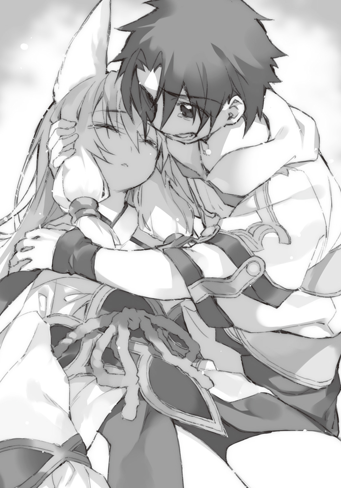
だから、声を発することのできる者はおらず。
最初に、静寂を破ったのは――
「......うん？ なんじゃ、どういう状況じゃ？」
死んだはずの少女。
全員があきらめた生命。
カグヤその人で――
ただしこれは残酷な――少なくともアレクサンダーにとって、カグヤがただ死ぬよりも、もっと残酷な仕打ちの始まり。
目覚めたのはカグヤではなく、カグヤの皮を被った何者かでしかなかったと。
そういう喜劇の、始まりだった。
○
「悪いが、わらわは『カグヤ』とかいう存在ではないぞ。ただまあ、同じ肉体で、同じ知識のもと、同じような言葉をしゃべるというだけの者じゃな」
ソイツは断言した。
では何者なのかという質問に対して、ソイツはこう答える。
「何者かは知らんな。たった今生まれたばかりの意識じゃ。だから、貴様らがわらわを『カグヤ』と呼称したくなければ、わらわに名前をつけるがよい。さて、貴様らはわらわになにを望む？ 死した少女の代わりか？ それとも空いた肉体に憑依した空気を読まぬ悪役か？ なんでもいいぞ。なにぶん生まれたばかりで目的がないでな。好きなものになってやろう」
望みを叶えるだけのモノだと、ソイツは己を定義する。
ならば、とアレクサンダーは問いかけた。
「なんでカグヤは、あんな無茶をしたんだ」
「それはもちろん貴様に惚れておったからじゃろ」
「......」
「気付かんものか？ こんな不器用な恋心。ああ、思考も思い出も共有しておるでな、つまりわらわにとっても貴様が初恋ということになるのかのう」
「............ひょっとして、俺をかばおうとしたのか？ 死なない、俺を？」
「うむ。アレクサンダーはこの城で死ぬという予言があったからのう」
「なんでカグヤは、その予言を言わなかった？」
「そりゃあ周囲を己よりはるかに有能な者に囲まれ、その中で活躍できん状況が続けば、活躍したいと思うのは道理じゃろう。力なく、技能なく、知識なく、経験のないこの肉体の元の主が活躍するには、予言を独占するしかないからのう」
「......そんなことに、命なんか、懸けなくたって......！」
「役立たずの末路は暗い穴蔵じゃからな」
「......」
「貴様らの知る『カグヤ』は、思いの外、あの穴蔵を恐れておったようじゃな。だからイーリィとかいうのよりも活躍したかったと」
「......なんで」
「そりゃあもちろん、嫉妬じゃろう。少女らしい、淡い感情――」
そこまで言った段階で――ズガン！ となにかが床にたたきつけられた。
それはダヴィッドの持っていた鎚だ。
彼女は憤怒の形相で、述べる。
「黙れ。それ以上言うな。アレクサンダーも、質問するな。テメェらは死者の想いを暴いて、なにが楽しい。カグヤの気持ちを考えやがれ」
重い沈黙が降りた。
ただ一人、カグヤの中に入った何者かが、よくわかっていないように首をかしげる。
「それで、わらわはどうすればよいのじゃ？ 貴様らはわらわになにを望む？」
無垢な問いかけだった。
アレクサンダーとイーリィは悲痛な顔をしていた。
ダヴィッドは嫌悪を隠そうともしない。
サロモンは無表情だったが、小さく舌打ちをした。
ウー・フーはおろおろするばかりだ。
ただ一人、『真白なる夜』がいつもの調子で微笑んでいた。
「あの、僕、今から空気読まない発言しますけど......さっさとモンスターを掃討して人を呼びこみませんか？ 僕らが立ち止まっているあいだにも、世ではモンスターに殺されている人たちがいますし。先陣を切る者として、さっさと拠点確保をするのは務めかと」
ダヴィッドは一瞬『真白なる夜』をにらんだが、口を開きかけてやめた。
たぶん彼の意図がわかったのだろう。
だから、再びの沈黙のあと――アレクサンダーが、立ち上がり、『真白なる夜』に告げた。
「......嫌な提案をさせちまったな。悪い。......俺が言うべきことだった」
「いえいえ。我が偉大なるアレクサンダーのためならば、この体も心も、傷つくこと厭いませんよ。......なーんちゃって」
「......最後におどけるんじゃねーよ」
ようやくアレクサンダーは笑う。
傍目にも無理がわかる笑顔だった。でも、そのことを指摘する者はいない。
彼はカグヤに視線を戻す。
「俺はお前になにも望まない」
「ほう」
「......お前のことを受け入れるのは、正直まだ難しい。でも......とりあえず、生まれたなら、それはいいことだ。お前みたいなヤツもいる。俺の世界はまた広がった。......そして俺は、広がった自分の世界に、初めて戸惑いを覚えてるよ」
「ならばわらわはどうすればいい？」
「お前はカグヤじゃない」
「そうでもあり、そうでもない」
「俺はお前をカグヤだと思いたくない」
「なぜじゃ？ カグヤが死して、貴様らは悲しんでおるではないか。記憶も思い出も容姿もカグヤと共有しておるわらわが、カグヤとして復活してやってもいいのじゃぞ？」
「お前にカグヤを塗りつぶす資格はない」
「......うむ？ ようわからんのう」
「だからお前は、お前として生きろ。名前が必要なら、『カグヤ』以外を名乗れ」
「そうは言われてものう。カグヤという名前も貴様がつけたものじゃろ？ わらわにもなんぞ名付けてくれんか？」
「......あの日見た光が、どうしてもちらつくな」
「うん？」
「『月光』」
「......カグヤの知識を参照するに、人名ではなさそうじゃが」
「悪いけど、俺はお前を、人と思うことができない。......でも、カグヤじゃないと割り切ることもできない」
「ほう。なるほど、それもよい。曖昧な者と望むのであれば、わらわは『月光』と名乗ろう」
こうして、『月光』、現在では『輝き』と名乗る者が誕生した。
――ようやく本題に入ることができそうだ。
なんのために、『月光』が五百年も生きたのか――ここまでの旅路を知ってもらったうえで、その理由をかいつまんで話そう。
○
結論から言えば、アレクサンダーたちの旅はそこで終わった。
ダンジョンを制覇し、モンスターの生成を止めた。
中のモンスターを掃討し、トラップ解除に奔走した。
すでに家などの必要設備のそろっていたそのダンジョンには、あっという間に人が集まる。
そして、数カ月もしないうちに、現在で言うところの『王都』の体裁は整った。
しかし人の流入が続く限り、やらなければならないことは増え続ける。
アレクサンダーは人々を焚きつけた責任上、王都にとどまり『王』の役割を戴かなければならなくなったのだ。
ここに、後世、人間の王国の初代王と呼ばれる『アレクサンダー大王』が誕生してしまう。
本人は望まなかった。もとより根無し草の風来坊だ。立場や権力に縛り付けられることをよしとしない――だが、他にいなかった。
この予定外の流れに喜んだのは、イーリィだ。
彼女はいくら『死なない』と言っても、アレクサンダーや仲間たちが傷つくことに心を痛め続けていた。
モンスターもダンジョンの外にいるものはあらかた掃討が終わってきた。
あとはもう人々の生活のために尽くすだけだった。
旅暮らしよりそういう暮らしの方がイーリィには向いていたらしい。彼女の優れた政治的手腕は、後世でも語り継がれることになる。
自然な流れ――かどうかは『月光』視点ではわかりかねるが、アレクサンダーとイーリィは結婚をすることになった。結婚という制度を法整備した後の、人類初の結婚となる。
カグヤが死んだ翌月にはもう、話が出ていた。
もちろん旅の中で色々あったはあったのだろうけれど、旅での進展のなさを思えばこそ、やや性急な感じもある結婚だったと言えるかもしれない。
なにかから、逃れるような。目を逸らすような――不幸と悲しみをいつまでも見続けないよう、無理矢理にでも幸福になろうとしたような。
そういう焦燥があったとは、誰しもが思っていただろう。
パーティーはバラバラになった。
最初にたもとを分かったサロモンは――
「弱者の重さに負けたな、強敵――いや元強敵よ。今の貴様はつまらん。殺す価値を感じぬ」
アレクサンダーを見限って、去っていった。
ジルベールを含むエルフたちは彼に付き従うこととなる。
もっともこれは、アレクサンダーに対して意固地になっているサロモンをなだめるためについていった、という側面が大きい。......結果として、多くのエルフが去り、ついぞ人間の王都に戻ることはなかったけれど。
他のメンバーは、まだしばらく一緒にいた。
しかし、ダヴィッドが王宮で重職に就くことを嫌って、去っていった。
彼女ももともと権力機構を担いたがるタイプではない。
聖剣を打てないと予言されてしまったが、それでも腰を据えて色々やってみる気だろう。
まあ、そんな彼女に多くのドワーフたちが従ってしまったので、けっきょく、望まぬ権力機構を担う重職には就かされてしまったのだろうけれど。
ウー・フーは色々あって、『真白なる夜』との子を成した。
彼女の目的はここにようやく達成されることとなった。「子供育てたらまた来る！」と元気に去っていったけれど、彼女がその後王都に戻ったという記録も記憶もない。
ドライアドは気の長い種族だから、しばらくのんびりしているあいだに、アレクサンダーもイーリィも死んでいるぐらいの年月が経っていることに気付いたのだろう。
十年を超える歳月が流れた。
イーリィも『真白なる夜』も、相応に歳をとっていく。
だというのにアレクサンダーと『月光』は、まったく歳をとらなかった。
『月光』が歳をとらない理由はある程度予想がついた。
『カグヤの死体』を肉体としているからであり、死体は成長しないからではないか、という分析だ。
これは正解だったと、のちにわかることになる。
ただ、アレクサンダーがずっと若いままの理由は、誰にもわからなかった。
もとより容姿には幼いところのある少年だったけれど、いくらなんでも、あきらかに異常なほどの不変っぷりだ。
しかし、歳をとっても、年齢より容姿が若いままの者もいるにはいる。
この時点ではまだ、アレクサンダーが不変であるということは、笑い話だった。
二十年が過ぎた。
アレクサンダーの容姿は変わらない。
さすがにおかしいと周囲の者が思い始める。
この時から、アレクサンダーは人前に出ないようになっていく。
政治的なことや会議などはイーリィが中心に行っていたこともあり、アレクサンダーはイーリィに王位をゆずって自分は裏方に回ることにした。
ここに初代女王が誕生し、現在に残る女王制のひな形が出来上がる。
アレクサンダーが一箇所に腰を落ち着けてから、三十年が過ぎた。
彼はいまだ、少年のような見た目をしていた。
生まれ、成長していた子供よりも、容姿が若い。
イーリィはすでに五十歳近く、容姿は年齢相応だ。
アレクサンダーの種族は人間に間違いがないのに、さすがにこれは、おかしい。
この時点で、ここまでアレクサンダーに付き従い続けた『真白なる夜』が提案をする。
「我が偉大なるアレクサンダーよ。あなたの冒されている症状について、調べてまいります」
彼もとうに五十をこえていた。
若々しいのは若々しいが、それはやはり年齢相応でありアレクサンダーほど異常ではない。
......もう、この時点で、アレクサンダーの『歳をとらない』という特徴は、病気と同様に扱われていた。人前に出ることができるはずもない。
そこで『真白なる夜』は余生を懸けて、アレクサンダーのために『歳をとらない症状』について調べるため、各地を回ることにした。
見て回るのは旅で行くことのなかった王都より西側と、南にあった絶壁の向こうだそうだ。
......その時点から四百年以上経っても、彼が戻ることはなかった。
すでに老齢と呼べる歳で始めた冒険だ。いかに強い彼でも老いには勝てず、どこかを探索中に息絶えたのだろう。
このあいだも、『月光』は歳をとらなかった。
ただし、肉体は朽ちていく。
人として当たり前の機能は備わってこそいたが、それは経年により確実に劣化していった。
見た目が変わらないだけで、老いてはいたのだろう。
それでもイーリィにより修繕はなされていたのだが――
......さらに十年が過ぎた。
イーリィが、みまかる。
とうに王位は娘へとたくされていた。
しかし、偉大なる初代女王の死に多くの国民が悲しんだ。
この時から、『月光』は肉体を乗り換えていくことになる。
アレクサンダーに曰く『憑依』と呼ばれたその能力で、体が朽ちるたび、新しい体に自身の存在を入れ替えていった。
生きている者にも憑依できたけれど、それはイーリィの遺言で禁じられていた。
不思議なことに、『月光』が憑依した肉体は、カグヤと同じ容姿になった。
ただし、一度体を乗り換えるたび、一本ずつ尻尾が増えていく。
この現象の理由はわからなかったが――生きながらえた回数を数えられているようで、気持ちのいいものではない。
時間が流れる。
けれど、アレクサンダーと『月光』は時間の流れから切り離されていた。
......『月光』は、肉体が完全に朽ちるまで誰にも『憑依』しなければ死ねたのだろう。
けれど――
「......俺は、まだ死ねないのか」
王城の一室。
古くはダンジョンの隠し部屋だった場所。
ともに探索したメンバーがもう残っていない今となっては、誰も見つけることのかなわない場所に、アレクサンダーはいた。
幽閉されているのではない。自ら入っているのだ。
「みんな、死んでいく。みんな、みんな、いなくなっていく......だっていうのに、俺だけが、いつまでも、若いまま死ねない......！ どうして、こうなんだ......！ 教えてくれ......！」
彼は、死にたがっていた。
その理由を、半狂乱で語る。
「だって、俺が死なないなら、あの時カグヤがやったことはなんだったんだ......!? 死なない俺をかばって死んだなんて、あいつに、なんて言えばいい!? 俺は、死にたい。俺だって死ぬんだって、あいつのやったことは無駄じゃなかったんだって、あの世で報告しなきゃいけないのに......！」
――目的のない空っぽの魂は、この願いを受け入れる。
ようするに、人のことなど言えない。
『月光』もまた、他者の願いに生涯を懸けた『人もどき』であり――
だからこそ同じ願いで行動する者のことなど、心をのぞいたかのようにわかる。
我が子であるアレクサンダーならば、『人もどき』同士、気持ちを共有できるのではないかと、すべてを話すことを決意したのだった。
○
「アレクサンダーは......と、ややこしいのう。我が息子ではなく、我が初恋の相手であるところのアレクサンダーは今なお生きておる」
ピチャンピチャンと、どこからかしずくの垂れる音がした。
カグヤ――否、『月光』は、足元にたまった水をながめた。
地下深い牢屋。天然の洞窟に格子をつけただけの簡素な場所。
体はあいかわらず丈夫な金属でぴったり覆われている。
手足も魔力も、依然として機能する様子がない。
正面には、魔導具のランプを手にした男がいた。
アレクサンダー。
五百年前の英雄の名前をあえてつけた、死体から生まれた子供。
長い語りを終えて、『月光』は一息つく。
それから――無表情でこちらを見つめるアレクサンダーに告げた。
「死ぬことが、ヤツの望みじゃ。わらわはそれを叶えるため、生きながらえ、生きさらばえてヤツを殺す方法を探し続けておる」
「......カグヤが受け取ったという、アレクサンダーの命にまつわる予言はどうなった？」
「ああ、二つ目は、現在で言う『王城』が、ヤツの死に場所だというものじゃな。そして最初に受け取った方、これが貴様に『アレクサンダー』と名付けた理由じゃ」
「......？」
「『アレクサンダーは、アレクサンダーにより殺される』」
「......なるほど。それであんたは、弟子や子供に必ず『アレクサンダー』を名乗らせるのか」
「そうじゃ。名前が違うだけで資格なしとなっては困るからのう。......もっとも、ヤツをかばったカグヤは、『モンスターの中に本当の名前がアレクサンダーっていうやつがいるかも』とか、かわいいことを考えておったな」
「......でも、アレクサンダーは今まで死ななかったんだな」
「そうじゃな。あらゆる方法を試し、あらゆる苦しみを与え、あらゆる痛みを覚えさせ、あらゆる傷をつけた。しかし、駄目じゃな。体は壊れるものの、死ねん」
「......あんたの『説得』はそうやって身についたのか」
「うむ。......ともあれ、予言はここ五百年、受け取っておらん。もとよりわらわの能力ではないせいか、単純に予言がないのか――」
「......あんたのスキル欄に『予言』っていうものがない。『憑依』はあるけど......ユニークスキル、か。もっと早くあんたのスキルを閲覧しとけばよかった」
「わらわといる時、だいたい悲鳴をあげたり泣いたりわめいたりしておったからのう。アレクサンダーもあのころは......ああ、今言ったのは貴様の方じゃぞ」
「ややこしいから、俺のことは『アレク』か『アレックス』って呼んでくれ」
「そうか。ではアレクよ。――アレクサンダーを殺してやってくれ。貴様ならおそらく、それができる」
「......それは、保留だ」
「ふむ」
「先に質問に答えてもらおう」
静かに、表情を変えず、アレクは言った。
『月光』は笑う。
「ヨミがわらわの子か、それと『輝く灰色の狐団』を滅ぼした理由、か」
「そうだ。その二つの返答いかんでは、俺はあんたを殴らなきゃいけない」
「しかし勘違いがあるのう。わらわは『輝く灰色の狐団』を潰しておらんぞ」
「......勘弁してくれ。殺したくなる」
「事実、『輝く灰色の狐団』を構成していた、行き場のない子供などは残ったであろう？ それに今ではかなり立派になっておる」
「結果論だ」
「いやいや。わらわもな、貴様のクランの繁栄のため、陰に日向に努力しておったんじゃぞ。なにせそれが、『はいいろ』の願いじゃからな」
「......どういうことだ？」
「わらわはな、『死にたがっている男』を見ると、願いを叶えてやりたくなるのじゃ」
「......」
「あの男はよかった。誰より自由で、誰より強く、誰より気楽なふりをして、その実、己の命ある限り誰も幸せになれんことを知っておった」
「............」
「命を賭さねば叶わぬ願いがあると、知っておったのじゃ。しかし、実行もできない。『狐』には『死んだあとのこと』など間違っても話せんじゃろう」
「......あの人なら、『はいいろ』が死にたがれば止めるな」
「うむ。じゃからな、あの男は死にたがっておったが、死ねなかったのじゃ。なにせ自分が死んだあと、後事をたくす相手がおらんかったからのう」
「それで、あんたと結託したのか」
「悪だくみのように言うでない。......実際、それで救われる者は多かった。『はいいろ』以外の罪は不問になったじゃろう」
「......法律上はな」
「印象など貴様らで挽回せい。世の中はそれほど甘くないわ――と、言いたいところじゃが、わらわもそれについて、隠れて尽力しておった」
「口ではなんとでも言える」
「貴様はいつ、わらわが生きていると確信した？」
「............」
「『銀の狐団』の子供らを養うため、危険なダンジョンに何度ももぐったな？ その際にまだまだ未熟だった貴様にわらわが手を貸しておったこと、感じていたんじゃろう？ 実際、ロードでもどうにもならん状況では、直接手を貸したりもしたしのう」
「......ふん」
「そのように、死んだことになっておるわらわが陰から新生『銀の狐団』を支え、『狐』が日向から『銀の狐団』をまとめたならば、ほぼ『はいいろ』の望み通りになるはずじゃった」
「......結果的に、『狐』は死を選んだ」
「それこそまさに結果論じゃな。......迂闊なことじゃ。わらわも、『はいいろ』も、あの女の情熱を読みきれんかった」
「......」
「人は本能的に死にたがらない生き物じゃと、そういう思いこみがあったんじゃろう。......わらわが言うと、かなり皮肉じゃがな」
「......つまり悪意はなかったのか」
「あるわけがない。......わらわは、『はいいろ』と『狐』の幸せを願っておった。こればかりは本当じゃ。わらわは本当に、あの二人が好きじゃった」
「......」
「わらわの記憶は、わらわの記憶ではない。アレクサンダーやイーリィとの旅は、カグヤの記憶じゃ。じゃからの、わらわが初めてともに戦った仲間は、『はいいろ』と『狐』じゃった」
「............」
「貴様も貴様で、わらわに恨み言があるじゃろう。しかし、わらわも、あるぞ。見当違いの八つ当たりじゃろうが、言いたいことは、ある」
「言ってみてくれ」
「なぜ『狐』が死ぬのを止めてくれなかった」
「......」
「............状況を作ったのも、あやつの情熱を読み切れんかったのも、わらわのせいじゃ。それでもなお、『狐』が死んでしまったことだけが、口惜しくてならん......！」
「......あの人は、幸せそうだった」
「そうか。......それだけが、救いじゃな。死して幸福であれば、わらわがとやかく言うことはなかろう。けれど......なぜじゃろうな。『狐』には、生きてほしかった」
「......」
「『狐』も不幸な身の上の娘じゃからな。わらわの体の本来の持ち主――カグヤと重なってしまったのかもしれんのう」
「その不幸な身の上の娘と、男をとりあったのか」
「質問その一じゃな。貴様はすでに、わらわの日記を読んで把握しておるかもしれんが......」
『月光』は笑う。
それから、拘束のせいであまり動かない肩をすくめた。
「わらわが『はいいろ』と寝ることは、ついぞなかった」
「......」
「カグヤのことを笑えんな。わらわは、『月光』として、生まれて初めてあの男に恋をしたんじゃろう。......なにもできんかったわ。不器用に、あやつの願いを叶える以外にはな」
「じゃあ『はいいろ』も、ヨミがどっちの子供か知ってたってことか？」
「うむ。真相を――わらわと『はいいろ』に肉体関係がないことを知らんかったのは『狐』だけじゃな。いや、というか真相は話したんじゃが、あやつは『はいいろ』のことになるとやけに執念深くてのう............最後までわらわと『はいいろ』の関係は疑われたぞ。あの一点だけは、嫌いじゃな」
「......まあ、『狐』の最期を思えば、納得の執念深さだけど」
「それに、『狐』なりの、わらわへの配慮もあったじゃろう。......わらわも『はいいろ』を好いておったからのう。平等だ、と。あの娘の優しさじゃな。『はいいろ』もそのあたりを汲んで付き合っておったんじゃろうな。アレはできる男じゃ」
「......そのできる男には手も出せなかったけど、俺を産んだんだな」
「他の男と寝るのは平気だったんじゃがのう。義務感のせいかの？ わらわも貴様の言うところの『ユニークスキル』、アレクサンダーの言う『チートスキル』を持っておるじゃろ？ 特殊技能のある胎からならば、死なない男を殺せる技能を持った者も生まれるかと、そう思ってやっておったんじゃがなあ......」
「その話はできたら聞きたくなかった......」
「最悪、貴様をさらって子種をもらい、より『ユニークスキル』を持つ確率の高い子を――」
「やめてくれ。おぞましいから」
「――まあ、現状、逆にわらわがさらわれてしまったわけじゃがのう」
『月光』は楽しげに笑う。
それから。
「かつて、獣人族のもとに『降臨』し、ヤツらにアレクサンダーを殺す方法を探すよう告げたことがあった。その結果、獣人は一族総出で旅暮らしとなった」
「......カグヤが初代女王をつとめたとされる、獣人の移動国家」
「現在ではそのように伝わっておるのう。......しかし、役目を忘れ、そればかりか、まさか貴様に協力してわらわを差し出すとは。時の流れは残酷じゃのう」
「皮肉なかたちにはなったけど、獣人族が見つけなくても、俺はあんたにたどり着いたさ」
「そうかもしれんな。......わらわはすべてを話した。アレクサンダー殺しは、やってくれるのかえ？」
「やらない」
アレクが断言する。
『月光』は、鼻を鳴らした。
「......まあ、そうじゃな。意図はどうあれ、わらわが貴様にした仕打ちは、復讐を以て報いられるべきものじゃ。貴様がわらわのために力を尽くす理由はない」
「いや、正直なところ、あんたが俺になにをしたとか、そういうのはどうでもいいんだ」
「なんじゃと？」
「隠れ潜むあんたを捜すのは楽しかったよ。全然見つからないからな。総当たりした。思いつく限りをやって、尽くせる限りの手を尽くした。それでも見つからないから、思いつかない限りをやって、尽くせない限りの手を尽くした」
「......」
「日常のすべてを疑った。『きっと遠くにいるだろう』と思うと同時に、『目の前にいるかもしれない』という可能性を考えた。『あの目立つ容姿じゃ変装は無理だろう』と判断するのと同時に、『ひょっとしたら知り合いに化けているかもしれない』とまったく信じられない可能性さえ追った」
「......それは、目に映るすべてを、常に疑い続けたということか？」
「違う。目に映るものだけじゃない。目に映らないものも全部、何年も何年も疑い続けた」
「......馬鹿な。そんなことをして、なぜ心がもつ」
「それはもちろん、あんたの捜索が俺にとってゲームだったからだよ。必死だった。尋常じゃない時間と労力を費やした。その一方で、まったく本気ではなかった。実際に俺は何度も出入りしている王城内部をまったく捜してない」
「わらわは、そこにいた」
「そうみたいだな。で、なんで捜してないかと言えば、『女王陛下に申し訳ないから』だ。あの人は小さいころからの知り合いだし、気を遣ったんだよ。自分の家を好き勝手捜索されるのは気持ち悪いだろ？」
「......すべてを疑うという、気がおかしくなるような日常を過ごしておきながら、そんな理由で怪しい箇所を見逃していたのか？」
「だから、『必死だったけど本気ではなかった』んだ。実際、生活に支障が出るほどの力は費やしてないよ。最初のうちは必死であり本気だった。でも情報収集のための地盤作りをした結果、作った地盤の運営が本筋になった。お客さんもいるし、従業員も養わないといけないし」
「......理解できん」
「ゲームに人生を懸けるのはやめたんだ。妻が怒るから」
「............ヨミか」
「そうだ。商売をして、部下がいて、妻がいて、子供がいて、お客さんがいる。いつまでも人生すべてを懸けてゲームばっかりしてもいられない。削るのは睡眠時間だけにした」
「......不思議じゃのう。貴様がまともなことを言えば言うほど、狂って見える」
「普通のことに気付いたんだ」
「......」
「あんたを見つけて問いただしたかった。でも、問いたださなくても俺たちは生きていける。あんたを超えて自分の目標を手に入れたかった。でも、目標なんかなくたって人は生きていける。あんたを捕らえて『輝く灰色の狐団』壊滅の真相を知りたかった――でも、真実なんか知らなくても、人は進むしかない」
「......ふん」
「あんたはあらゆる面で、俺の生活に影響はしなかった。ただ、俺の精神には、影響してた。でも解消できないストレスを抱えて生きるなんて、当然のことだろ？ だからあんた捜しのために、俺は人生を懸けなかった。っていうか正直それどころじゃなかった」
「............クランの面倒をみていたからか」
「そうだな。よくも悪くも、最初から色々抱えこまされすぎた。余裕がなかったんだよ。で、生きていくうちに、疑問を解消しなくても意外とどうにかなるっていうことを覚えた」
「......」
「ようするに、大人になったんだ」
「............つまらん成長を遂げたのう、アレクよ」
「まあ、それは俺も思うよ。だから今は『面白い』人たちの応援をしてる。俺がついに自力で抱けなかった『夢』とか『願い』を追う人をサポートしてるっていうわけだ」
「ふん」
「そして、俺ができることは、それだけだ。誰に対しても、あんたに対しても」
「......？」
「あんたの目標を、俺は解決しない。あんたの目標なら、あんたが解決するべきだ」
「......おい、まさか貴様」
「『アレクサンダー殺し』をあんたが望むなら、そうできるよう俺が修行をつける」
「............」
「目標があって、達成できないなら、力をつければいいだけの話だ」
「しかし、『アレクサンダーはアレクサンダーにより殺される』という予言はどうする」
「あんたが勝手にアレクサンダーを名乗ればいいだろ」
「............」
「だいたい、カグヤさんがすでに予言を阻止し、『影』との戦いで死ぬはずだったアレクサンダーさんの延命を果たしたとは考えないのか？ その可能性を捨て去るっていうのは、あんまりにもカグヤさんがかわいそうに思う」
「......はん」
「まあ、俺は当事者じゃないからあんまり色々は言わないよ。お客さんにもそういうスタンスで接するよう心がけてる。実際に予言通りの手順じゃなきゃ殺せない可能性もあるからな」
「ならば貴様は、わらわになにを教える？」
「『十割殺し』の魔法だ」
「......なんじゃその物騒なのは」
「あんたと殺し合う展開に備えて開発してた。普通の方法では殺せないっぽいしな。この魔法は完成すれば『強制的に他者をＨＰ０の状態にする』はずだ。アレクサンダーさんを守っている仕様はある程度予想がつくし......まあ、興味があれば修行中においおい話すよ」
「......」
「で、どうする？ 修行するか？」
アレクの問いかけ。
『月光』は――
「愉快じゃな」
笑った。
こらえきれないというふうに体を小刻みにゆらしつつ、言う。
「まさか、まさかまさか、貴様に修行をもちかけられるとは。あの、泣きわめいていたアレクに。まだまだ子供だと思っていた、アレクに」
「時間って残酷だろ？」
「まったくもってその通りじゃな！ ......ああ、そうか。わらわは、なんという馬鹿者か。長きを生きた。時間に取り残された。周囲が変わる中、不変のままじゃった。これを幸福と思ったことはなかったが......」
「......」
「......我が子の成長がこれほど嬉しいとはな。長生きするのも、悪いことばかりではないの」
「で、どうする？」
「貴様の修行、受けよう」
「承りました。これよりあなたは、俺のお客様です」
アレクが笑い、一礼する。
『月光』もまた応じるように、歯をむき出しにして笑う。
「長いことアレクサンダーを待たせておる。なるべく手早く頼むぞ」
「お任せください。最高に効率的に、あなたの五百年に終止符を打つお手伝いをしましょう」
見つめ合い、噴き出すように笑う。
――こうしてようやく親子は同じ方向を見るにいたった。
英雄を殺すための修行が、始まる。
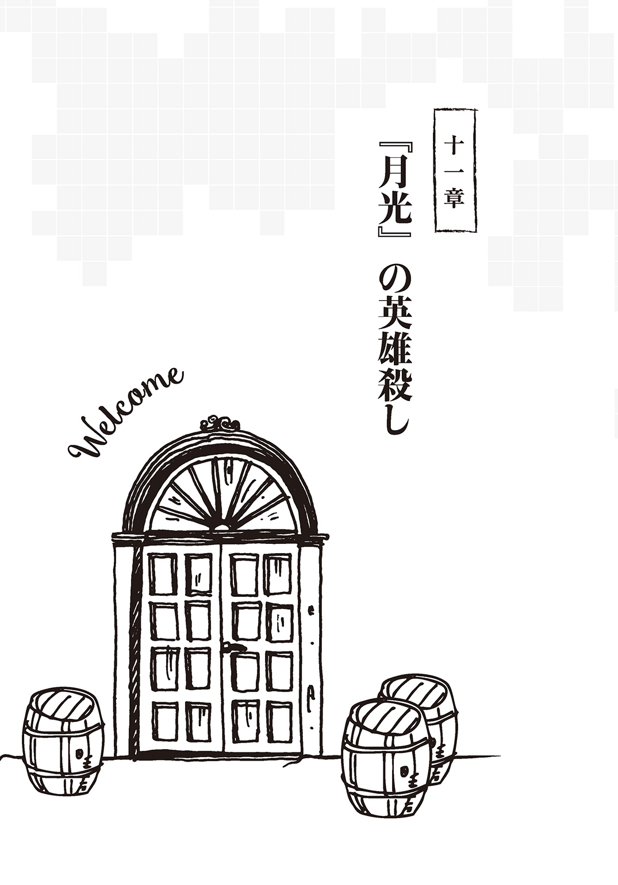
『不死の英雄殺し』のため、アレクの修行を受けることにした『月光』。
アレクは『月光』の息子だ。だからそこまでおかしな真似はしない――とかいうこともなく、
アレクの修行はいつも通り行われていく。
さらにかつてとあるクランでアドバイザーのようなことをしていた『月光』は、
アレクの修行をより効率的に、より非人道的にするような改善案をうっかり出してしまう。
『月光』が五百年にわたり抱き続けた願いは叶うのか。
それとも、その前に彼女の心が壊れてしまうのか？
そして、彼女は『英雄殺し』のための修行の中、自分自身と向き合うことになる......。
『銀の狐亭』。
王都の大通りから一本裏に入ったところにあるうらぶれた建物には、そのような看板がかかっていた。
もう時刻は朝だ。
しかしこのあたりは、どこか薄暗い。ちょうど建物の陰になっているのだ。
アレクと『月光』は、薄暗いせいで幽霊屋敷の趣すらある建物の前に立っている。
『月光』は息子の経営する宿屋を見て、一言。
「もうちっとマシな建物にはできんかったのか」
「いやいや、このぐらいがちょうどいいんですよ。あまり立派でも入りにくいし、あまりボロすぎても入りたくない。このぐらいが、適切なんです」
「適切な割には繁盛しとらんようじゃが」
「繁盛が目的ではありませんからねえ。あなたから習った情報操作で、『死なない宿屋』が必要そうな人だけにこの宿の噂がとどくようにしてますから」
「......貴様と直接会話をするのは『はいいろ』のところで貴様が死んだり死に続けたりしておった時以来じゃが、人は変われば変わるもんじゃのう。昔の貴様は、真っ直ぐじゃった」
「お互いに歳をとったということですね」
「ふん。......行くぞ。案内せい」
「そうですね。ではどうぞ」
アレクは笑顔で一礼する。
それから、宿屋のドアを開いた。
「いらっしゃいませ。ようこそ『銀の狐亭』へ」
エスコートされて『月光』が中に入ると、そのような、物静かな声が聞こえる。
羽根ペンとインク壺のあるカウンター。
背後には窓があり、光と風がそこから宿内に入ってくる。
外はあんなにも薄暗かったのに、まるでここだけ区画全体で採光が計算されているようだ。
左手には二階へのぼる階段があり、さらに奥には食堂とおぼしき空間が見えた。
外部はうらぶれているわりに、内部は明るく、そして広く見える。
視線をカウンターに戻す。
そこにいたのは、白い毛並みの猫獣人だ。
ぼんやりとした表情には幼さが色濃く残っている。見た目年齢だけならばまだ子供だ。
アレクのことについて調べてはいたが、『銀の狐亭』や『南の絶壁』など、人気のないところでなにかをされると、手が出ない。
他の者の気配がないところでアレクの感知範囲に入ると、すぐに捕捉されるからだ。
だから、何度か手下を使ったりして遠巻きに観察してはいたものの、アレクの宿の従業員と直接接触するのは、これが初めてだった。
さて、昔いた手下――今はもう解散させられた『アレクサンダーもどき』たちの情報によれば、この白い毛並みの猫獣人は『ブラン』という名前だったはずだ。
身分は奴隷だと、公式記録にはある。
しかし何度か外で買い物をする時に、ヨミに対して『ママ』と言っていることが確認されていた。
ヨミを『ママ』と呼称するということは、その夫扱いになっているアレクを『パパ』と呼称させられているということが予測できる。
しかし血縁関係ではない。ということはつまり、この娘は――
「貴様か、噂にあったアレクの妾は」
「そうですね。パパの妾のブランです」
やはりな、と『月光』はうなずいた。
古来、貴族などが奴隷や使用人の少女を『娘』のようにかわいがり、その実『妾』として扱っていた事例は枚挙にいとまがない。
実際、アレクを産んだ時の『月光』も似たような立場に偽装していた。
だから『月光』は『やっぱりそうか』と思うのだが――アレクが後ろから頭をひっぱたいてきた。
「なにすんじゃ貴様！ 母親の頭をひっぱたくでないわ！」
「人の娘に対して開口一番に『妾か』とか言う人は、ひっぱたかれるどころか、首を落とされても仕方ないと思うんですが。セーブなさいますか？」
「いやいや。わかっておるわ。娘のように扱っておるんじゃろ？ 表向きには。手元で美味しく育つまで待っておるんじゃろう？ わかるわかる」
「裏向きにも娘です。美味しく育つまで待ってるわけじゃありません」
「なるほど。今がすでに美味しい時じゃと。いい趣味しとるな、貴様」
「違います」
「しかしあやつは妾だと認めたぞ」
「......ブラン」
アレクもさすがにあきれた顔になった。
ブランはしっぽをピンと立てて、はにかんだように笑う。
「あ、パパ、お帰りなさい。相変わらず気配ないですね」
「お帰りじゃなくて」
「ソフィさん、いらしてますよ」
「それは知ってるけど」
「みなさん夜通し騒いでらしたので、ちょっと食堂がひどいことになってます」
「そうか。それはいいんだけど、妾っていうのは......」
「そういえば母親って？ その人は？」
「ああ、この人は俺の母親で......ヨミの義母にあたるのかな」
「ということは、私のおばあちゃん？」
「そうだな。お前は、妾じゃなくて俺の娘だから、そうなるな」
「ああ、例のおばあちゃんですね。なるほど、たしかに尻尾がたくさん......あれ？ パパは九本だって言ってましたよね？」
「そうだけど、どうした？」
「十本あります」
「......本当だ」
アレクがまじまじと『月光』の尻あたりを見る。
むずがゆさを覚えながら、『月光』は注釈した。
「......『輝く灰色の狐団』解散当時、貴様の目の前で首を落とされたじゃろ。あれで一度死んでおる。その時に十本に増えた」
というか、自分をあの棺に入れる時に気付かなかったのだろうか。
あまり関心をもたれていないような気がして、少しへこむ。
アレクは納得したように「ああ」と声を漏らした。
一方で納得できなさそうに首をかしげるのは、ブランだ。
「......九本じゃないんですね。パパは九本って言ってたのに。......でもパパが間違いっていうのはないし..................切り落とすとか」
ぼそり、と非常に小さな声でつぶやく。
『月光』の耳にはとどくが、アレクの耳にとどいている様子はないという絶妙な音量だった。
思わず『月光』はアレクに告げた。
「貴様、手元にとんでもないものを置いておるな」
「？」
「いや、アレは『狐』と同族じゃぞ。あのきかんぼう娘と同じ気配を感じる」
「まあ獣人ではありますね。狐獣人と猫獣人の違いはありますけど。それに、たしかにちょっと頑固なところもありますかね」
「そういう意味ではないが......まあよい」
『月光』は肩をすくめる。
アレクは首をかしげるが、大して意味のない発言だと判断したらしい。
「では、お待ちかねの、ヨミに会いに行きますか」
そう言って、さっさと食堂とおぼしき方向へ歩き出した。
『月光』はブランを振り返る。
彼女は眠たげな顔に戻り、ぺこり、と軽いのにどこか気品ある動作で礼をする。
孫。いまいち実感はわかないが――
「......よく考えたら、各地に孫がいても不思議ではないのう」
そんなことを思いつつ。
こちらをまったく顧みないアレクの背中を追った。
○
食堂はひどいありさまだった。
『月光』は一瞬、虐殺現場を連想する。
カウンター席と数少ないテーブル席がある、やや手狭な空間は、そこここで人が倒れ伏していた。
机につっぷして眠る人間の少女と、猫獣人。
床にからまりあうようにして寝転がる、エルフとドライアド。
椅子に座り、壁に体を押しつけるようにしてうなされているドワーフと、それに抱きつく魔族の少女。
ただ一人、毛髪の赤い、人間の女性だけがカウンター席でのんびりとジョッキに入ったなにかを飲んでおり、入ってきたアレクに反応した。
「おや、その方は新しいお客様かな？」
赤毛の女性はそんなことを述べる。
それから、『新しいお客様』、つまり『月光』へ向けて言う。
「そんなにお若いのになにを早まってこの宿に来てしまったかは知らないが、少しでも『なにかおかしいな？』と感じたらすぐに宿を変えた方がいい。ベッドやら風呂やらはたしかに心地いいし、食事も美味しいのだが、それに騙されてはいけない。先達からの忠告だ」
真剣な顔だった。
この宿でしている修行の噂は、『月光』も知っている。
簡単にまとめると『とにかくひどい』という話だった。
詳しい内容を知っていそうな者は、一様に口を閉ざす。
また、監視しにくい場所で行われるので、内容は『月光』にもわからない。
まあ、『はいいろ』と『狐』の修行を基礎にしているのだから、それはひどいに決まっているだろう。
アレクに気取られると捕まる、あるいは殺されると思っていたので、『月光』が直接その修行について見聞きしたわけではなかったが......
アレクは、人々が倒れ伏す食堂を見回していた。
顔には考えの読めない笑顔が張り付いている。
「ロレッタさん、これはどういう有様なんですか？」
「いや、ソフィさんが久々に顔を見せたのでな。なんやかんやと私の知る宿泊客はみんなそろったので、旧交を温めようとしたら、朝まで騒いでしまった。ご迷惑をおかけしている。寝転がっているみなさんは少し休んだら私が部屋に放りこもうかと思っているよ」
「なるほど。そのあたりはブランがやりますからご心配なく」
「そうそう、ヨミさんが風邪をひいてしまったのもあったな......いや、すぐに治ったのだが。それでトゥーラさんも......あれ？ トゥーラさんは別件だったかな......」
「だいぶお疲れのようですね。まだ朝ですが、あとでお風呂を用意しましょう」
「それは助かる。私が全員お湯に沈めておこう」
「セーブしますか？」
「溺死をさせるつもりはないので心配には及ばない」
「そうですか。では、俺はちょっと厨房にいる妻に用事があるので......」
「ああ、そうだったのか。引き留めてしまってすまない」
「いえ」
アレクが笑う。
ちょうどそのタイミングで、奥から出てくる人物が一人いた。
「アレク、帰ってきたの？」
それは黄金の毛並みの狐獣人だ。
はっきり言って、見た目は幼い。
給仕のような服とエプロンドレスを身にまとっているけれど、親の仕事を手伝っている少女という感じだ。
ヨミ。――愛した人と、親友の忘れ形見。
彼女を見て『月光』は言う。
「......貴様、本当に成長しとらんなあ」
視線は主に胸のあたりに注がれている。
実はヨミの姿を肉眼で確認するのは久々だ。
理由は前述の通り、アレクに見つかるとひどい未来が待ち受けていそうだったので、気取られないよう注意を払って接触を避けていたというものだ。
いちおう、手の者を使っての監視はしてきたし、その報告も受けている。
だからぼんやりと、ヨミの現在の体型などを知ってはいたのだけれど......
それにしたって成長が止まりすぎだと『月光』は思った。
なるほどこれは、アレクも疑うわけだ。
体毛の色はともかく、見た目ならヨミは自分に近い。
そのように納得して『月光』はうなずく。
一方ヨミは、『月光』の突然の来訪、そして奇襲気味の『お前母親に似ず胸が成長しないな』という言葉――にもかかわらずおどろいた様子もなく、対応した。
「あ、久しぶりー。元気だった？」
「......反応薄いな貴様は」
「んー......いや、まあ、なんとなくソフィさんの話とかから予想ついてたし。あとね、ぼくにとって、あなたはもう、どうでもよかったの」
「......」
「アレクは血縁とか気にしてたみたいだけど、ぼくはどっちだってよかったし。だから、『今さら出てきてどうしたの？』っていうのが、ぼくの素直な感想かな。本当の本当に今さらだしね。色々」
「......貴様、わらわのこと嫌いじゃろ」
「いやあ、好かれてると思う方がどうかしてる気がするけど......いなくなって迷惑かけられたし、いなくなったあとも、そこらで『狐』とか『はいいろ』とかを名乗る犯罪者は出てきたし......あれってあなたの差し金でしょ？」
「全部ではないが、一部はな。アレクを鍛える必要があったのじゃ。わらわの目的のために。そのための試練のつもりじゃったが、まあ、結果だけ見れば必要なかったのう」
「うん。だからね、出てくるなら面倒臭いことしないでさっさと出てくればよかったなあって思ってるし出てきたところで『なんの用事だろう？』って感じなんだよねえ」
「おいアレク、ヨミはいつからこんなひねくれた性格になった」
『月光』はアレクをにらみつける。
対して、彼は笑ったまま答える。
「いえ、普段はやや口うるさいところもありますが、素直で優しいですよ。ただ、あなたのことが嫌いなだけかと」
「......手放しで歓迎されるとは思っておらんかったが......はあ......意外とこたえるのう」
「時間をかけて信頼を取り戻すしかないでしょうね」
「かけさせてくれるのか、時間を」
「それはあなたの好きにしたらいい。俺にはもう、あなたから聞きたいことはありませんからね。いたいなら、いればいい。ただし、いなくなっても、もう捜しませんよ」
「冷たい連中じゃのう。わらわの味方はおらんのか」
「俺はこれでも最大限あなたの味方をしているつもりですが」
「母親だからか？」
「いいえ、お客様だからです。......そういうわけでヨミ、この人はしばらくこの宿で過ごす。修行もつけるから、そのつもりで」
アレクの言葉。
ヨミは一瞬、笑顔のまま固まった――しかしすぐにその硬直は解けて、
「......まあ、詳しい事情は聞かないよ。お客さんなら、ぼくも追い出したりはしない」
「お客さんじゃなかったら追い出すつもりなのか」
「そうだねえ。存在が子供の教育に悪いし......」
「そんなに辛辣なお前を初めて見て、俺はちょっとびっくりしてる......俺たちのクランにまつわる詳しい事情はあとでこの人から聞くといい」
「うーん......ぼくはいいよ」
「気にならないのか？」
「そりゃあ気になるけど、聞いたところで、まだ幼かったころの話だしねえ。リアクションのとりようないと思う。それより、話を聞いて、アレクはどう思ったの？」
「......一定の理解を示す努力はしてみるべきかなと思った」
「ふぅん......ま、とにかく、いらっしゃいませ。ようこそ『銀の狐亭』へ――かな？」
「そうだな。『色々あったがこれからは仲良くしよう』って言えるほど能天気な相手でもないけど、歩み寄る努力を最初から放棄するほどどうしようもないわけでもないとは思う」
「アレクが呼び寄せるお客さんはいつもだいたい複雑だけど、今回はぼくらにとって特別複雑な相手だねえ」
「俺もまさかこういう展開になると思ってなかった。当初の予定では殺すつもりだったし」
「そうだねえ。ぼくもそうなるだろうって思ってたから、ちょっとびっくり」
「実際に会うまでわからないもんだなあ」
「そうだねえ」
和やかに会話する二人。
その会話をカウンター席で聞いていたロレッタが「殺そうとしていた当人を前に笑いながらする話では......いや、いつものことか」とかぶりを振っていた。
「ところで病気だったんだって？ 今の調子は？」
「べつに、普通」
「ならいい」
夫婦はそんな短いやりとりだけで、体調にかんする話題をやめる。
アレクは『月光』へ話しかけた。
「そういうわけで、あなたにつける修行について、ご説明しましょう」
修行。
『ひどい』と噂のアレだ。
アレクは修行を監視しにくい人里離れたところか『銀の狐亭』内部で行うことが多いようなので、『月光』はその内容について満足に知らない。
手の者を使って見物させたりもしたが、上がってくる報告は『よくわからない』『修行に出たのかと思ったが、修行ではなかったようだ』『修行というのは口実で、対象を見つかりにくい場所で始末する彼流の暗殺術だった』というものばかりだ。
つまり、よくわからない。
ただし『月光』は、アレク自身の修行時代を知っているので――
「貴様のつける修行なんぞ、だいたい予想がつくわ」
「ほう。ではどのようなことをやらされると？」
「当時『はいいろ』と『狐』にやらされておった、『足音を立てないようにしながらダンジョンマスターを倒す』というものじゃろ？」
「ああ、それもやりますね」
「......なんじゃ、他にもあるのか。昔貴様がやっておったものは、言うてみればモンスターと殺し合うか、ダンジョンマスターと殺し合うか、『はいいろ』に一方的に殺されるか、その程度だと思ったのじゃが」
「まあ、その中で多くの『気付き』があったのでね。今は当時の経験を活かしつつ、主に妻やクランメンバーで得た経験をもとに、最高効率を目指して、好きなステータスだけ上げるなんていうこともできるよう、進化させました」
「ほう。それではまず、わらわはなにをする？」
「これはみなさん最初にやっていただいていることなのですが......」
「ふむ、つまり手始めの準備運動じゃな」
「はい。準備運動として、まずは崖から飛び降りていただきます」
アレクは笑顔のまま言い切った。
『月光』はうんうんとうなずいてから、
「......は？ なんじゃと？」
おおよそ修行とは呼べないその行為に対して、思わず聞き返した。
○
「みなさんに聞き返されるので滑舌を鍛えるトレーニングなどもしているのですが、最初の修行は『崖から飛び降りる』です」
「いや、滑舌のせいではなかろう。貴様の発言が意味不明だから聞き返されるんじゃ」
『月光』は率直な意見を述べる。
しかしアレクは首をかしげた。
「意味不明でしょうか？ 混乱や誤解を避けるために、していただく行動だけ、可能な限り簡潔に述べているのですが」
「簡潔に述べればいいというもんでもなかろう。考えてもみよ。『修行する。内容は崖から飛び降りる』って意味不明じゃろうが。それは俗に自殺が目的の時にする行為じゃ」
『月光』はあっさりと言い切った。
この発言におどろいたのは、そばのカウンター席に座っていたロレッタだ。
「さ、さすがアレクさんのご母堂だ......みんながそう思いながらも恐ろしくて言えなかったことを実にあっさり言ってしまわれるのだな......」
感心したような声をあげていた。
『月光』は額をおさえてかぶりを振り、大きくため息をついた。
「というかアレク、貴様、普段からそんな調子か？」
「そうですねえ。求められればご説明させていただくという方針でやっております。だってどのみちやることに変わりはないですし、従っていただける限り、効果も保証しておりますし」
「わらわがせっかく人の気持ちがわかる子になってほしいと修行をつけたのに、貴様は人の気持ちがわからん子に育ってしまったようじゃな......」
「悪いけどあんたの修行で人の気持ちがわかる子は完成しない。あれで完成するのは物理的に人の痛みが理解できる子だけだ」
「口調が戻っておるぞ」
「失礼。とまあ、このような方針ですが、崖から飛び降りる理由をご説明させていただいてもよろしいでしょうか？」
「そうじゃな。はようせい」
「まず、俺は修行に大事なのは耐久力だと思っております。これから行っていく修行で死亡することは少なくないのですが、そういう時に『なんかよくわからないうちに死んじゃった』とか思われると、修行にならないのです」
「なるほどのう」
「加えて、俺の修行、というか人を鍛えるという行為は、死を覚悟し、死力を賭していただかないと効果の落ちるものが非常に多い。なので『死を目の前にしてそれでも先へ進む精神性』を鍛えたい」
「ふむ」
「ですので修行の第一歩として、『落ちて死ぬことで肉体が耐久力の必要性を学習し、耐久力がよく伸びる』『自分から底の見えない絶壁へ飛びこむことで、死ぬということを意識し覚悟しそれでも先に進む精神力をはぐくむ』ということができる『崖から落ちる』という行為が最適なのです。ご理解いただけたでしょうか？」
「うむ、理解した。しかし......」
「気が進まないようでしたら、無理強いはしません。『やらされている』という気分でやっても意味がありませんからね。あくまで、ご自身の意思でやっていただかないと」
「そうではない。貴様の話を聞いて、いくつか疑問が出てきた」
「疑問？」
アレクが首をかしげる。
『月光』は「うむ」となにかを考えこむような顔でうなずいた。
「まず、その方法は本当に効率的なのか、という疑問じゃな」
「いくつものパターンを、基本的に自分で、時には人で試して、最適化はしておりますが」
「そこが、貴様一人の限界じゃな」
「と、おっしゃいますと？」
「この聞くからにヤバイ修行はすべて貴様が一人で考案し、実行しているものじゃろ？ ヨミが力を貸すとは思わん。まあ、わらわのいない年月がヨミを変えてしまった可能性も否定はせんが......」
「ヨミはどちらかと言うと協力はしてくれませんね」
「つまり他者の意見が足りぬ」
「なるほど」
「そしてわらわならば、人の精神や痛みについて、客観的で、専門的な意見を述べることができる。つまり、わらわの意見で貴様の修行はよりよくなるというわけじゃ」
「興味深いですね。続きをお願いします」
アレクが身を乗り出す。
『月光』はちょっとだけ姿勢を正し、咳払いをしてから。
「では。貴様の『崖から飛び降りる』という修行の要点は『高所からの落下により耐久力を上げる』ことと『死を目の前にしても恐れない精神性をはぐくむ』ということじゃな？」
「はい」
「そして貴様が育てているのは、冒険者であろう？」
「はい」
「ならば、覚悟の種類が違う」
「......種類、とは？」
「『崖から飛び降りる覚悟』は『能動的な覚悟』じゃ。目の前の『死』に立ち向かう勇気、と言い換えてもよい。じゃが、それは本当にダンジョンで活きる覚悟か？」
「どういうことでしょうか？」
「ダンジョンでは、あらゆるものが『いきなり』襲い来る。その時に『よし、行くぞ』などと思って死地に飛びこむのでは遅い。危機的状況に突如放りこまれ、瞬間的に覚悟を固めねばならん状況は数多い」
「......なるほど。アクティブスキルではなく、パッシブスキルが必要というわけですね」
「どういうことかわからんが、きっとそうじゃろ。......というわけで、わらわは貴様の提案した『崖から落ちる修行』を二段階に分けるべきと考える」
「ふむ」
「一段階目は、今まで貴様がしていたものでよい。自ら覚悟を決めるというのは、精神の準備運動として大事じゃ。しかし、慣れてきたころに今度は『受動的』あるいは『自動的』に覚悟を決める力をはぐくむような修行にするべきじゃな」
「なるほど。たとえば？」
「『自動的に覚悟を決める精神構造を生み出す』には、『いつ死ぬかわからない』という状況が必要になってくる。つまり、自分で崖から飛び降りるのではなく、誰かに、一定ではない間隔で崖から落とされることが必要というわけじゃ」
「ほう」
「しかし、崖の方向を向いてただ突っ立っているだけというのも、待ち時間がもったいない。そこでわらわが提案する修行じゃが――」
「......」
「『修行者をロープで崖にぶらさげ、適当なタイミングでロープを切る修行』」
「......ふむ」
「これじゃな。そして、修行者にはこのように申し渡すのじゃ。『そのロープをのぼりきり、崖の上までたどりつけたら、修行は合格だ』と」
「............」
「こうすることで、集中力をかき乱し、より実戦に近い状況で『覚悟を決める』ことができるようになる。ダンジョンでこちらが警戒するのをモンスターが待ってくれる道理はない。食事の準備をしておったり、他のモンスターとの戦闘中じゃったりすることは多いからのう」
「......」
「どうじゃ、わらわの提案は」
「素晴らしい。完璧だ」
アレクが拍手をした。
その周囲ではヨミが頭を抱え、ロレッタが顔を青ざめさせていた。
『月光』は妙な高揚感を覚えた。
――賞賛されている。
思えば、人から褒められることの少ない人生だった。
自分の知識を役立て、提案し、それを激賞されるというのは、気持ちがいいものだ。
尻尾が震える。
アレクはひとしきり拍手をし――告げた。
「では、あなたの最初の修行はそれでいきましょう」
「............は？」
「いえ、ですから、あなたの最初の修行は、あなたが提案してくださった、より実戦的な精神をはぐくむ修行でいきましょうと、そう申し上げたのですが」
「..............................？」
「なんで意外そうな顔をなさっているので？ あなたに施す修行の説明中でしたよね？ このタイミングで新しい、より優れた修行法を提案してくださったならば、その修行をあなたにつけるのは当然だと思うのですが......」
アレクが困惑している。
『月光』はしばし考えた。
そして――その通りだなと思った。
「......しまったあああああああああ!?」
「どうされました」
「いや、いやいや、いや......わらわがやるのか、それを」
「そうですが」
「............うむ、ああ、そうそう。言い忘れておったことがあるんじゃが」
「なんでしょうか」
「この修行は効率以外がまるごと欠落しておる」
「修行とはそういうものですよ」
「その......わらわは、修行を受ける立場になったことがないんじゃ。『輝く灰色の狐団』も人手不足だったゆえ『即戦力に鍛える方法』ばかり考えておった。『はいいろ』も『狐』も、人の精神面はさっぱりわからんでな。どう追いこんだら効果的かという相談を受けることが多かったんじゃ」
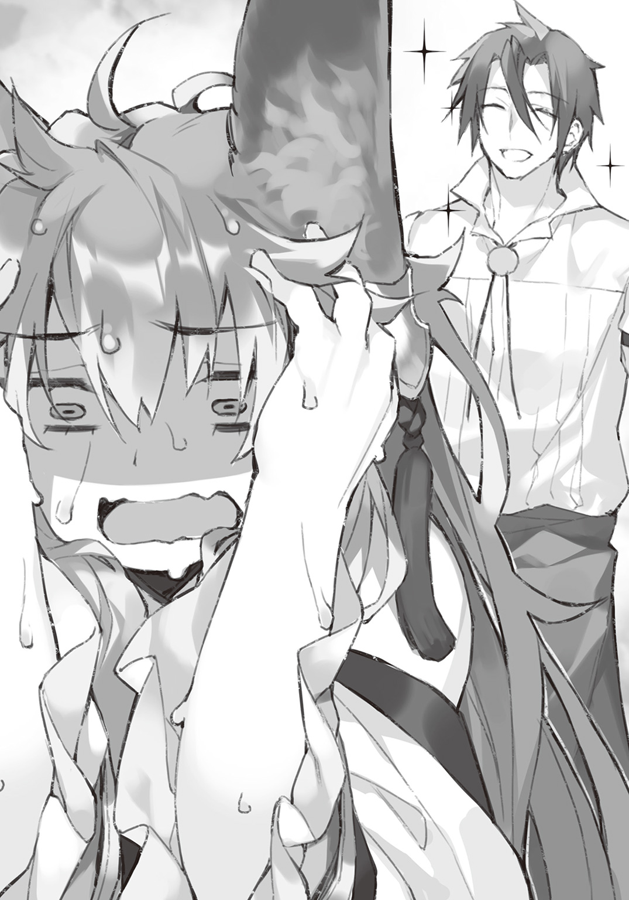
「なるほど、その経験のお陰で、今の素晴らしい修行が生まれたんですね」
「しかし、わらわは気付いた。大事なのは効果や効率ではない。一人の者を長く鍛え続け、ある程度の才能の持ち主ならば誰でもモノになるような『汎用性』が必要なんじゃ。あまり追いこみすぎると死人が出るでな。そのあたり、わらわは最近とても気をつけておったぞ」
「ああ、だからあなたの育てた『アレクサンダーたち』は一番から三十五番まで全員生存していたんですね」
「うむ......全員貴様に再教育されてしもうたが......」
「なるほど。たしかに修行中に死んでしまっては意味がない。それはよくわかります」
「じゃろう」
「なので、俺の修行ではセーブをします」
「............そうじゃな」
「だから安心ですよ。死ぬまでやっても死にません」
「..................そうじゃな」
はい。
状況がどんどん詰まれていく。
『月光』は逃げ場を探して周囲を見回した。
ロレッタは目を逸らした。
ヨミと目が合った。
『月光』は居住まいを正して、ヨミの目をしっかり見て、口を開く。
「ヨミ」
「はい」
「貴様には悪いことをした。わらわは『はいいろ』の願いを叶えたが、その結果両親を、少なくとも確実に片親を失うことになる貴様のことは全然まったく考えてもおらんかった」
「はい」
「今は大事な目標が目前ゆえ、そちらを優先するが、目標さえ達成できたならば、貴様への償いに残る人生を費やしてもいい」
「はい」
「じゃから、どうか、目標達成までにわらわの精神がもつよう、アレクになんか言ってやってはくれんかのう......？」
「いや、うーん......ええっと......どう言ったらいいかなあ......」
「頼む......頼む......」
「端的に言うと、ぼくはこの人を止められないんだよね......」
「............」
「だから、がんばって。同情はしてあげるから」
同情なんかいらなかった。そんなものもらったところで、パン一つ買えない。
どうやら、救いはないらしい。
『月光』は静かに状況を受け入れる。
この落ち着いた気持ちには覚えがあった。
そうだ――たしか、三回目の死亡時。
とある地方貴族に取り入ろうとして、『尻尾が多くて無気味』という理由で焼かれた。
その時、はりつけ台の上でこんな気持ちだったなと、『月光』は回想する。
「行きますか」
アレクが言う。
『月光』は静かなまなざしで彼を見た。
理解する。手の者から修行内容についての報告があがってこなかった理由がわかった。
アレクの修行――それを目撃したところで、処刑にしか見えないだろうなと。
そういう真実を静かに嚙みしめた。
○
「お陰でＳＴＲも伸びましたが、初心者に『ロープを登り切るまで修行は終わらない』とするのは少々ハードルが高そうですね。ですが耐久力の伸び自体はすさまじい......いや、勉強になりました」
『月光』の修行にまる一日かけたあと、アレクはそのように結論した。
場所は王都南に位置する、絶壁である。
このあたりは五百年前の『アレクサンダー大王』の冒険においても軽く下をのぞきこんだだけであり、その下、あるいはその向こう側になにがあるのか、詳しくはわかっていない。
何度か落ちたが、落ちきる前に絶命したので、今も詳しくはわからない。
さて、冗談でも比喩でもなく、まる一日かかった。
開始はだいたい昼ごろだったから、今は翌日の昼ということになる。
『月光』はロード地点でうつぶせになって倒れこんでいた。
つらい。
年長者の矜持、親の矜持――そういうものがあって、情けない姿だけはさらすまいと思っていたのだけれど、無理だった。
「わらわへの復讐でやっとるんじゃなかろうな......？」
「復讐でこんな親切を？」
「親切とはなんじゃ」
「哲学的な質問ですね」
「違うわ！ なにを指して貴様は『親切』と述べたのか、それを聞いておるんじゃ！」
「いや、文脈的に『全力で修行をつけること』以外ないかと......」
顔を上げた『月光』が見たもの――それは、『なにを言ってるんだろうこの人』という表情で首をかしげるアレクだった。
確信する。
この男は本当に心から『人の足にロープをくくりつけ断崖に吊るし、人を鎖分銅のように振り回して岩壁に叩きつけたのち、気まぐれにロープを切って底の見えない奈落に叩き落とすこと』を『親切』と表現している。
『月光』も自分がたいがいおかしい生き物である自覚はあるが、これほどではないという自負がある。
言い知れない感覚のズレを感じた。
彼はどうしてこんなに歪んでしまったのだろう......
「では、次の修行に移りましょうか」
アレクがそんなことを言いながら、すぐそばにある大きな包みを見る。
その成人男性が三人は入りそうな非現実的な包みは、先ほどからまがまがしい気配を放っていた。
たとえるならば魔物千体斬りの刃などが、この包みのように血と死の臭気を放つだろう。
できるならば触れずにすませたかった。
というか休みさえないのか。
『月光』は様々な不安や不満を覚えながら、たずねる。
「その包みの中身はなんじゃ」
「これは豆です」
「豆？」
「俺の修行は基本的に命以外のリソースを使用しないのですが、この修行では珍しく補助器具みたいなものを使います。それが、この、俺が心をこめて炒り続けた、炒り豆です」
「貴様の修行は意図を聞けばうなずけないでもないのじゃが、方法だけ聞くと意味がまったく不明じゃな。詳しい内容を説明せい」
「では。今回の修行ではＨＰを伸ばします」
「英雄アレクサンダーもそのような概念をよく口にしておったな。生命力とか、体力とか、そういうものじゃな」
「はい。それらは『食事によって増える』のです。ですから、ＨＰというのは、冒険者でなくとも高い者が多い。逆説的に、冒険者にも一般市民程度のＨＰしかない者は非常に多いというわけですね」
「ふむ」
「差が出にくく、鍛えにくい数値ですが、ここにも俺の見出した法則が適用されます。つまるところ『死ぬ気でやればよく伸びる』」
「......なんじゃろうなあ......なんじゃろうなあ......なんか尻尾がざわざわするのう......」
「つまり、『死ぬ気で豆を食べ続けること』が今回の修行になります」
「ちなみに食材に『豆』を選択した理由はなんじゃ？」
「色々試した結果、同じ修行を同じ期間行った場合、一番多くＨＰが伸びたのが『炒り豆』だったのです」
「なるほど。ならば食材については特にわらわから言うことはないが......」
「改善案があるんですか？」
「......いや、ないな。うむ、なにもない」
本当はいくつか思いつくことがあった。
しかしここでそのアイディアを出したら、それはそのまま自分に跳ね返ってくるのだ。
修行の効率化はいいことであり、『月光』はたしかに早く修行を完了できるならその方がいいと思っている。
だが、『自分が受ける』という前提で考えれば、効率ばかりを追い求めるのはいかがなものかと、そういう自己防衛の本能が働くのだ。
だから今回、『月光』は意見を出さないと固く決めていた。
そのはずなのだけれど――アレクが小さくため息をつく。
偶然視線を向けていなければ気付けないような小さな仕草に『月光』はめざとく反応した。
「......どうしたアレク、ため息なんぞついて」
「いえ......その......個人的なことですので......」
「かまわんから言え」
「では。俺はこう見えて、自分磨きが趣味みたいなところがありますので。ステータスは伸ばせるだけ伸ばしたいし、技能は習得できるだけ習得したいと、そう思っていました。戦い方を考えたり、トライ＆エラーなんかも大好きです」
「......それがなんじゃ」
「自力でできることは、だいたいしてきたつもりでいます。しかし、鍛冶などの特殊技能だったり、あるいはそもそも『これ以上がある』と発想できないものなんかは伸ばすことができず、宿屋経営をはじめてから今まで、長い停滞人生を送ってきました。宿屋を経営してから新しく覚えた技能は、ロレッタさんの居合いぐらいでしょうか」
「......」
「そんな風にこごっていた俺の人生に、あなたが新しい風を吹きこませてくれたのが、昨日のことです。最高に効率的に仕上げたはずの俺の修行に、よりよい可能性があった。蒙が啓ける感覚とはこれか、と感動さえ覚えたものでした。――きっとこれからの修行も有益なご意見をいただけると思ったのです」
「........................」
「が、現実はそう甘くなかったなと思い知った次第です。......すみません。愚痴や文句みたいなことを」
『月光』は充分にわかっていた。
ここで『改善案はある！』とつい言いそうになるのは、よくないことだ。
なにも自ら苦難の道に足を踏み入れることはない。
色々あった五百年だった。
カグヤが死に、その体に入った。――否、その体で、生まれた。
なんとなくアレクサンダーやイーリィと行動をともにしていた。
その期間、まあ、出自からしてしょうがないとも言えるが、『勇者パーティーのメンバー』からはあまりよく思われていなかった。
針のむしろのような時代。
そのうちパーティーは解散し、多くの人々が寿命で死んでいったはずだ。
死ねないことがわかり、半狂乱になったアレクサンダーの介護だってつらかった。
それでも彼の元を離れなかったのは、体に残ったカグヤの残滓が、彼のためになりたいと叫んでいた――とでも言おうか。
意思や思考ではなく、前提。『自分はアレクサンダーのためにならねばならぬ』という逆らえないほど強い、けれど『月光』自身にはどうしてそう思うのかすらわからない気持ちだけが、この肉体の根底にあり。
それは、肉体を変えても魂に残る、強すぎる想い――存在意義そのものだった。
だからつらくても、我慢して、アレクサンダーを殺す方法を探し続けた。
そも、人生とはつらいものだ。
長い時を生きて、つらさに耐え続けた。
だからこそ、今、多少アレクサンダーを殺すのが遅くなろうとも、目的を達成することに変更はないし、苦難を避けて通ったっていいはずだ。
『月光』はそのように思考して――
「改善案はある」
口から飛び出そうとする言葉を止められなかった。
そういえば、いつもこんな風になるな、と『月光』は力なく苦笑した。
ようするに――必要とされることに慣れていない。求められる嬉しさに耐えきれない。
そういう生き物なのだと、自分を定義せざるを得なくて――自分という存在のむなしさに、涙が出そうになった。
自分の意見を必要と言った彼――アレクは、首をかしげる。
「改善案があるんですか？ でも、さっきはなにもないと......」
「うっ、くっ、あるっ......！ 改善案は......ある、のだ......！」
「なんで泣きながら言うんですか......」
「自分で自分が嫌になったんじゃ！ 改善案はある！ よく聞け！」
「はあ、ハンカチをどうぞ」
「ありがとう！ ......よいか、今の修行もそうじゃが、おそらく貴様の修行全体に決定的に欠けているものがある！」
「ほう」
「それは『目的意識』じゃ！」
「目的意識？」
「貴様は目的をわかっておるから『なにをするか』しか言わん。じゃが、普通、目的もわからず修行をしたところで、修行させられている方は意味がわからんから、命懸けであろうが心の中に曖昧な部分は残る！」
「......『豆を食べろ』と俺がもし言われたら、『それをすれば実績トロフィーもらえるんだな』って思って、特に深く考えずやりますけど」
「そのよくわからん思考ができるのは廃人じゃ！ 人らしい心の機能が壊れておる！」
「ええっ!? そうなんですか!? だってみなさん、やってくださいますよ!?」
「それは貴様が意味不明で恐ろしいからじゃ！ たしかに、今までのやり方でも、やりさえすれば効果は出るじゃろう。けれど、意味がわかって死ぬ気になるのと、意味もわからず死ぬ気になるのとでは、『死ぬ気』の深みが違う！」
「......ええと」
「背後に恋人を守ってモンスターの前に立ちふさがるのと、背後になにもないのにモンスターの前に立ちふさがるのとでは、やる気に違いが出るであろう」
「......ああ、なるほど」
「じゃからの、修行の際には目的を示してやるのじゃ！」
「ですが今までも『この修行にはどんな意味が？』と聞き返されることが多かったので、そのたびに『ＨＰが伸びます』と答えてはきましたよ」
「普通の者が『ＨＰ』とか言われて意味がわかるか！ この、たわけ！」
「......でもみなさん、それ以上聞いてきませんでしたけど」
「意味がわからなさすぎて理解することを放棄しただけじゃ！」
「なんだと......」
アレクが表情に驚愕をにじませていた。
『月光』は叫びすぎて荒くなった息を整える。
「そこで......わらわが思う『豆を食べる修行』の改善点は『得を示すこと』『成功したら褒美を与えること』じゃ！」
「......なるほど......非常に勉強になりました。それで、あなたの場合はどうしましょうか？」
「わらわか......わらわの場合は........................感謝の言葉でいい」
「......感謝の言葉？」
「わらわのお陰で効率のいい修行ができたと、そのように貴様がわらわを必要としていることを明確に示すのならば、それだけでいい」
「......ずいぶん安い褒美ですけど、そんな程度でいいんですか？」
「うるさいわ......この程度でいいのかというのは、自分が一番自分に問いたい......」
『月光』は力なく笑う。
安いのは、本当にまったくもってその通り――ようするに生きてきた環境の違いだ。
長い時間を人から必要とされず、終わりの見えない目標に捧げ続けたこの身は、悪意や無関心以外の、『正の感情』に非常に弱いのだと。
そういう安い自分を今さら発見して、『月光』はもう一度深く深くため息をついた。
○
自分で考案しておいてなんだが、改良された修行の効果は絶大だった。
「あきらめたいのに......あきらめさせてくれない......」
小さな目標。ささやかな褒美。
それは修行で心がくじけそうになるたびに、心を奮い立たせてくれてしまった。
強い想いは生存本能を凌駕する。
人は未来の褒美を想って、今、限界を超えることができてしまうのだ。
「何度も『もう充分じゃろ』と思ったのに、手を止めようとするたびに......目標が......褒美が......もう嫌じゃ......願いなんぞ抱きたくない......夢なんぞ見ていても苦しいだけじゃ......」
夜。
半日かけて豆を食べ尽くした『月光』は、ぐったりと倒れこんでいた。
冷えた地面が心地よい。
そばには風呂敷包みと、ぼんやり光るセーブポイントがあった。
包みにはまだなにか入っている。
その横で微笑むアレクの姿は、『月光』の目に亡霊めいて映った。
浮かべる笑顔は生者を巧妙にあの世へひきずりこむ悪鬼の微笑だ。
いや、あの世に引きずりこむというか――あの世とこの世のはざまで、出たり入ったりさせられている感じというか。
自分の生命がよく跳ねるボールも同然に扱われている気がする。
死者と生者を行ったり来たり。命が出たり、入ったり。
「......褒美をはよ......わらわに......生の実感を......」
「ああ、そうでしたね。『目的をはっきりさせる』というノウハウはあらゆる修行に広く応用できそうです。ありがとうございます。俺一人ではたどりつけない、新しい発見でした」
「うむ......」
褒美が安いなあ、と『月光』は思う。
しかし、安いものだって、悪いものではない。
その『安いもの』さえ、今まで満足に与えられなかった人生だったのだから。
「......わらわの人生、報われておらんのう......思い返せば嫌われ役ばっかりじゃ......」
「こうしてあなたとまともな会話をして思うことなんですが、あなたはチョロくて尽くすタイプですよね......」
「わらわは、貴様とまともな会話をできた感触がないのじゃが......言われてみればその通りじゃな。ぐうの音も出ぬわ。アレクサンダーに尽くし、『はいいろ』に尽くし......しかもアレクサンダーはだんだんおかしくなるし......」
「......そんな人を一人で放置してきて大丈夫なんですか？」
もっともな質問だった。
たしかに、英雄と称される力の持ち主が、精神に異常をきたした状態で王宮の中にいるというのは心配に値するだろう。
しかし、『月光』はうなずく。
「最近はずっと脳を取り除いておるでな。まだ動けんじゃろう」
「......脳を取り除くって......それを『死んでいる状態だ』と判断する人も、少なからずいそうですが」
「その程度でよいならば五百年前に殺せておるわ」
「しかし、それでは自己再生しないアレクサンダーさんは、もう動けないのでは？」
「実のところ、再生はする。遅いがの」
『月光』は語る。
これは、五百年前――イーリィの生きていた時代には、観測しえなかった事実だった。
「失った腕がいきなり生えたりとか、そういうのはせん。ただ、どのような傷や欠損であろうが、普通の人が切り傷を負った際にいずれふさがるのと同様、治る」
「そんな特異性がなぜ五百年前は明らかにならなかったので？」
「イーリィがいつもそばにおった。アレクサンダーが機能を停止するほどの欠損、イーリィが放置せぬわ」
「......なるほど。しかし......脳の喪失であっても本当に治るので？」
「そうじゃな。もっとも、再生すべき部位が大きいほど時間はかかる。脳の欠損が『ふさがる』までは......おおよそ半年じゃな」
「......脳が生えてくるというのは、すさまじいですね。記憶障害などは......」
「不思議と、なさそうじゃ。まあ最近は混乱してずっと同じことしか言わんでな。判断は難しいところじゃが......最初期、かなり正確に、自分が動けんかった時のことも把握しておった」
「......肉体が壊れていても、意識は動いているのか。......『プレイヤー視点』かな」
「なんじゃと？」
「いえ。ともあれすさまじい五百年でしたね」
「......わらわが『アレクサンダー殺し』の活動を始めてからは、四百年と少しじゃがのう。脳を取り除いても治ることに気付けたのは偶然じゃったが......げにすさまじきはアレクサンダーという存在よ。あんなモノ、本当に殺せるのか？」
「大丈夫ですよ。これから始める修行を終えて、『十割殺し』を習得すればね」
アレクが言う。
『月光』は息をつく。
「ようやくか。まさか基礎からやらされるとは思わなんだ」
「まあ、そのお陰でわかったことがあります」
「なんじゃ？」
「あなたすごく弱いです。あらゆるステータスが全然伸びません」
あんまりにも淡々と言われたせいで、聞き逃しかける。
しかし、どうやら、とてもひどいことを言われたようだと理解できた。
「......ま、まあ......カグヤの体は、かつてアレクサンダーたちと旅をしていた時分も、大して鍛えられとらんかったからのう。わらわの方は、そこまで『戦い』に明け暮れてはおらんし」
「いえ、どう過ごしたかとかは関係なくてですね。ステータスの伸び率が純粋に悪い。適性ごとに『戦士』とか『魔術師』とか呼び分けるのだとすれば、あなたは......」
「......」
「............『市民』？」
「市民!?」
「つまり、戦闘ユニットではないと思われます。生きた年数と数奇な環境のお陰で、それなりのものにはなっていますが、それだって、普通の人が普通に二十年も努力すれば手に入る程度のステータスでしかないですね」
「............」
「スキルも特筆すべきものが『憑依』しか見当たらない。魔術師系の技能をそこそこ習得しているご様子ですが、なんか別に『これ』というほどのものもなく......あなたがタクティカルシミュレーションのユニットだとしたら、愛がないと使用はキツいですね」
意味はわからないが、とにかく弱いと言われているのはわかった。
まあ長い時間をかけても一つの目標すら達成できない身だし、才能や実力がないという指摘は甘んじて受け入れるべきなのかもしれないが......
なんか悔しい。
「し、しかしじゃな......わらわの『憑依』はどうじゃ？ これはアレクサンダーに曰く『チートスキル』じゃぞ？ 強いんじゃろ？」
「その『憑依』でアレクサンダーさんは殺せましたか？」
「..............................」
「試してはいるご様子ですが、まあ、それが答えですかね......あ、でも、『生き残り続けることができる』というのは、ゲーム的には役立たずでも、ゲームならぬ世界ではすごいことだと思いますよ。だって『不死』の能力は基本的に存在しないんですから。ね、すごい」
アレクがフォローにまわった。
そこまでひどいのか、と『月光』は笑う。
「............それで............市民のわらわに、『十割殺し』は習得できるのか............」
「それはぬかりなく。ステータスが低いなら伸ばせばいいのです」
「しかし伸びぬのじゃろ？」
「すごく『伸びにくい』だけで、まったく伸びないわけではありません。そもそも、才能がないけれど到達したい目標がある時、人がする行動は決まっていますよね」
「......なんじゃ？」
「努力」
「..................いや、あきらめるという手段もあるじゃろ」
「あきらめますか？」
「......あきらめたりは、せんが......」
あきらめないが、心は折れそうだった。
『月光』は光のない目でアレクを見て、かすれた声で言う。
「わらわはなにを努力すればよいのじゃ......」
「そうですねえ。『十割殺し』は状態異常の一種なので、相手のＲＥＳよりこちらのＩＮＴが高ければ高いほど入りやすくなります」
「......つまり？」
「魔法威力を伸ばしましょう」
「どうやって」
「俺に有効打を与える修行ですね」
それが簡単なのかどうなのか、『月光』にはもはやよくわからない。
でも『アレクの修行』という時点で無茶なものだろうなということは予想できた。
「ただちょっと遠出する用事がありますので、旅をしながらになります」
アレクは言う。
『月光』は首をかしげた。
「遠出、とは？ 王都ではできん修行でもあるのか？」
「そうですね。『十割殺し』の基礎理論を開発したのは、実は俺ではないので」
「......貴様以外にどんな頭の持ち主が、『十割殺し』などというおかしなものを考えだしたというんじゃ」
「心当たりありませんか？」
「ないわそんなもん......ん？ 待て。つまり――わらわに心当たりがあるような相手か？」
「そうですね。俺はあなたの人生の全部は知りませんが、最低でも一人、『十割殺し』を開発する理由があった人が、あなたの記憶にはあるはずだ」
アレクの口ぶり。
自分の――この肉体の『記憶』。
その中で――たしかに一人、いた。
......けれど、その意図がわからない。だって彼は――
「あやつは、アレクサンダーを『殺す価値もない』と見限ったはずじゃぞ」
「答えにたどりつきましたか。そうですね。でも、事実として、その方はアレクサンダーさんとたもとを分かったあと、『十割殺し』を開発すべく余生を捧げた。......ちなみにネーミングは俺がしております。彼の魔導書にはその技術の名前まではありませんでした」
アレクは笑う。
そして――
「きっと、基礎理論の開発者――サロモンさんが最後まで完成させていたならば、もっと格好いい名前をつけたことでしょうねえ」
遠くを見るように、視線をどこかへ向けた。
方角は北東。
「次の修行は『エルフの森』に向かいながら行います。目的地はその近くにある山頂の洞窟で――そこに、『十割殺し』の基礎をまとめた魔導書と、開発者であるサロモンさんの遺体が眠っているんですよ」
『月光』はようやく理解する。
どうやら、これから始まる旅路の果て――
そこには、意外な再会が待ち受けているらしい。
......果たしてサロモンが『月光』との対面を『再会』と思うかは、わからないけれど。
○
道中、修行は過酷だった。
『たった一撃を与える』ことの、なんと難しいことか。
というか火球が胸を直撃したのに服さえ焦げないというのはどうなっているのだろう。
しかもこの修行、困ったことに、定時になるとアレクが迫ってくる。
『夕刻の終わりから夜が明けるまで、俺はあなたを殺すつもりで、歩いて追いかけますので、あなたは俺が近付く前に一撃当ててください。なお、拳が届く距離になったら死にます』
最初に聞いた時は、親切かと思った。
だって、攻撃を当てる対象が自分の方から近付いてきてくれるのだ。
しかも歩いてだ。サービスでしかない。
ゆったり迫るアレクに、ゆっくり狙いを定めて、最大魔力の一撃を放つ。
この修行はそれだけで終わる。勝った――そう思っていた。
でも、全力でやっても服さえ焦がせない。
そこで『月光』は素早く戦法を切り替える。
逃げることにした。
だって無理だから。
アレクが迫ってくるのは『夜が明けるまで』という時間限定だ。
だから夜明けまで逃げ切れば、とりあえず延命できる。
しかも、相手は歩きなのだ。
走らない。勝った。
負けた。
徒歩なのになぜか追い詰められる。
どうにもアレクはエルフの森までの地形がすべて頭に入っているらしい。
逃げても逃げても、いつの間にか壁や大きな樹などに追い詰められ、あとがなくなる。
どうすれば逃げられるのか――そんな風に、逃げることばかり考えていた。
気取られる。
そして、アレクは言う。
『まさか逃げることばかりに頭を使われてしまうとは。目標を達成したいのでしたら、強くなるために立ち向かっていただかないと。しかし、あなたに逃げることを考えさせてしまう俺の方にも落ち度はありました。そこで、新しい条件を設けます』
やめてほしかった。
でも、アレクは条件を付け加える。
『夜明けまでに俺に有効打を与えられなかった場合、走ります』
死ね、というのに等しい宣言だった。
しかも、ただ殺すだけでは飽き足らないらしい。
アレクはついでのように、付け加えた。
『あと、走っている俺に捕まった場合、痛くします』
この言葉が出た時点で『月光』は素早く行動した。
命乞いをしたのである。
勝ち目がない時には頭を下げるに限る――これはアレクに曰く『市民』な自分が、様々な危機を乗り越えてきた知恵の一つである。
でも、通用しなかった。
『別に死にませんよ。セーブしたでしょう？』
どうやら彼は、なぜ命乞いされているか理解できないらしい。
さらに、こんなことまで言う。
『そもそも、あなたは少なくとも九度死んでいるはずだ。だというのに、なぜ今さら死が怖いのですか？』
死と復活。
このプロセスを繰り返してきたのは、なにもアレクだけではない。
回数では彼に劣るだろうが、『月光』とて何度も死んできた。
時には――たとえば『輝く灰色の狐団』を解散させる時などは、自ら覚悟し、己の命を冷酷に利用し、割り切った上で死んだことさえあったのだ。
あの時割り切れた命が、なぜ今は割り切れないのか？
その疑問に対し、『月光』は端的に答える。
「死ぬのが恐ろしいのではない！ 苦痛にまみれて死ぬのが恐ろしいんじゃ！」
首を落とされたことはある。
でも、一撃ですっぱり首を落とされると、苦痛はそれほどでもないのだ。
つまり――『痛くします』という発言が『月光』に死を、というか死に伴う苦痛を恐れさせるのだ。
アレクはなにかを考えこむ。
嫌な予感しかしない。
そして予感は的中した。
『なるほど。人を必死にさせるのは、褒美や得だけではなく、罰もなのですね』
なにか。
気付いてはいけない人が、気付いてはいけないことに気付いてしまった。
人はどれほど能力があろうとも、発想できないことは、できない。
アレクは発想力のある方ではなかった。
その彼に、自分が気付きを与えてしまったのだ。
『月光』は己の罪深さと、これから待ち受ける運命に震えた。涙すら浮かべた。
でも、一度きっかけを得てしまうと、気付きは止まらない。
アレクは暗闇の向こうにある深淵をのぞきこんでいる。
『......死にたくない、ではないのか。人が必死になった時にステータスが伸びやすいのは、死にたくないからではなく、生きたいからなのか。必死とはその実、覚悟ではなく希望なのか。つまり、死を前にしてそれでも生存をこいねがうことで人は実力以上の能力を発揮する、ということで......』
ぶつぶつと、なにかをつぶやき続ける。
『月光』的には、恐ろしい怪物のうなり声にも等しい。
『わかりました』
それは人が気付いてはいけないなにかに気付いた、人ならざる者の声だった。
『月光』はガチガチと歯が鳴るほど震える。
『生存、しましょう』
笑顔。
純粋な、新しい知識に喜ぶ好奇心旺盛な子供めいた表情。
『俺が、間違っていました。あなたに、気付かされました。もとよりお客様にほどこす修行は俺がやったものよりぬるめにしていますが、いたずらに難易度を下げすぎて効果まで下げてしまっていたようです。効率的にあなたの五百年を終わらせると言っておきながら申し訳ない』
彼は深く謝罪する。
でも、なにか違った。
謝るところはそこではない？
あるいは、謝るべきタイミングが今ではない？
わからない。
正体のわからない、言語化しようのない、果てしない違和感がどんどんふくらんでいく。
『何度も死に、時には自ら命を捨てることさえやってのけたあなたの生存意欲を引き出すのは並大抵のことではない。失念しておりました』
深々と頭を下げる。
隙だらけの姿勢。
だというのに、『月光』は魔法を撃ちこむことができない。
『思えば数日徹夜でゲームをしていて、ハイになった時、妙なカンが働いたりするものです。その時、間違いなく眠気と疲労で操作性は落ちているのに、妙にスコアがよかったりする。つまるところ、限界を超えた能力が発揮されているのでしょう』
わけがわからない。
わからなくて、怖い。
『これからは、あなたを殺すまで、ずっとあなたを追いかけることにします』
修行内容が更新される。
それは己が蒔いた種が、歪に花を咲かせる瞬間だった。
『最初は徒歩ですが、だんだん、速くします。あなたが俺に有効打を与えた時点で、修行は終わりというのは変わりませんが、ずっと追いかけ続けることにします。そして――』
彼は笑顔のままだ。
まったく普段と変わらない調子で続ける。
『俺があなたを捕らえられる距離まで近付いたら、次回以降のあなたが生存を強く望むようななにかを行います』
彼は告げる。
とっておきの秘密でも打ち明けるように。
『なにか、の内容は、その都度変えます。ただ、あなたがかつて、俺にしたことが参考になっているとだけ、申し上げておきましょうか』
かつてしたこと。
『説得』『交渉』――あらゆる痛みを、教えた。
『では、生き抜いてください』
一歩踏み出す。
『月光』は無駄だろうなと頭の片隅でひどく冷静に思いながら言う。
「もう少し、その、なんじゃ............軽めのやつは、ないかのう......？」
引きつりそうになる笑顔でたずねる。
その表情は卑屈なものに映るだろうか。
それでもいい、と思った。その程度で許されるなら、誇りも矜持もいらないとさえ、願った。
でも、彼は笑っただけだった。
許しの言葉は、なにも、ない。
なにも。
○
「罰を与えるというのは効果的でしたけど、逃げ回られなくなるように加減するのがなかなか難しいですねえ」
アレクは思案顔で述べる。
『月光』はアレクの肩にかつがれた状態で地面を見ていた。
その顔に生気はなく、その思考能力は大幅に落ちている――修行の後遺症である。
しかし、そんな今の『月光』でもわかることが一つだけあった。
修行を終えたこと。
......終えたと思う。
実際のところ、記憶はあいまいだった。必死すぎて自分がなにをしていたか覚えていない。
でも終えたに決まっていた。
仮に終えてなくても、そういうことでどうか一つお願いしたい。
「いや、終えてはいますよ。ステータスは伸びていますので」
「......わらわの心を読むでない」
「口に出てましたよ」
「頭の中身が口からこぼれておったのか......物理的に......」
「いえ、こぼれていたのは言葉だけですので、ご安心を」
そんな会話を交わしながら、アレクは山をさらにのぼっていく。
かなり険しい山道だったのだが、彼の歩調は平地を歩いているかのようだ。
ただし、多少揺れる。
アレクの強靱な脚力と、足音も気配もない歩法でさえ、揺れる。
その事実が現在歩んでいる道のすさまじさを伝えてくるかのようだった。
「......サロモンのやつは、本当にこんな場所におるのか？」
回復してきた『月光』はたずねる。
たしか、サロモンの遺体があるのは、エルフの森近くの山のいただき付近だという話だ。
しかしこれはちょっといただきすぎではなかろうか。
周囲には風雪が吹き荒び、視界がまったく利かない。
息をいくら吸ってもまったく呼吸している気がしない。
きっと、この場所の高度がかなりのものなのだと、『月光』は経験から判断する。
というか景色は見るからに寒そうだ。
こんな環境でうかつに呼吸なんかしたら、体が凍りそうである。
それでも無事なのは――やはり、アレクがなにかしているからだろうか。
「サロモンさんは、邪魔が入るのを嫌ったようですね」
アレクはしばししてから、質問に答えた。
彼をしても、この雪中行は集中力が必要らしい。
『月光』は黙ることにした。
ここでアレクに迷われたら、自分まで死ぬことになりかねない。
目標達成直前に雪山で遭難するなどというのは、やりきれなさすぎる。
少しすると、吹雪がおさまってくる。
......というか、どこか洞窟のような場所に入ったらしい。
アレクは『月光』を肩からおろすことなく進んでいく。
そして――
「到着です」
という声とともに、ようやく体が地面におろされた。
目に飛びこんできた景色に、一瞬言葉を失う。
「......こんな雪山の中に、森、じゃと......？」
そこには木々が生い茂っていた。
内部の温度は多少涼しいものの、生命を維持するのに問題ない温度だ。
呼吸すると、先ほどよりも息苦しくないことに気付く。
外と比べて空気が濃いのだ。
そうだ、外がある。
つまるところ、ここには壁があり、天井があり、『中』と呼べる空間だ。
岩壁も天井も、薄い緑色の光を放つ物体でできている。
鉱石や魔石のたぐいとはなにか違うように感じられる。
強いてたとえるならば、宝石のような、しかし宝石とも少し違う材質の岩肌だ。
「さっそくで申し訳ありませんが、セーブをお願いします」
森に見とれ、足元に敷かれた土におどろいていると、アレクがセーブポイントを出す。
『月光』は今までの経験から『セーブする』イコール『殺される』と学習していたのでためらったが、ためらったところでどうしようもない。
「......『セーブする』。なんじゃ、性急じゃな」
「申し訳ありません。ですが、早めにセーブしないと命にかかわるもので。ああ、俺もいちおう『セーブします』」
「セーブしたら命にかかわる、ではなく、セーブしないと、命にかかわるのか？」
「......普通、セーブという行為自体に命にかかわるような危険はありませんけど」
「よい。貴様に言っても詮無いことじゃった......で？」
「ここの洞窟......おそらくもともとダンジョンだった場所は、いるだけで魔力を吸収されますから」
「......『魔術師殺しの洞窟』と同じか？」
「さすが、ご存じでしたか」
「貴様の制覇したというダンジョンは調査し、近場に行くのを避けておったからな。貴様が修行に使用する可能性が高そうで、鉢合わせしそうじゃしのう」
「なるほど。ちなみに、ここは『魔術師殺しの洞窟』と比べ、もう少し凶悪な吸収量となっています。どのようにこの洞窟の特性に気付いたかは知りませんが......だからこそ『魔力無限』の人にとっては、邪魔されない、都合のいい修行場所だったのでしょう」
「......サロモンか」
「はい。......進みましょう。今のあなたは魔法威力に伴い魔力も上がっているとはいえ、そう長くは生存できない。生きているうちに話を終えてしまいたいのでね」
不穏なことを言いつつ、アレクが森の奥へと踏み入っていく。
『月光』は嫌な顔をしながらも、ついていくしかないのでついていく。
意外と早く、アレクは足を止めた。
その場所は林立する木々の隙間、森の中にあって根や幹にふさがれていない、少し広めの空間だった。
ぽっかりとあいた木々の中央に、一つの巨大な樹が存在した。
その根元には、なにかが座っている。
それは――本を抱えた人骨だった。
「............」
今さら人骨程度を恐れる『月光』ではない。
けれど、総身が震えるのを感じた。
骨が怖いわけではない。
これまでの話から、その白骨死体が誰のものか、想像がついたからだ。
「......まさか、サロモン、なのか」
「その可能性は非常に高いかと。......彼が抱えた本の表紙をごらんください」
言われるがまま、近付く。
すると、そこには、このようなことが記されていた。
『我が強敵へ捧ぐ』
その文字を見た瞬間、『月光』はよろめいた。
そして、こみあげる感情に、口元をおさえる。
「......こやつは、なにをやっておるんじゃ」
感情は複雑だった。
しかし、主なものは恐怖だ。
「まさか......まさか、アレクサンダーを見限ったと言い、エルフたちとともに森にこもってから、ずっとここで、アレクサンダーを殺す方法を研究していたのではあるまいな......？」
「その可能性は高そうですね。抱えた一冊は『完成品』......まあ基礎理論だけですが......生涯の研究成果であり、そこらの土をよく調べると、研究途中のメモ書きらしきものが大量に見つかりました。まあ、もう朽ちていて内容の判別は困難でしたが」
「......馬鹿かこやつは」
吐き気がする。
そうだ、気持ち悪いのだ。
サロモンが変わり者であったことを『月光』は知っているつもりだった。
カグヤの記憶の中にいるサロモンは、いつでも黙っており、口を開けばわけのわからないことばかり言い、闘いになると目を輝かせるような、そういう男だ。
普通ではないことを、知っていた。
でもこれは、予想外だった。
「......英雄となれたじゃろうに。人々の最前線でモンスターを駆逐してまわり、今の人間の王都を確保したうちの一人じゃ。旅を終えればもっと幸福な暮らしができたじゃろう？ だというのになぜ、こんな、いつ終わるとも知れない研究をした......？」
「......」
「平穏はいらんのか？ 休息したいと思わんのか？ ......わからん。こんな、永遠に続くような苦行など、わらわのようななにもない存在以外、進んでする理由はなかろうに......」
「まあ、それを言ったら、あなただって進んでする理由はないと思いますけどね。今は知りませんけど、まともだった当時のアレクサンダーさんは、あなたを永遠に縛り付けることを望んでいたわけではないでしょう？」
「............しかし、こやつには『他』があった。仲間がおった。武勇伝があった。わらわのようになにも知らんかったわけではなかろう。もっと楽をすることは、絶対にできたはずじゃ」
「そうですねえ。俺も最初、英雄ともなればそういう暮らしを望むものだと考えた」
「......」
「だから、サロモンさんが研究をしていた動機を、『月光がなんらかの方法でアレクサンダーさんか他の仲間を殺したので、その復讐のため』だと考えていましたが......」
「......なぜそうなる」
「いえ、サロモンさんの研究はあきらかに不死者を殺そうとするものであり、俺の知っていた『五百年前からの生存者』はあなただけでしたからね。それに、『生涯全てを費やす研究』の動機が『親友の復讐』というのは適切に思えるでしょう？」
「......そうじゃな」
「ですが、甘かった。サロモンさんを一般的な価値観の持ち主だと思っていた俺のミスです」
「では、貴様はどのように考える？ なぜ、サロモンは、見限ったアレクサンダーのために生涯を賭して研究を続けたと？」
「楽しかったからでは？」
「............は？」
絶句する。
英雄となった男が、このような寂しい死に様につながる行為を楽しんでいた？
意味がわからない。だから――理由が気になった。
かつての英雄と同じような、常人離れした思考回路を持つアレクの思う、理由が。
「......説明せい」
「思ったことを口に出しただけで恐縮なんですが......義務でもなく、他にやることもあって、それでもやってしまうことは、だいたい『楽しいこと』だけでしょう？」
「......馬鹿な。なんの結果も出せておらんではないか」
「結果は重要でしょうか？」
「............それを、貴様が言うか」
「もちろん、俺は結果に効率よくたどり着くよう修行などをしています。しかし、世の中みんなが俺みたいというわけではないでしょう？」
「そりゃそうじゃが」
「あなたのお話に出てきた過去の英雄は、みんな『結果』を求めてはいなかったように聞こえました。過程を楽しむ人々の集まり――そう、俺の耳にはとどきましたよ」
「......では、なにか。一度は見限ったアレクサンダー殺しの方法開発を......終わりの見えぬ、そもそも終わることがあるかもわからん苦行を、サロモンは楽しんでおったのか？」
「推測ですけどね。少なくとも、彼が抱えている本に『後悔』を示すような記述はない。というか研究成果以外が書かれていない。お陰でアレクサンダーさんが不死身であることは、ここを発見していても、あなたに聞くまでわからなかった」
「......」
「しかし、あなたの話に出てきた事実と、サロモンさんの性格から考えて、楽しんで『アレクサンダー殺し』の方法を研究していたのではないかと、俺は想像しました。だって、時間との闘争ですよ？ 彼にとっては楽しいことなのでしょう？」
解説めいたことをされても『月光』にはわからなかった。
だが、アレクの口調は生前の英雄たちと話してさえいないはずなのに、どこか確信に満ちている。
......きっと、彼にはなにか、感じるものがあるのだ。
だって、過去の英雄と同じく、アレクもまた『変わり者』だから。凡人には――ただ生存を繰り返すだけの『月光』のような者にはわからない感覚があるのだろう。
だから、『月光』は笑う。......笑うしかなかった。
「......なんじゃあ......それでは、わらわが使命として、唯一の目標として四百年以上を費やしても入り口にさえたどり着けなかったものに、サロモンは趣味で、長く見積もってもせいぜい二、三百年でたどり着いたということになるではないか」
「エルフの寿命から考えればそうでしょうねえ。まあ、アレクサンダーさんから離れた当初のサロモンさんの年齢にもよりますが」
「............裏目じゃのう。サロモンがこうしているとわかれば、たずねることもできたじゃろうに。......他を巻きこまんよう一人でやろうとして、失敗したわ。カグヤと同じ蹉跌を踏んでおるな」
「......」
「はは......わらわの四百年は、無駄な道ばかりじゃったか。出自は特異なれど、能力は平凡じゃからな。いや、平凡以下、か。『市民』じゃからのう」
情けなくて、乾いた笑いしか出てこない。
力が抜けて膝から崩れ落ちる。
「............なぜ、わらわなんじゃ」
それは――
今まで思ってはいたけれど、決して口に出すことのなかった言葉だった。
「......わらわよりふさわしい、才能ある者は、いくらでもおったじゃろう。なぜ、わらわなんじゃ。なぜ、わらわは普通に赤子として生まれ、普通に人として死ぬような、平凡な――『市民』のような運命に生まれつかんかった」
「............」
「天はなぜ、わらわをカグヤの死体におろした。なぜ、『憑依』などという力を与えた。なぜ不死で苦しむアレクサンダーのそばに置いた。わらわでなければ、わらわでさえ、なかったならば、きっと――」
――もっと早くにアレクサンダーを救ってやれたのに。
『月光』は感情の死んだ顔で、地面をながめる。
ぽたり、ぽたり、となにかがしたたる。......それは涙だった。
「サロモンにあと百年寿命があったならば、やつがアレクサンダーを殺したじゃろうな」
「そうでしょうねえ。まあ、時系列的にサロモンさんがアレクサンダーさんの不死を知っていたかは微妙ですが。あくまでも趣味での研究ではないかと」
「ふん......そういう気質がわらわにないことも含め、神はどうやら、アレクサンダーのことが嫌いらしい。わらわの存在は、やつに対する嫌がらせでしかなかったようじゃな」
「そうかもしれませんね」
「............」
「それで、どうされます？」
「......どう、とは」
「あなたの一生をアレクサンダーさんへの『嫌がらせ』のまま続けるか、それとも『救い』にするか、あなたが決めてください」
「............」
「あなたはことのほか時間効率を求めるお方だったようで、『長くかかった』とかそういうことを気にしておいでですが、そんなのはぶっちゃけどうでもいいかと思いますよ」
「......気休めか。効率以外を気にもとめん貴様が、効率などどうでもいい、などと」
「いえ、俺は効率を上げるのが趣味ですので、あんまり効率悪いのは苦手ですね」
「......では、思ってもいないことは、言うな。気休めなど、余計に......」
「『アレクサンダー殺しＲＴＡ』はあなたしか走っていません」
「............は？」
「『アレクサンダー殺し』は、世界で唯一、あなただけが挑んでいることだ。効率の良し悪しは比較することでしか導けません。主観的に『なんとなく遅そう』『なんとなく早そう』と判断することは可能ですが、世界で一人が一回しか挑戦できない以上、他の走者と比べることはできないのです。――だから、このままあきらめたら、あなたの費やした時間はたしかに無駄です。でも、成功させたなら、それは世界最速最高効率だ。だって、世界で唯一の完走者なのだから」
「............」
「さあ、この洞窟はただいるだけであなたの魔力を吸収していく。あなたが今すべきことは、サロモンさんが遺した魔導書を読み、その理論を実践し、習得していくことですよ。無駄な時間を嫌うならば、今そうやってうつむいている時間が無駄です」
「............はっ」
「ああ、ちなみに、本を外に持ち出すことはおすすめしませんよ。たぶんサロモンさんの仕掛けでしょうが、少々面倒くさいことになる。少なくとも、俺は持ち出そうとは思いません」
「......」
「注釈はこんなところでしょうか。質問がなければ、基礎理論を覚える作業に入っていただいて――すぐにでも、『十割殺し』を伝授しましょうか。『一割』からね」
アレクは笑顔のまま言う。
......途中、ひょっとして励まされているのかなとも思ったが、どうやら違うらしい。
彼は変わらない。ただ修行をつけるだけだ。
「......もうちっと、親を労ったりは、できんのか」
「不器用なものでね。噓は苦手ですし」
「......やはり、貴様の育て方を間違えたらしいのう」
「あなたに育ててもらった記憶はありません」
「そうじゃったな。こんなもの、育てられん」
親を知らない――普通でない生まれ方をした自分では、子供の育て方などわからない。
......そもそも自分は、今まで大人ではなかったように思う。
子供だった自分がようやく今、成長を始めたように『月光』は思う。
「......殺すぞ、アレクサンダーを」
『月光』は立ち上がる。
目の端の涙を、手の甲でぬぐった。
「思えば、アレクサンダーとも不思議な関係じゃった。わらわに強く影響を与えるアレクサンダーとカグヤは、ひょっとしたらわらわの親のようなものなのかもしれん」
「......」
「ならば、超えねばな」
「......」
「子は親を超えるものじゃ。そうじゃろう？」
「そうですね」
アレクは笑う。
『月光』も不敵に笑った。
そうして、最後の修行が始まる。
英雄の死は近い――『月光』はそんな確信を覚えていた。
○
王都に戻るのは、実に久しぶりのように感じた。
『銀の狐亭』、裏庭。
夕方の明かりが差しこむ時間帯、『月光』は用意された湯船につかっていた。
アレクはいない。王都に帰って早々、王城にアレクサンダーの様子を見に行った。
隠し部屋の場所は教えてある。
そして――そろそろ、アレクサンダーが目覚めるころだとも。
アレクを一人送り出すことに不安がないでもなかった。
もちろん、我が子ながら人の子とは思えないアレクの能力についてはよく知っている。たとえ目の前にいたって気付かれないまま観察を終えることだろう。
しかし、アレクサンダーもまた、規格外の化け物だ。
なぜ強いかさっぱりわからない。
不死身だからというのはたしかに大きな理由だが、振っただけで剣を折る腕力や、強敵相手に見せる異常な胆力、それに魔法こそ使えないものの、聖剣をいつまでも長いまま維持する魔力など、底が見えない。
ひょっとしたら、様子をうかがいに来たアレクに気付くかも。
その結果、なにかがこじれて戦闘になりうるかもしれない。
「......やっぱりわらわもついていくべきじゃったかのう」
一人、湯船に深く体を沈めて、思う。
長旅からは先ほど帰ってきたばかりだ。
休憩は必要だったし、アレクが『長旅でお疲れでしょう。休んでいてください』と言うのは、彼にしてはおどろくほどまともな提案で、逆に恐怖を覚えるぐらいなのだが......
提案がまともだからこそ、嫌な予感がする。
修行でアレクがまともなことを言うたび、まともじゃない目に遭わされ続けてきた心的外傷のせいかもしれない。
そのように迷いつつ、化け物二人が対面するような場所に今から一人で向かうのは怖いななどと葛藤しつつ、『月光』が風呂に入っていると――
――誰か風呂に入ってきたのが確認できた。
「......」
宿泊客には開放されている風呂なので、誰かが入ってくること自体に不思議はない。
しかしながら、湯煙の向こうに見えるシルエットに、『月光』は固まった。
頭頂部付近に大きめの耳が生えた、子供のような姿。
なぜか大柄な父親にも、一部が大きな母親にも似なかった存在。
ひょっとしたら記憶違いの間違いがあって自分が産んだんじゃあ......などと不安になるほどの少女体型の人物の正体は――
「......ヨミか」
湯煙を抜けて現れた人物に、『月光』は声をかける。
その人物は中に誰がいるか知っていたようで、軽い調子で返事をした。
「やっほー」
「......軽いのう、貴様は」
「あなた相手は特にね。重くするとどこまでも重くなるから」
「......はっ」
言う通りすぎて言葉もない。
ここで両親を死なせた理由など問われても、返答に詰まる。
もっとも――その話題を切り出されるならば、ここ以外にないというようなタイミングでもあるが。
『月光』がジッと見ている前で、ヨミは湯桶にお湯をすくい、体を流す。
それから、湯船に入ってきた。
狭くない湯船だ。身を置ける場所はどこにでもあって、『月光』は中心あたりにつかっている。
だというのに――ヨミはすぐそばに来た。
「......なんじゃ。もっとよその場所があるじゃろ。湯船のへりのそばなど、寄りかかれるぞ」
「別に、いいでしょ。ぼくがどこに入ったって」
時を経て、ヨミはなんだか全体的に生意気な感じに仕上がっているようだった。
子供のころは無口なりにもう少し素直だったような気がするのだが......
それとも、自分に対してだけだろうか。
......やはり、色々聞きたいことがあるのだろう。
いっそ切り出してほしいとも思ったが――
『月光』は、肩をすくめる。
年下の発言を待つのも情けない。年長者として、自ら話題を切り出した。
「『輝く灰色の狐団』のことじゃがな......」
「それはもういいよ」
「......そうか」
「うん」
「............」
「..................」
嫌がらせでそばにいるだけなのだろうか？
『月光』はヨミの行動の理由がわからない。
なににせよ気まずい。この気まずさは、昔アレクサンダーたちパーティーに対し、ぺらぺらとカグヤの内心を吐露した時以来だ。
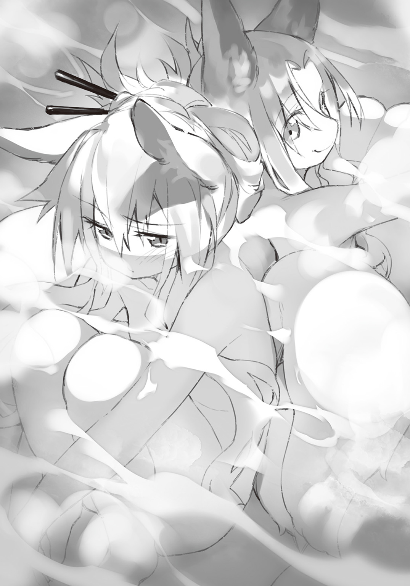
あのころは若かったせいで学習が足りず、失敗したが......
まさかあれから四百年以上経って、また同じような空気を味わうとは思わなかった。
もう出ようか。
しかしそれも逃げるようで格好悪い。
あと、『月光』は人に尻尾を見られるのが好きではなかった。
普通の獣人は羞恥心から尻尾のつけ根を見られるのを嫌うが、『月光』が嫌な理由はもっと他にある。
死に損ねた証だから。
生きた回数を数えられるのは、やはり、どう言いつくろおうとも好きではない。
その年数を無駄にうろうろと、普通の人が数年で済ますようなことを数十年かけてやったりしてきたのだから、なおさらだ。
ようするに尻尾の数は、己の無能の証なのだと『月光』は認識していた。
なので尻をさらして風呂から出るのも、嫌だ。
もういっそ後ろ歩きで出ていこうか――などとのぼせ始めて妙なことを考えていると。
ヨミが口を開く。
「尻尾、いっぱいあるね」
......やっぱり嫌がらせだろうか。
しかも心でも読んでいるのだろうか。
アレクの妻ならありうる。
自分の知らないあいだにヨミが着々と嫌な成長を遂げているのを感じつつ、『月光』はいちおう言い訳みたいなことをしてみる。
「......実は、いっぱいはない。ちょっと枝分かれしとるだけで、根元では一つじゃ」
「それは生まれつき？」
「............貴様は本当に、アレクからなんにも聞いておらんのじゃな」
「まあねえ。特にあなたのことは。だってあなたを見つけてから、アレク、まともに宿に帰ってきてないし」
「......そうじゃったな。すまんのう。独占して」
「別に」
沈黙。
......なんだか妙に挑発的な言葉を漏らしてしまった。
普段からこうなのだ。口調のせいで偉そうに見られるので、もういっそそういう方向でいこうと数百年前に決意をした。
その決意は習慣化し、癖となり、常態と化した。
つまり普段から偉そうという今の『月光』が出来上がったわけである。
気まずさがどんどんレベルアップしていく。
いっそアレクが風呂場に意味なく乱入してくれたりしないだろうか。
「修行、したの？」
ヨミから再び話題提供があった。
基本的に向こうは会話を試みる方針らしい。
目的は判然としないが、無視するのも気まずさが加速するだけなので、『月光』は探り探り応答する。
「......したが、どうした」
「なにやったの？」
「....................................」
応答する方針なのだが、思い返したくなかった。
つらい修行を思い出して話題を続けるか、それとも無視を決めこんで気まずい空気でのぼせるまで風呂につかるか、二者択一である。
息子夫婦が試練しかよこさない。
『月光』は悩んだ末――それでも答えることにした。
「崖から飛び降り、豆を食った」
「ああ、いつものだね。遠出中は？」
「............」
「どうしたの？」
「......いや。......なあ、その、もっと明るい話題にせんか？」
「ぼくたちのあいだに明るい話題、ある？」
「............このあいだ、王都の南西部で犬が子供を産んだらしい」
「へえ」
「..................」
「........................」
「......修行は、壮絶なものじゃった......」
「そ、そう......」
「わらわが、アレクを覚醒させてしもうた......人生最大のしくじりじゃ......すまん......」
「......」
「あやつは恐怖の使い方を覚えた。もう、おしまいじゃ......人は現実逃避をすることで心を守るものじゃが、今のアレクの修行ではそれさえ許されんじゃろう......正気のままでいることを強要される......なぜなら、目的を理解し、褒美をぶらさげられ、成功せねば罰が......」
「......それは人生最大のしくじりだねえ」
「わらわには、止められん。いや、それでも道中の修行はマシじゃった。こちらを殺そうとゆっくり迫り来るあやつに対し、手を変え品を変え己を鍛え、死に、殺され、そして死に、魔法を撃ち続けるだけじゃったからのう......」
「それが『マシ』なんだね......」
「真に恐ろしきは『十割殺し』習得の修行じゃ......『状態異常を相手にかけるにはなにが必要か？ それは気合いです』などと言いだし、恐怖でなにも言えんわらわに目隠しをすると、指先から、順番に......痛み......痛みを、感じるな、と......精神で、肉体を凌駕しろ、と......」
『月光』は体を震わせる。
ぽん、と肩に手が置かれた。
ヨミの手だ。
「ごめん」
「......いや。アレがああなったのは、わらわのせいじゃ......わらわが、あんなモノ産み落としたせいで......」
「う、うーん......人生を否定しないであげてほしいけど......」
「あやつの人生を否定しておるのではない。わらわの罪を肯定しておるんじゃ」
「罪って......」
「思えば過去の英雄を産み落とした者どもも、似たような感覚だったのやもしれん......英雄アレクサンダーやサロモンなんかは間違いなく社会不適合者じゃったからのう......」
「あなたはカグヤなんだっけ？ 英雄たちと一緒に旅をしたっていう......」
「......そうか、なにも聞いておらんのだったな。その話は半分正解で、半分間違いじゃ。まあ正確なところはおいておいて、カグヤの無念とアレクサンダーの願いを叶えるため生まれた者じゃな」
「正確なところをおいておかれるとさっぱり伝わらないけど......まあ、どうでもいいかな」
「あらゆるものに興味を示さんのは、昔から変わらんな」
「......そうかもね」
「わらわは『輝く灰色の狐団』滅亡の真相を語らされるかと思っておったぞ。よもや、それすら興味がないとは言うまいな？」
「それは聞きたくないんだよ」
「......なぜじゃ」
「あなたの口からなにを聞いても、言い訳にしか聞こえないから」
「......」
「あなたが死んでたら、アレクの口から真相を聞くことはあったかもね」
「......恨んでおるか、やはり」
「正直、あなたへの気持ちはよくわからない。本当に今さらだし。ただ、『輝く灰色の狐団』の話はぼくの中でもう終わったことだから。蒸し返されても困るんだよね。だから恨みがあるとしたら、あなたが『狐』とか『はいいろ』の名前で騒ぎを起こしたことだけ」
「......前も言ったが、すべてがわらわのせいではないぞ。『輝く灰色の狐団』はアウトローの中では伝説的じゃからな。尾ひれがつき、名前を騙られる。これはある程度名が通り、現在活動していないクランならば、仕方のないことじゃ」
「うん。わかるよ」
「実際、クラン名やクランの中心人物たちの名を悪用されているのは、『輝く灰色の狐団』だけではない。冒険者クランでは『轟く風の団』がよく名前を勝手に使われるし、同じように製作系じゃと『黄金の針』なんかが使われる」
「わかってるってば」
「......すまん。言い訳じゃな......本当のところを言えば、わらわは、『輝く灰色の狐団』に消えてほしくなかった」
「............」
「あの名が永遠に失われるのは、『はいいろ』と『狐』の名が失われるようで、嫌じゃった。しかし......まあ、本人たちは、アレクに名前を受け継がせ、そしてひっそり消えることを望んでおるじゃろうな。武名も異名も必要ない......そんなものに頼らんでもみんなが幸福になれる世の中を望んでおったからのう」
「......そうだと思うよ」
「つまり――わざわざ『狐』や『はいいろ』の名を使ったのは、わらわのわがままじゃ。一人この世に遺された者が、置いていかれて寂しいと、だだをこねただけのことじゃ」
「......」
「『狐』ぐらいは生き残ってくれると思ったんじゃがのう。ほとぼりが冷めたころ、こっそりと会って話ぐらいできればと............いや、ヨミ相手に言うことではなかった。すまん」
「......その話、ぼく以外の誰に言えるのさ」
「............アレク............は、まあ、なんじゃ。心情を吐露する相手ではないのう。首をかしげられそうじゃな」
「それはさすがに......でも、当時のクランメンバーもたくさん『銀の狐団』にいるよ」
「孤児どもか。......みな、さぞ大きくなっとるじゃろうな」
「今度会いに行ったらいいよ。紹介ぐらいはするからさ」
「ふん。............はあ、しかし......意外と会話ができるもんじゃな」
「そうだね」
「貴様は変わったと思ったが、そう大きく変わってもおらんな。心も体も、おもかげを残しておる。特に体」
「......あなたは、ぼくの体型になにか不満でもあるの？」
「貴様がきちんと成長しとれば、アレクももう少し悩まんかったじゃろうと思ってのう。......反省じゃな。いつもいつも『きっと大丈夫じゃろ』と思って失敗する。まあ、慢心が理由というか、実力不足がけっきょくのところ、大きな理由なのじゃが」
「......」
「ああ、そうそう。......『はいいろ』の死については、謝らんぞ」
「......」
「わらわは、あの男の本懐を遂げさせた。これについてわらわは、なにも反省しとらんし、反省の必要さえ認めぬ」
「......そう」
「しかし、『狐』にかんしては詰めが甘かった」
「......」
「......すまん。せめて、『狐』にわらわの生存を教えておれば、生きる理由の一つぐらいにはなったかもしれん。あやつを一人ぼっちにしたのは、わらわの責任じゃ。これは打てる手を打ちきれておらんかったわらわに責任がある」
「謝らないで。あの人は幸せそうだったから」
「......そうか......しかし、わらわの周囲には、死を救いとして捉える者が多い。よくない連鎖じゃな」
「......」
「断ち切ってくる。やり残した最初の仕事をこなし、それを最後に、二度とわらわは幸福のために他者を死なせぬようにする」
「そう。なら、ぼくもあなたを許せるかも」
「やっぱり恨んでおったんか......」
「あはは。......ん」
ピクリ、とヨミの耳が動く。
唐突に立ち上がると、入り口の方向を見た。
急にどうした、と『月光』は思ったが――この反応は、見たことがあった。
だから『月光』は笑う。
「......アレクでも帰ってきたか？」
「たぶん」
「あの生き物の帰宅などようわかるのう......視界に映っておっても、目の前にいないような気がする化け物じゃぞ......」
「気配とか音じゃないからね」
「......においもないぞ......あやつ無気味すぎじゃろ......ひょっとしてゴーストではないか？」
「生きてるってば......ぼくがなんとなくわかるのは......感覚かな？ 精神的なつながりかも。......じゃあ、ちょっと迎えに行くね」
「いつもそうしておるのか？」
「ううん。いつもは手が空いてないから」
「......手が空いてる時ぐらい休めばよいのではないか」
しかし『月光』のつぶやきはとどかず、ヨミは行ってしまう。
かいがいしいというか、『よく懐いている』という印象だった。
昔からそうだ。
ヨミがアレクを『お出迎え』するのは、ある時から『輝く灰色の狐団』でよく見られた光景になっていたのである。
......失われた居場所を思い出す。
それはかつて建国を成し遂げた英雄たちのもとではない。
寂れた酒場。
活気あふれる犯罪者クラン。
そこには孤児や逃亡奴隷、食い詰め者や犯罪者が集まっていた。
物静かな獣人の女性が、いつの間にか視界にいる。
集団の中心、積み上げたテーブルの上で、魔族の男が叫ぶ声を思い出す。
「......家族に乾杯、か」
『月光』は手のひらにすくった湯を掲げる。
それは指の隙間からこぼれ落ちて――
大きな湯船にまざって、もう、戻らない。
○
「大丈夫そうなので、英雄を殺しに行きましょうか」
いよいよ目標の時は近い。
『月光』はアレクとともに目的地へ向かう。
夜だ。
等間隔に魔導具のランプが石畳の道を照らす。人通りはない。ただ、明かりの漏れた建物からは人々の騒ぎ声が聞こえた。
目的地は王城だった。
そびえ立つ巨大な石の建造物。濠とかがり火に浮かぶ王都の中心。
見えてきた東門は跳ね橋がおろされていた。
番兵は存在しない。代わりに白銀の鎧を着た近衛兵を引き連れ、誰かが立っていた。
ローブをまとい、深くフードをかぶった人物。
こぼれる桃色の髪を見て、『月光』はぎょっとする。
城の外で、まるでこちらを出迎えるように立っていたその人は――
あろうことか女王ルクレチアだったのだ。
「いらっしゃあい。みんな、出払ってるわよお」
「わがままを言って申し訳ありません」
「がんばってねえ」
そんなやりとりだけして、女王ルクレチアはどこかへと歩き出す。
七名いる近衛兵が、アレクに礼をしつつ女王に続いた。
「......どういうことじゃ」
さすがに『月光』はたずねる。
アレクはいつもと変わらぬ笑顔で応じた。
「乱暴な展開も予想できるので、城を空けてもらったんですよ。巻きこまないようにね」
――乱暴な展開。
とりもなおさず、それはアレクサンダーと戦いになるケースを示していた。
たしかにそういう場合も想定できる――というか、した。二人とも奇人だから。
しかし、『月光』は注釈する。
「アレクサンダーは死にたがっておる。やつを殺そうとする限りにおいて、抵抗はされんはずじゃぞ」
「まあ、どういう流れになるかは出たとこ勝負みたいな感じですし」
いくつか計画でもありそうな口ぶりだった――もっとも、『月光』にはアレクの頭の中身などわからない。
だが、たしかに、英雄アレクサンダーとアレクが戦いになる可能性はゼロではないのだ。簡単にできる配慮をするだけならば、安全に気を払いすぎるということはないだろう。
城に入る。
内部に人の気配はない。
石造りのエントランス。灯りの落ちた夜の城。
静かで冷たい空気には、言い知れない無気味さがある。
アレクは慣れた様子で歩んでいく。
『月光』も遅れないよう続いた。
しばし進み、地下へ降りる階段へとたどりつく。
......こうして見ると、異様な雰囲気がその階段からは醸し出されていた。
アレクは躊躇なく、暗くて先の見えないその場所へ進んでいく。
『月光』も続いた。
視界はまったく利かないが問題はない。なにせ、慣れ親しんだ道だ。
階段をくだりきり、アレクがパチンと指を鳴らす。
その瞬間、光が灯って――
『月光』とアレクサンダーの隠れ家。その入り口が、姿をあらわにした。
それは狭い通路の左右に、金属製の格子のはまった部屋が並ぶ場所だ。
暗く、冷たく、かび臭い。人こそいないが、その空間の名称は――
「地下牢」
アレクが言う。
......過去の英雄アレクサンダーも、この場所をそのような名前で表現していた。
もっとも、罪人がつながれているわけではないし、牢もすべて開放されている。
なにせ罪人たちが刑務に服する牢屋は、城とは別な場所に存在するのだ。
王族と罪人を同じ建物に住まわせるわけがない。
万が一牢が破られ、王族を人質にとられることになれば大変なことだし、そんなケースに対する警戒を年中続けるのも大変だ。
「しかし、過去の英雄がこんな場所にいるというのも、やるせない話ですね」
「......あやつのいる場所は、正確に言えばここではないぞ」
「そうですね。でも、似たようなものだ」
アレクは進む。
『月光』も続く。
二人は無言のまま地下牢の突き当たりへ来た。
そして、向かって右側の牢に入ると、石造りの壁の一部を押しこんだ。
――壁が動く。
こちら側にせり上がり、石がこすれる音を立てながら、横へスライドした。隠し扉だ。
押しこむ位置や、押しこむ際に使う力加減などから、偶発的に発見される確率は低い。
というか数百年誰にも見つかっていない。
もし見つけることができる者がいるとすれば、それは『偶然こんな誰も来ない場所に来て、偶然一番奥の牢屋に入って、偶然転んで偶然手をついた場所が、偶然扉を開けるスイッチの場所だった』者か――
――あるいは城の地下牢というだけで『隠し部屋がありそう』などとよくわからないことを言い出す、異世界転生者ぐらいのものだろう。
「行きますか」
進むアレクについていく。
踏み入ったのは、真っ白い、細長い通路だ。
壁、天井、床、すべてが、ほのかに発光する、継ぎ目のない白い材質でできている。
その材質は不思議な感触だった。
たしかに硬い。しかし、押せばなんとなしにへこむような、そんな感触がある。
カツンカツンと『月光』の靴音がよく響いた。
だからこそ、まったく無音で進むアレクの異常さが際立つ。
しばし進むと、開けた場所に出る。
そこは今まで進んできた通路と同じ材質でできた、立方体の空間だった。
最初、この部屋には宝箱が一つ、ポツンと存在するだけだった。
しかし、現在はだいぶ生活感が出てしまっている。
入り口そばには、廃棄されたものを拾ってきたソファ。
かつてなんらかの......あまり印象に残らないなにかが収まっていた宝箱は、今では『冷却』の魔石を入れられ、食糧保存庫と化している。
奥にはかまどが存在した。
これは当初、地下の密閉空間ということでアレクサンダーを燻り殺せないかと思って導入したのだけれど、どうやらこの空間は煙や熱を排出し、内部の環境を一定にたもつ性質があるらしく、失敗した。そのせいで、今では普通に煮炊きするために利用している。
そして、部屋の中央。
......古い、廃棄された玉座に座った、この部屋の――いや、この国の主がいる。
アレクサンダー。
顔立ちは十代前半のような少年。
その実五百年を生きた化け物。
帯でぎちぎちに拘束されたその少年は、眠るような顔をしていた。
中性的で、穏やかな顔。
けれど――不意に、その眉間にシワが寄る。
「......う」
うめき声。
『月光』は耳をふさぎたいような気分になる。
「......ア、アア......」
断末魔にもよく似た声。
けれどそれが産声なのだと『月光』はよく知っていた。
呼吸が始まり、生命が始まる。
脳を取り除かれ、心臓を貫かれ、それでも死ねない英雄が、また生命活動を開始する。
「っ、ぐ......う......」
身をよじる。
そして、何気ない、特に力をこめた様子もない『右腕をあげる』という動作で、そいつは自分を拘束する帯を引きちぎった。
ブツン、という音。
大きくもないその音によって、ついにそいつは目を開けた。
「......」
帯を引きちぎった右腕を、無表情でながめる。
たっぷり沈黙したあと漏らすのは、いつもの言葉だ。
「......まだ俺は生きているのか」
絶望はもうなかった。
ただ、強い虚脱感だけが、漂う。
彼は自分が終わらない懲役刑の最中であることを再確認する。
生命という獄につながれたその身がまだ自由になっていない現実を認識する。
「次を、くれ。なにをしてもいい。殺してくれ。死なせてくれ。どんな苦しみがあってもいい。どういう痛みでもいい。死ねるなら、なんでもいい。とにかく、俺を殺せ。殺してくれ。頼む、殺してくれ」
それは誰かに語りかけるように紡がれる、ただの独り言だ。
『月光』の存在を認識する前にもかかわらずささやかれる祈りの言葉。
......あるいは、もとより人に向けた言葉ではないのかもしれない。ともすればそれは、彼が生まれる前に出会ったという、神に向けた呪詛なのだろう。
『月光』は自分が小さく震えているのを認識する。
――大丈夫だ。
今回は、殺すための手段がある。
だというのに、喉が引きつって声が出ない。
いつもそうだ。
アレクサンダーが目覚めるたび、胸になにかがつかえたように、呼吸が詰まる。
「大丈夫ですよ」
そっと背中に手が当てられた。
『月光』は呼吸を取り戻す。
手の主へ視線を向ける。
アレクサンダー。
ただし、死を望まない、英雄でもない、現代に生きる我が子の、アレクサンダーがいた。
「あなたはできる。あなたのしたことは無駄ではない。――いえ、無駄に終わらせないために、あなたは修行を終えたのです」
彼は笑っている。
自分の施した修行の成果をみじんも疑っていないようだった。
『月光』は思い出す。
......そうだ。修行では、四百年間でさえ経験しえなかったような行為ばかりしてきた。
苦痛は自信に変換される。
恐怖は勇気に裏返る。
......思えば、いつも『駄目だ』というような気ばかりしてきた。
だって、無能だから。
特異な出自。
非凡なる『体を乗り換え生き続ける』という能力。
でも、それだけしかなかった。
なにも持っていなかった。才能もなかった。発想だってなかった。
けれど、一人でやり遂げようとした。
それが自分の生まれた意味だと確信があったからだ。
他の、普通に生まれて普通に死んでいく人にこんな頭がおかしくなりそうな苦難をあたえるべきではないと考えていたからだ。
......できるという確信にいたったことは一度もない。世界が終わるまで、このままアレクサンダーを殺そうとし続けるものだと思っていた。
なんで自分なんだと思い続けてきた。自分でさえなければきっともっと早くアレクサンダーを楽にできるのだろうと何度も思った。寿命はいらないから才能がほしかった。生きれば生きるほど自分の非才さに嫌気が差してきた。
いっそ、死んでしまえたら。
言い訳のしようもなく、手を抜くわけでもなく、誰にも責められないような死に方ができればと思ったこともあった。
でも、生命を自分から投げ出すことはできなかった。
だって、自分がやらなかったら誰がアレクサンダーを救ってやれるのだろう？
他にいないからきっと自分がやらなければならないのだと、思っていた。
そう思って――遠回りばかりしてきたけれど。
「アレクサンダー！」
『月光』は叫ぶ。
英雄は表情のない顔で『月光』を見た。
絶望を通り越した諦観の表情だ。
あの濁った目を向けられるたび『月光』は怯んできた。
けれど――
「今日こそ貴様を殺すぞ！」
――言えた。
自分一人ではけっして言えなかった言葉。
......才能がないなら、力を借りればいい。
そのことにようやく気付いた――否、無理矢理気付かされたから、出てきた言葉だ。
アレクサンダーが口の端を上げる。
それは、喜びの表情に見えた。
「いいぜ、やってくれ。殺してくれよ。なんにもできないお前が、俺を！」
アレクサンダーが拘束帯を引きちぎりながら立ち上がる。
あらわになる裸の上半身。
裾のすり切れた脚絆。
目覚めたばかりだというのに足腰にはまったく揺らぎがない。
やはり――弱ってさえ、いない。
『月光』の顔に冷や汗が一筋伝う。
自信はあった。自分の自信ではない。サロモンの才能に対する信頼と、アレクの完成させた技術に対する信頼だ。
それでも、緊張するものは緊張する。
先ほどから息はあがり、背中にはじっとりと嫌な汗をかいている。
ここまでして駄目だったら？
不安は、重苦しく募っていた。
それでもやらねばならない。
『月光』がいよいよ決意し『十割殺し』を使用するべく念じる――その時。
「その前に、少しいいでしょうか？」
アレクが、唐突に口を開いた。
アレクサンダーは不機嫌そうに彼をにらむ。
「......なんだコイツは？」
「彼女の息子のアレクサンダーです。母の行動の意図的に、どうしても一つ、聞いておかなければならないことがありまして」
「......なんだよ」
「いえ、素朴な疑問なのですが......」
アレクは悩む。
それは言葉を選んでいるような間だった。
しばしして、言いたいことの整理が終わったらしい。
悩んだうえでアレクが述べた質問とは――
「あなた、なんでそんなに死にたくないんですか？」
それは意外すぎる言葉。
生き続け、死にたがり続けた男へするものとは思えない質問を、彼は笑顔で投げかけた。
○
「......お前はなんだ？ 『月光』からなんも聞いてねーのか？ 俺はな、死にたいんだよ。今日まで生きさらばえてきた。いい加減、死んで――褒めてやらなきゃいけないやつが、いるんだ」
回答するアレクサンダーは、冷静だった。
『月光』から見れば意外な対応だ。
もっと苛立つか、無視するか、あるいは怒り狂うなんていう反応を想定していた。
アレクは首をかしげる。今の回答ではなにも納得できていない様子だった。
「はあ、つまり、死後の世界があり、あなたがその死後の世界で、仲間と再会できるとして、再会したお仲間を褒めてさしあげるために死にたいと、そういうことですか？」
「......そうだよ。悪いか」
「いえ。人にはそれぞれ死生観や事情がありますからね。悪いということはありません。ただ、少し違和感がありまして」
「お前は俺のなにを知ってる？ 俺とともに生きたわけでもないお前らが、俺のなにから違和感を覚えるんだ？」
「......なるほど。たしかに検証が必要だ。いやあ、よかった。やっぱりこういうことになる」
「？」
「どうぞ」
そう言って、アレクは腰の後ろからなにかを取り出し、投げつける。
アレクサンダーは投げられたものを造作もなく受け取り、ながめる。
それは折れた剣だった。
「......俺の使ってた剣じゃねーか」
「『月光』さんがレプリカ含めて色々なところにばらまいていましたよ」
「いいんだよ。俺を殺すやつにくれてやれって言ってるんだから。殺されるためだけに生きてる俺に、もう剣は必要ない」
「しかし、今は必要だ」
「............なにをさせる気だ？」
「戦ってみませんか？」
アレクは腰の剣を抜き放つ。
青い輝きを発する、不思議な剣だ。
新しい聖剣――アレクに少しでも戦力を与えるため、『月光』が見こみある刀剣鍛冶を焚きつけ、打たせようとした剣。
アレクの表情は変わらず、口調はいつもの通りだ。
戸惑いの色を見せたのは過去の英雄アレクサンダーだった。
「......なんでそうなる」
「あなたが不死の理由について、いくつか推測があります。それの検証ですね」
「......」
「あとは、『月光』さんがあなたを殺すための下準備というところでしょうか」
「............手順が必要か。いいぜ、付き合う。ただし――手加減は苦手だ」
「問題ありませんよ。俺のステータスはごらんになられましたか？」
「............はあ!?」
アレクサンダーがここ数百年で一番大きな声を出した。
それから、目をこする。
「......おいおい、マジかよ。なんだそれ」
「どうでしょう？ サロモンさんや『真白なる夜』さんと比べて、俺の能力は見劣りするものでしょうか？」
「悪いが......サロモンには悪いが、比べものにならねーな。どうなってんだ。なにが楽しくてそこまで鍛える？ それとも『月光』が言わないだけで、外では戦争でも起きてんのか？」
「いえ、趣味です」
「......」
「ステータスはカンストまで。スキルはめいっぱい。俺はそういう楽しみ方をします。――ゲームではね」
「............お前、まさか」
「異世界から転生してまいりました」
「......なるほど。いや、『月光』がここに人を連れてくるなんて、今までなかったんだが......これは、可能性が高そうだ」
「ご理解いただけましたか。本日は城から人払いもしておりますので、存分に暴れることができると思いますよ」
「......マジかよ。まずいな......」
「？」
「楽しくなってきた。こんな気持ちは、久しぶりだ。俺は、死にたい。でも、楽しすぎて、お前を殺しちまうかもしれねー」
「大丈夫ですよ。セーブしますから」
そう言って、アレクは手を横にかざす。
『セーブポイント』を出現させて。
「『セーブします』。これで、殺されても死にません。ああ、母さんもセーブをしておいてください」
「............つくづく、すげーな。お前みたいなのもいるのか。俺の世界はまた広がった」
「そうですか。広がったばかりで申し訳ありませんが、今日閉じます」
「はっ......そうだな。楽しい勝負ができる。世界が今日閉じる。いたれり尽くせりとはこのことだ。じゃあ――俺の世界を閉ざしてみろ、アレクサンダー！」
手にした剣を伸ばし、アレクサンダーが突撃する。
すさまじい勢い。
対するアレクは落ち着いたものだった。
半身になって切っ先を相手に向けるようにかまえると、アレクサンダーの突撃を止める。
そうして――足を止めた両者は、剣による打ち合いを始めた。
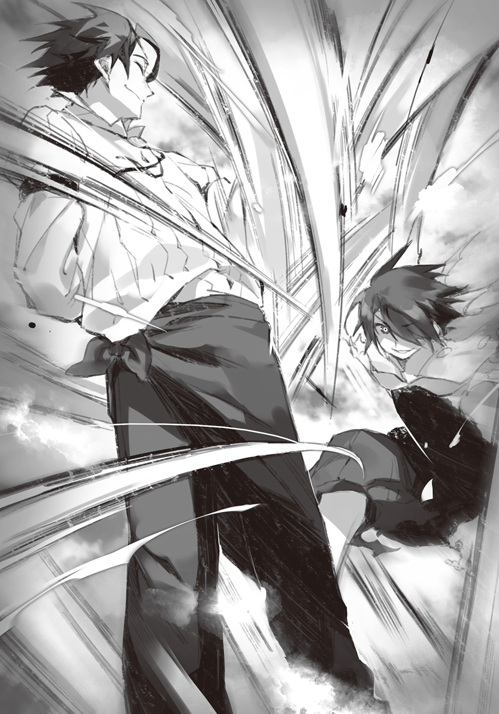
火花が散る。
衝撃。それから、風圧。
音と音と音が重なり、一つのけたたましい音に変化する。一瞬のうちにあの二人は何度剣を打ち付けあったのか。視界に映ってはいるものの数えることはできない。だって、そんなことに意識を割けば、たちまちに二人の巻き添えで死ぬ。
そうだ、だからセーブを勧められたのだ。この戦いは見ているだけで死にかねない。
『月光』は慌てて「セーブする」と宣言した。
「おいおいおいおい！ まともに俺と打ち合うやつなんて、五百年前にもいなかったぞ！」
「みなさんＳＴＲが低かったのでしょう」
「あとＤＥＸもな！」
「サロモンさんはどうだったので？」
「あいつは強かった！ 俺と互角だ！ ただ、あいつは剣士じゃなかった！」
「ふむ、サロモンさんとあなたは互角ですか」
「......？」
「ちょっと速度を上げましょう」
和やかな会話。
しかし、反対にだんだん上がっていく戦闘速度。
足を止めているから姿が消えることはないが、もう剣は『月光』の動体視力で捉えることはできなくなっていた。
どころか、腕も消えている。
ただ、音と風圧と衝撃だけが、二人のあいだで起こっていることを想像させる。
時間的にはわずか、しかし、きっととんでもない合数、剣が重ねられたあと――
一瞬だけ、二人が剣を大きく振りかぶる様子が『月光』にも見えた。
そして――打ち付けあった。
明らかにそれまでと力のこめ方の違う一撃だ。
風圧や衝撃だけではなく、床が、一瞬波打った。
あのつばぜり合いにこめられる力がいかほどのものなのか、想像がつかない。
英雄アレクサンダーは、楽しげに歯を食いしばる。
一方でアレクも珍しく笑顔を消し、集中していた。
二人が、同時に吹き飛ぶ。
アレクサンダー二名はほぼ同時、対面する壁に背中を打ち付けた。
復帰し、剣を構えなおすのも同時だ。
......見ているのに『月光』にはまったく、戦いの質が想像できない。
あの二人は、生き物として遠すぎるのだ。
むしろ、二人の戦いに耐えている剣の見事さや、この部屋のとてつもない強度の方が、驚嘆を覚える対象としてわかりやすい。
「いいじゃねーか」
アレクサンダーが笑う。
それから、手にした古き聖剣の刃を、長く長く伸ばす。
アレクサンダーは、体を思い切りひねる。
力をためるような動作。
「久々の娯楽だ。もっと色々見せてくれ！」
ためた力を一気に解放するように、剣をなぎ払った。
それは『月光』の頭上を通過してアレクの首へ迫る一撃だ。
驚嘆すべきは精妙なる間合いの把握力。部屋の壁を傷つけない――部屋の壁に当たることによりわずかたりとも速度を鈍らせないよう調整された長さの刃が、全速でアレクへ迫る。
対するアレクは「ふむ」と声を漏らした。
もらえば絶命はまぬがれない一閃を前にしているとは思えないほど冷静な様子で言う。
「いえ、こちらはもう結構です」
言葉と同時に、青い軌跡が描かれる。
手にした青い剣で、アレクサンダーの刃を斬ったのだ。
斬られた刃はスッと消失する。実体ではなく魔力により編まれた刃だ。消滅するのは当然と言える。
そもそも魔力の刃だからこそ斬られるわけがないと、『月光』は思うのだが......
アレクサンダーはおどろいていなかった。
「......斬られたか」
「魔力の刃が斬られるという発想はあったようですね」
「サロモンの魔力の矢をぶち折ったことがある。魔力で編まれてるからって破壊不可能ってわけじゃねーさ。......ま、俺の魔力が斬られたのは初めてだがな」
「なるほど。だいたいわかりました。ご協力ありがとうございます」
アレクが一礼する。
アレクサンダーは、不満げに舌打ちした。
「お互いに死なないんだったら、死ぬほどやってもいいんだがな」
「ははは。まあ、それもいいんですが、俺は負けるとわかっている戦いはしない主義なので」
「............」
「あなたはサロモンさんと互角だと言った。そして、俺がサロモンさんよりはるかに強いとも言いました。そこから判断すれば、あなたは俺に勝てない」
「......はっ」
「しかし、俺はきっと、あなたに勝てないでしょう。だってあなたが自分の敗北を想定していないから」
「どういう、意味だ」
「違和感」
アレクが笑顔で述べる。
剣は腰の鞘に納められ、本当にもう、戦う気はないようだ。
「あなたのお話を『月光』さんからうかがいました。それで俺は、いくつか違和感を覚えた。たとえば、サロモンさんとの戦いのお話です。戦いの最後、あなたの剣は折れましたが、剣とはそもそも、話にあったような折れ方をするでしょうか？」
「............それは」
「思い切り振った剣が、サロモンさんに当たる前に、半ばから折れた。刃は前方向へ吹き飛んで、サロモンさんの集落の壁を壊した。......これ、どう思います？」
「..................」
「あなたはサロモンさんを殺したくなかったんでしょう。まあ、イーリィさんがいたから殺すほどのケガを負わせても大丈夫だという打算で戦いを始めたんでしょうが、それにしたって即死してしまえばどうにもならないという不安はあったはずだ。その不安がそんな結末を生み出した」
「......どういう意味だ」
「たずねておきながら、すでに答えはあなたの中にあるのでは？」
アレクサンダーは黙りこむ。
その態度は、肯定のようにも見えた。
アレクは変わらない。笑顔で淡々と言葉を紡いでいく。
「あなたのステータスもスキルも、俺には見えません」
それはおどろくべき発言だ。
というか、むしろ、『月光』やアレクサンダーよりも、アレク自身がおどろくべき事実なのではないだろうか。
だって、彼は色々な人の『ステータス』を見て修行をつけてきたはずなのだ。
普段見えるものが見えなかったら、普通、混乱する。
けれど微動だにしない。精神力ではなく、精神性が尋常ではないのだろう。
「でも、あなたの『チートスキル』がなんなのかは、なんとなくわかりました」
アレクサンダーは言葉を発しない。
ただ、恐れるようにアレクを見ている。
アレクはそんな視線をまったく気にした素振りもなく語る。
不死の英雄アレクサンダーの力の正体、それは――
「『ご都合主義』」
耳を疑うような発言は、ここに来て二度目だ。
その言葉自体は、一般にも耳にすることがあるものだった。
ようするに、その言葉の意味するところとは――
「なんだかんだ望み通りの結末にする力。殺したくない相手を殺さないことができる。負けたくない勝負で負けないことができる。その代わり『望みそこねたこと』『発想できなかったこと』は叶わない力。あなたの能力はそんなところで――」
ほんの刹那、間があった。
その間は、アレクがなにを思ったゆえにできたものだろう。
わからないけれど、けっきょく――
「あなたの死なない理由も、それだと俺は思います。つまり、あなたは『望み通り』生きていると俺は考えている、ということです」
アレクは言う。
『お前は死にたがっていないのだ』と。
○
「違う！ 俺は死ななきゃならない！ 死にたいんだ！」
アレクサンダーは激昂した。――今度こそ、怒りをあらわにした。
それはそうだ。数百年抱き続けた願いを、ご丁寧に根拠らしきものまで添えて『噓だ』と言われたのだ。
このような言いがかり、捨て置けない。
だというのに、アレクは動じない。
相手の感情が表出するのをながめて、無関心そうに「そうですか」と述べた。
「そもそも、あなたの敵は『バグ』なのでしょう？ 勇者とあなたが名乗ったと、『月光』さんから聞きましたよ」
「だからなんだよ!?」
「バグというのは『仕様にないもの』ですからねえ。この世界がどういうものか、俺は今もって把握しきれていませんが......『仕様にないもの』を相手にするならば、『望み通りになる能力』でもないとやっていられないと思いますよ」
「......でも、この世界はもう、俺にとってゲームじゃない」
「これは興味本位からの質問なのですが、あなたの認識していたこの世界は、どのようなゲームだったので？」
「それは......たしか、スローライフ系ゲームだ。オープンワールドで、農業をしたり、作物を売ったり、たまに............モンスターと、戦ったり..................」
言葉がにぶる。
アレクサンダーの顔は、急に青ざめた――なにか、気付いてはいけないことに気付いてしまったかのような、そのような表情に『月光』からは見えた。
アレクはその表情を見てどう思ったのか......感情がさっぱり見えない。
「......ああ、なにがバグかは言及しませんよ。俺が申し上げたかったのは、あなたの『死にたい動機』についてです。質問なんですが、あなたは死んでどんな得があるんですか？」
「だから、謝らなきゃならないやつがいるんだ！ 褒めてやりたい、やつが、いるんだ......俺なんかのために命を懸けたやつが......そいつのお陰で生きられたって言わなきゃいけない」
「義務感や責任感という感じですかね」
「......そうだよ」
「そもそもあなたは、責任をとりたがるタイプの人なんですか？」
「............は？」
「いえ、お話を聞いていてね。『指導者』というか『扇動家』のように感じまして。人々を焚きつけた。目標に向かって進んだ。でも、責任をとって彼らの面倒を見るのは不本意だった。違いますか？」
「......」
「責めてはいませんよ。そもそも、俺が暮らす国家はあなたのお陰で樹立している。感謝こそあれ文句はありません。でも、あなた自身はこの結果をどう思っているのか、気になりましてね」
「......でも、たくさんの人が、俺の言葉に乗っかった。だから......俺は」
「ことが大きくなっていってびっくりした、とか？」
「......」
「すべて『月光』さんからのお話と、数々の資料からの推測で恐縮ですが......あなたはよくも悪くも後先考えるタイプではないですよね？ むしろ考えたりするのは忌み嫌っていたのではないですか？」
「............」
「でも、考えなければならなくなり、『都合良く』街を――街として利用できそうなダンジョンを見つけ、そこを拠点にし、流されるまま国王になった。そして、多くの人々を焚きつけた責任をとった代わりに、ある約束を放り出した」
「..................」
「『世界の果てを見に行く』という、仲間との約束だ。ああ、忙殺されて忘れていた、という方が正しいかな？」
アレクサンダーは黙りこむ。
顔は真っ青で、呼吸は荒い。肩で息をし、ガタガタと震えている。
はために見てさえあきらかに、動揺している。
だけれど、アレクは言葉を止めなかった。
「あの世というものを、俺は信じてはいませんが――もし、あの世で故人となった知り合いと会話ができそうなら、さぞかし責められそうですよね。多数をとり少数を切り捨てる。為政者として正しいけれど、それで仲間が納得するかは別だ」
「......頼む、やめてくれ」
「俺はサロモンさんの話以外詳しくうかがっていませんが、彼なんかはさぞやあなたを責めそうですよね。生前でさえ、見限ってあなたのもとを離れたらしいではないですか」
「......お願いだ。もう、やめろ」
「やめませんよ。あなたが死にたくなるまでね」
「......」
「ですが、まあ、事実と違うことは言いませんので、ここらで一つ、朗報を」
「............」
「サロモンさんは、あなたを見限ってはいませんでしたよ」
「......なんだと？」
「これからあなたに試す『十割殺し』は、サロモンさんが生涯を懸けてあなたを殺すために研究していた理論が基礎となっています。ねえ、母さん？」
と、アレクは『月光』を見た。
同時にアレクサンダーも、救いを求めるような視線を向けてくる。
『月光』は大きく深呼吸をする。
「そうじゃな」
うなずき、言葉を引き継ぐ。
......ここからがきっと、自分の戦いなのだと――そう理解して、話を始めた。
「サロモンのやつは、貴様を殺すために、その生涯を懸けて研究をしておった」
「......なんでだ。あいつは、弱者の重さに負けたって言って、俺なんか、もう殺す価値もないって......」
「わらわには理解できんかったが、アレクサンダーならば、サロモンの行動原理を把握することができるのではないか？」
「......」
「あやつが長い時間を費やし、多大なる情熱をかたむける時は、どんな時か、貴様ならわかるであろう」
「......『闘争』」
「そのようじゃな。......ふん、理解できんわ。そんな取るに足らぬ、くだらぬもののために、長い旅路を終え、ようやく訪れた安息の時を捨て、死ぬまで取り組み続けるなど......頭がおかしい」
「......」
「けれど、わらわから見て――いや、カグヤから見て、貴様らはみんな、頭がおかしかった」
「イーリィとシロは比較的まともだったろ」
「シロがまともかはなにも言いとうないが......イーリィはな、アレも地味にまともではなかったぞ」
「どこがだよ」
「行動のすべてが、貴様のためじゃった。回復も、小言も、安住の地を求めたのだって、すべて、貴様の身を気遣ってのことじゃ。そもそもアレは旅なんぞしとうなかったんじゃろ。だというのに、付き従った。それもこれも全部貴様のためじゃ」
「............」
「カグヤとは違った」
『月光』は思い返す。
それは、自分の中にある、けれど別な人物の記憶だ。
カグヤと名付けられた幼い狐獣人。
閉じこめられ続け、暗闇に差した光に憧れ続けた、哀れな少女。
......これから述べようとしているのは、そんな少女の心を傷つける言葉だ。客観的に見て、彼女の行動がいかに駄目だったかを語るのだ。
カグヤと連動した心が痛む。
それでも『月光』は胸をおさえ、言葉を続けた。
「カグヤはな、身勝手じゃった。あとから思えば、もっとうまいやり方なんぞ、このわらわでさえ思いつくわ。それでもな、やつがなぜ、自分勝手に命を懸け、自己満足の中で死んでいったかを語ると――」
涙がこぼれる。
そのしずくが自分のものなのか、カグヤのものなのか、『月光』にはわからない。
ただ――言葉が詰まりかけて胸が苦しくて、もう黙ってしまいたいと思いながら――
それでも言葉を紡ぐ意思は、自分のものに、違いなかった。
「――褒められたかったからじゃ」
ささやかな願い。安い祈り。
......でも、『月光』にはわかる。
そんな程度のことが、とても貴重で、そのぐらいのことでとても嬉しい。
感情がリンクする。
カグヤの祈りは、自分と同じだった。
いや、自分だけではない。きっと多くの普通の人だって、抱いているだろう。
「自分勝手で自由気ままで、なんでも思い通りにいく貴様には到底わからんじゃろうが、普通の、そこらへんにいる、才能のない、成功体験もないような者にはな、憧れた相手から褒められるというなんでもないような経験でさえ、一生を費やすのに充分な宝なのじゃ」
「......」
「役立ちたかった。褒められたかった。けれど、周囲は天才だらけで、自分なんぞがいくら努力しようとも、悠々ともっとすごい活躍をしていく。どうしたらいい？ なにかをしようとしたところで、なにもないカグヤが、どうすれば褒めてもらえた？」
「......それは、そんなの......」
「『そんなの』などと言うな」
「......」
「貴様から見ればどうでもいいようなちっぽけなことが、カグヤには難しいんじゃ。貴様ら天才が鼻歌まじりにやってのけることが、わらわたち凡才には命懸けでもできん」
「............」
「イーリィは天才じゃった。回復能力だけではない。そのほかの難しい、煩雑な、貴様がやりたがらなかったような地味なことを、愚痴を言いつつ普通にやってのける程度にはな」
「......そう、だな」
「カグヤにはなにもなかった。いつも必死で、それでも全然成果が出ない。一方で貴様は無責任に人々を焚きつけ、仲間を増やしていく」
「......」
「遠のいていく恐怖がわかるか」
「............恐怖」
「そうじゃ。貴様は怖いということを知らん。人の歩調も気にせず、どんどん先へと進んでいく。それでも天才たちはともに歩んでいき――凡才は、取り残された。その焦燥がわかるか」
「......だったら、俺は、どうしたらよかった」
「どうにもできん」
「......」
「我ら凡才は貴様ら天才の考えていることがわからん。一方で、貴様ら天才も、我ら凡才の悩みなど理解が及ばんであろうよ。ようするに、巡り合わせが悪かった。理解できんかったのは違う生物のようなものだったからじゃ」
「......じゃあ、俺たちにハッピーエンドは絶対になかったっていうことなのか？ 俺たちは出会った時から不幸な別れが決まってたのか？ やりようは、なかったのか？」
アレクサンダーがくずおれる。
『月光』は、彼のそばに寄り、跪いて視線の高さを合わせた。
「幸福な結末を望むならば、死ね」
「......」
「世の中にはどうしようもないことなぞ、いくらでもあるわ。気付いた時には解決不可能な事態なぞいくらでも転がっておる。解決法が『己の死』しかないものなぞ、珍しくもない」
「............」
「あの世があるかなどという問いには答えられん。死人がどこへ行くかなど、わらわにはわからん。しかし――貴様が死んだならば、こちらで勝手に、貴様の幸福な死後を描いてやることができる」
「......幸福な、死後」
「サロモンは貴様を殺す方法の開発に、残る寿命を費やした。......これは、わらわの価値観から言えば、苦しく、つらいだけで、なにも楽しくない、不幸な余生じゃ。しかしアレクは、サロモンが幸福だったと考えた。わらわも、そう思うことにした」
「......」
「............わらわにも、親友がいた。カグヤではなく、わらわが愛した男もいた。そやつらがなにを思い、なにを考えて死んでいったか、実際のところはわからん。しかし、そやつらはきっと幸福だったのだと思うことにした」
「......」
「その方が、いいじゃろう？」
「............ああ」
「イーリィは貴様が幸福になることをあの世で望んでおる。カグヤは予言を覆し、貴様を延命できたとあの世で喜んでおる。サロモンは最期まで闘争ができたと満足しておる。ダヴィッドもシロもウー・フーもそうじゃ」
「......」
「『色々あったけどいい人生だった』――みな、そう思っておると、考えよ」
「......そっか」
「責任をとるなどと、似合わぬこと考えるな。貴様はただ、貴様の望む果てを目指せ。さすれば、その冒険を、わらわが幸福なものだったと語り継いでやる。......じゃから死ねアレクサンダー。もう貴様は、休んでいい。仲間が、待っておるでな」
『月光』はアレクサンダーの目をじっと見る。
アレクサンダーは、気弱そうな顔をした。
「......お前は？」
「わらわがなんじゃ」
「......お前は、俺を許せるのか？ 俺の、言ってみれば『責任逃れ』に巻きこまれ、ずるずると終わりのない苦痛と責任を背負わされ続けたお前は、俺が幸福に死ぬことを許せるのか？ なんの責任も負わない俺を、責めないのか？」
「残念ながら、わらわは貴様を責められん」
「どうして？」
「貴様とカグヤは、わらわの親のようなものじゃ。親が子に迷惑をかけるのは当たり前――そうここでは言っておかんと、そこにいる息子に対し面目が立たぬ。わらわも、あやつにはさんざん迷惑をかけたでな」
「............息子？」
「先ほど言うておったが、アレはわらわの息子じゃ。本当に人の話を聞かん男じゃの......」
「そうか。息子か。......ああ、なるほど。親の心地ってのは、こうなんだな。カグヤの体で生まれたお前が、俺の知らない場所で誰かと出会い、俺の知らない場所でかかわりを作って、俺の知らないお前の人生を歩んでいく」
「......ふん」
「イーリィと俺の子供たちも、こうだったんだろうな」
「......」
「よかった。呪われなくて。あいつらは、きちんと死ねたんだな。......ああ、色々なものを見過ごした。世界を広げそこねた。これも向こうに行ったら謝らないとな」
「......そうじゃな」
『月光』は笑う。
アレクサンダーが立ち上がって――彼も、笑った。
つきものが落ちたような、柔らかな笑み。
「世界の果てを見たかった」
独白。
天井をあおぎながら、独り言のように、しかし語りかけるように、ゆっくりと述べる。
「でも、思えば『果て』なんていうものに興味はなかった。果てにいたる過程こそが、俺の望む冒険だった。だから、まあ、世界の果てにはとどかなかったり、王国作ったり、予定外のことがさんざんあったけど――」
彼は目を閉じる。
それから。
「――色々あったけど、いい人生だった」
息をつく。
視線を下げて、『月光』を見る。
「やってくれ。......長いあいだ、迷惑かけた」
「ふん」
「でも、その前に――お前の名前を聞かせてくれないか？」
「......どういう意味じゃ？」
「俺を殺すのは、誰だ？ 『アレクサンダー』か？ それとも別なやつか？ ......カグヤは俺を守れたのか？ それとも、守ったと思いこんで死んだだけなのか？ お前は、どう思う？」
予言。
『アレクサンダーの死に場所はこの城である』というもの。
そして、『アレクサンダーを殺すのは、アレクサンダー』というもの。
予言に従うならば――予言がカグヤによって阻止されていないと考えるのならば、『月光』は『アレクサンダー』を名乗るべきだ。
だから、彼女は――
「わらわは『月光』じゃ。アレクサンダーではない」
そして念じる。
詠唱や動作など、アレクの教える魔法にそういった『余分』はない。
無機質で、事務的で、効率優先で――それでも成果だけは出すもの。
だから、成功がわかるまでの数瞬、『月光』は静かに待つ。
しばしして、変化はおとずれた。
アレクサンダーの体が、指先からバラバラと、砂のように崩れていく。
それは不思議な光景だった。
普通の『死』ではない。まるで今まで過ごした長すぎる時間のツケを返すような、崩壊。
彼は崩れ落ちる手をながめていた。
それから、小さな声でつぶやく。
「......ここが、俺の旅路の果てか」
崩れる体を見る。
その表情には色濃い安堵があった。
「ありがとう。迷惑かけた。でも、お前らと出会えたことで、未完成の俺の旅路は――」
――人に誇れる冒険になったよ。
そんな言葉を遺して、アレクサンダーは、塵になって消えた。
○
帰り道。
色々あって、すでに時間は朝方だ。
黎明の光の中、『月光』とアレクサンダーは歩いていく。
石畳と石壁の街。
もう暖かい季節が来たというのに、朝方はことさら冷えこむ。
『月光』はなんとなくアレクに寄り添うように近付き――たずねた。
「それにしても、よくぞアレクサンダーの『死なない理由』を看破したのう。アレも異世界の知識ゆえか？」
それらしいヒントはなかったように、『月光』には思われた。
すると異世界転生者という出自からアレクサンダーの『死なない理由』に気付いたとしか考えられないのだが......
アレクは笑顔のまま、おどろくべきことを言う。
「いや、別に看破してませんけど」
「............いやいやいや。なんかそれらしいこと言っておったじゃろ。アレクサンダーも納得した様子だったではないか」
「ああ、『ご都合主義』ですか？ まさか、そんなスキルあるわけないですよ」
「......」
「だいたい、本当にご都合主義だったら、彼はもっと幸福な終わりを迎えているのでは？ カグヤさんは死ななかったし、イーリィさんに先立たれることもなかったし、死を望みながら生き続けることもなかった。ご都合主義というか不都合主義ですね、これでは」
「............では、なにか？ すべて推論だったと、そういうことなのか？」
「はい。だいたい、発言に一つも根拠はなかったでしょう？」
「......え......いや......そういえば......しかし剣をまじえて確信したのではないのか......？」
「剣をまじえたぐらいでそんなことわかるわけありませんよ」
「......」
「あんなの、口から出任せです」
「........................貴様、噓などつけたのか!?」
「噓をつけない人なんかいません」
それはそうだった。
しかし、アレクに言われるとなんとも反論したくなる。
彼は肩をすくめ、苦笑する。
「というように、普段から正直者を心がけていると、噓をついた時に効果覿面なのです。だって俺の出任せをあなたは信じたわけですからね」
「......貴様は正直者というか......まあ、うむ......効果はたしかに」
「でしょう？」
「しかし......では、五百年生き、死ねないことに悩み続けたアレクサンダーは、最後、口から出任せで死んだということになるのか......？」
「いえ、アレクサンダーさんを殺したのは、あなたの『十割殺し』です。俺がやったのはあくまでも状況作りでしかないですよ」
「............状況作り、とな？」
「『なんか死ねそうな雰囲気に演出すること』」
「..................」
聞かなきゃよかった。
様々なものが台無しにされたような気分になる。
まさかそんな、ただのハッタリで英雄が死んだ......？
『月光』はめまいを覚えながら、額に指を当てて、質問を続ける。
「けれど、『十割殺し』で殺せる確信はあったんじゃな？」
「今だから言いますが......」
「おい、やっぱやめじゃ。聞きとうない」
「実は根拠がありませんでした」
「聞きとうないって言ったじゃろ!?」
「いやあ、あの雰囲気で殺せなかったらどうしようかと、内心は冷や汗だらだらでしたよ」
「貴様、おい、貴様......貴様、あれだけ自信満々に『あなたの五百年に終止符を打ちましょう』と言っておったじゃろが!?」
「実は『十割殺し』って大したことないんですよ」
「............」
「状態異常の一種ですので、格下相手でないと効力が非常に薄い。もちろん、希に格上に通じることもありますが、基本的には効かない。そしてアレクサンダーさんはあなたにとって格上の相手だ」
「......わらわは修行したじゃろ？」
「そうですね。そして実際、あなたは非常に強くなった。しかし、アレクサンダーさんはステータスがないのです」
「......」
「これについても、理由は不明です」
「..................」
「戦ってわかったことがあるとしたら、それは彼が『相手に応じて強さを変えるタイプ』だということぐらいでしたね。ようするにテンションの高さで戦闘能力が変わる。なので、俺は彼のテンションを落とした」
「......ええええ......盛り下がったから、死んだ、ということなのか......？」
「まあ、そうとも言えますね」
なんか色々ひどい。
しかし、アレクは笑顔で言う。
「真実なんか知らなくても、意外とやっていけるものでしょう？」
「......そうじゃな」
「まあ、機会があれば、彼の真実も知りたいですねえ。あなたのことは見つけてしまいましたし、次の『ゲーム』にはちょうどいいかと思います」
「......そうか」
「気になることもありますしね」
「なんじゃそれは」
「人がバグであること」
質問しておいてなんだが、答えられてもよくわからない。
『月光』は頭を抱えた。
アレクは勝手に語る。
「これはアレクサンダーさんとの会話の中で気付いたことなんですが、どうも彼は本来であれば人類を駆逐するためにこの世界に転生してきたんではないかと」
「......は？ 人類の英雄アレクサンダーがか？」
「だってあなたたち、自分で考えて行動するし、失敗するような行為もするし、誰かに命令されたって反発したりするでしょう？」
「普通そうじゃろ」
「ゲーム的にはまったく普通じゃないんですよね。ＮＰＣに好き勝手行動されると困る」
「......まーた意味不明なこと言い出したな」
「まあ、最近の、っていうか俺の生前のゲームはかなりＡＩが進歩しているので、自由行動するＮＰＣも増えていましたけれど......オープンワールドのスローライフゲームでそんなにＮＰＣに自由を与えたってしょうがないと思いませんか？」
「いや、問われてものう......」
「彼が本来、神様から与えられた役割は、サロモンさんやあなたなどの、特に強いバグを倒して、人とモンスターのバランスをとることだったんじゃないかなと思いますよ」
「やつの行動に、そんな素振りはまったく見えんかったが」
「なにが『バグ』かの説明を受けていないか、忘れていたんでしょう。俺も転生前後の記憶はあいまいですし。ただ、似たようなことを言われた記憶があります。『勇者になれ』と」
「......」
「でも魔王はいないし、モンスターの脅威もそこまででもない。だから俺が自然と考えついたのが『犯罪者の駆逐』でした。どうでもよかったので無視してましたが、お金がなくなり、精神的事情で働くこともできず、もう駄目だとなって『はいいろ』に突撃していきました」
「......それで今にいたるわけか」
「はい。思えば俺は途中まで、神様の意図通りに行動していたんでしょう。でも『はいいろ』が予想以上だった。あと、俺の能力が予想以下だった」
「言ってて悲しくならんか？」
「悲しくはなりませんが、あのころは若かったと懐かしくはなりますね。まあ――」
アレクは頭を搔く。
苦笑してから。
「――弱くてよかった」
「......」
「結果的に『はいいろ』を殺すことにはなりましたが、『輝く灰色の狐団』で過ごした過程がなければ、色々と失い色々と間違っていた――今『正解』だと思っていることと違う『正解』を求めていたことでしょう」
「結果優先の貴様が過程を評価するなど、おかしいのう」
「今回の修行では、俺も色々学ばされましたからね。過程も大事だ」
「わらわとしては貴様を学ばせたことを後悔しておるがな......」
『月光』は苦笑する。
アレクも笑い、しかし気にした素振りもなく、話題を変える。
「そういえば、これからどうします？」
「これから？」
「あなたは生涯を懸けた目標を達成した。修行は終わったのです。あなたが『銀の狐亭』に居続ける必要もなく、俺があなたをお客様と思って接する必要もなくなった」
「なんじゃ、わらわを殺すのか」
「それがあなたの望みなら」
「......本当にやりそうじゃな、貴様は。しかも笑顔のまま」
「まあでも、その前に『輝き』の名前はください。『はいいろ』と『狐』は、『はいいろ』の死後、『狐』が自分のその後を定めてからテキパキと形見分けをしてくださったので、獲得したのですが......『輝き』はその時ついでに『もってけば？』と渡されただけでして......」
「......『狐』の前で死んだことはなかったからのう。わらわが生きているとは思わんかったんじゃろ。にしても......さすが『はいいろ』のもとで雑務をしていただけのことはあるわ。雰囲気台無しだったじゃろ」
「そうですね。形見分けのシーンは、ヨミの回想録でも省かれていたぐらいでした。マントも剣もその時にいただいたんですけどね」
「『狐』はなあ......感情的で現実的という変わったやつじゃからのう......」
「ともあれ、そんな事情なので、せっかく本人がいるのだから本人から正式に名前を受け継ぎたいなと思いまして」
「必要か？ 今の貴様はもう、わらわの名前なんぞあってもなくてもいいじゃろうに」
「以前お話しした通りです。俺が......まあ、成長するための儀式ですね」
「ふん。欲しいならばくれてやるわ。わらわは今後『輝き』とは名乗らん。もとより『月光』名義で活動して万が一正体が発覚したら馬鹿らしいから名乗った名にしかすぎん」
「ありがとうございます。それで、あなたはこれからどうします？ もう死んでもいいですけど......」
「......ひどいこと言うのう」
「いえ、死にたいならば尊重するという話です。俺は『はいいろ』を受け継ぎましたが、暗殺者になってから、誰も殺していませんし、殺すつもりもありません。けれど、あなたなら、殺してもいい。そんな風には思っているということです」
「......誰も殺していない？」
「『はいいろ』と『狐』以外はね。つまり、あなたは俺の中で、あの二人と同列だ」
「......『狐』を殺したと扱うのに、宿の修行者たちはそう扱わんのか？」
「彼女たちは生きていますよ？」
「............いや、うむ。そうか。もうなんも言わん......」
「それで」
「......まあ、もうしばらく生きるとする」
「なぜ？」
アレクが首をかしげる。
なんであなたは生きるのか――そういう意味の疑問だろう。
相手が普通の人類であれば、抱くのもおかしいような疑問だった。
しかし、あいにく、『月光』は普通の人類ではない。
「たしかに、長きを生き、この生命を存続させる理由も消え去ったわらわは、そろそろ安息を得てもいいかもしれんな」
「はい。サロモンさんのことを理解できないあなたは、さっさと休みたいのかなと」
「......しかし、アレクサンダーのことを、幸福だったと語り継がねばならん。そいう約束をしてしもうた」
「......」
「やれやれじゃな。また生きねばならん理由が増えた。じゃから、少なくとも、今の体が朽ちるまでは生きてみようと思うておる」
「なるほど」
「ヨミより長生きしたら、やつの死体をストックしてもよいじゃろうか？」
「おすすめしませんねえ。俺はこう見えて短気な方なので」
「......わかったわかった。やらんわ。そもそも冗談じゃ。誰かの愛した相手を乗っ取るなど、もうこりごりじゃからな」
『月光』は肩をすくめる。
それから、アレクを見上げて、言った。
「まあ、そういうわけじゃ。時間をくれ。この生涯を終えたら、おとなしく死のう」
「わかりました」
「そのあいだのわらわの世話は、貴様に任せる」
「わかりませんでした」
「わらわは貴様の親じゃぞ」
「はあ？」
意味が全然わからない――みたいな顔で首をかしげられると、なにも言えなかった。
まあ長いこと放置して、一度目の再会では交渉術を教えたり、せっかく得た居場所を奪ったりして、二度目の再会なんかは逆にこっちが修行をつけられるとかいうていたらくだ。
親と思えという方が無理かもしれない。
「わかった、わかった。働く。どこかで働く。しかし、見た目が少女で、尻尾が十本で、肉体労働が苦手なわらわがどこで働けるというんじゃ」
「『輝く灰色の狐団』時代などはどのように生活していたんですか？」
「『はいいろ』と『狐』に養ってもらっておった」
「............」
「あとはだいたいどの時期も出資者がいたのう。娼婦というほどでもないが、ある意味体を使って稼いでおったな。わらわの魅力の成せる業じゃ」
「......」
「よしわかった。アレク、わらわの出資者となれ。好きにしてよいぞ」
「お断りします」
「なんでじゃ！ わらわみたいな体つきが好きなんじゃろ!?」
「......わかりました」
「わかったか」
「『銀の狐団』で仕事を紹介しますから、そちらでどうぞ。まあ、今のあなたでしたら冒険者でもやっていけるとは思いますけどね」
「冒険はやじゃ。服が汚れるでな」
「......」
「あと、貴様らにはわからんじゃろうが、尻尾が十本もあると、気付かぬうちに色々まきこむんじゃ。背中は暑いし、尻は重いし......やはり労働には向いておらんな。アレクが養ってくれるとありがたいんじゃがのう......貴様かなり稼いどるじゃろ？」
「尻尾、十一本に増やしましょうか？」
「換えの肉体がないと言っとるじゃろうが！ ......悪かった、悪かった。まあしかし、三月ぐらいは置いてくれ。いざとなれば出資者を捜すゆえ......」
「......うーん......その働き方は息子としてあまり賛成できないんですが......まあ、しょうがないか......。ただし、宿の仕事を手伝ってもらいますよ」
「『歩くだけで掃除になるだろ』とか思っておらんじゃろうな？ わらわの尻尾はモップではないぞ」
「......なるほど。たしかに」
「失言じゃったか......」
会話をしていると、ようやく『銀の狐亭』が見えてくる。
二階建てのおんぼろな建物。
『月光』は扉の前で立ち止まる。
いつものように、アレクが開けてくれるのを待っているのだ。
しかし、アレクは動かない。
不思議に思い、『月光』は背後のアレクを振り返る。
「......なぜ扉を開けてわらわをエスコートせんのじゃ？」
「これ以上の接待には料金が発生しますけど......」
「どういうシステムじゃ」
「いえ、まだお客様として当店をご利用でしたら、それはもちろん、サービスはいたします。しかし働きつつ仕事を見つけるまで居候するおつもりでしたら、サービスの利用は控えた方が賢明だと思いますけれど。料金的に考えて」
「はあ......世知辛いのう......」
「その扉を自分で開いた時点で、あなたは『銀の狐亭』の居候です」
「......」
「そうしたら俺も、居候として――というか、まあ、その、なんでしょう」
「......なんじゃ」
「............こういうの慣れていないんですが。ええと――息子として、あなたに対応します」
「......」
「さて、どうなさいますか？ あなたはお客様？ それとも、お母様？」
「もちろん決まっておろう」
『月光』は、ドアノブに触れる。
そして、自ら扉を開いた。
屋内へ、踏み出す。
これが新しい人生の第一歩。自分で決めた目的の始まり。
だから、この時――
長い期間を経て、ようやく彼女は彼女の人生を始めた。
○
「アレク、お義母さんの眠る場所、客間でいいの？」
夜。
『銀の狐亭』従業員室に入るなり、ヨミはそのようにたずねた。
案の定、大きなベッドが一つきりの部屋にアレクはいた。
彼はベッドに腰かけ、夢中になってなにかを読んでいる。
こちらに気付いた様子はない。珍しい――というか、異常を疑う事態だ。
まさかアレクが、同じ部屋に入ってきた相手の気配に気付かないなんて。
「アレク？」
ヨミは彼に近付き、その顔をのぞきこむ。
そこで、アレクは初めてヨミの存在に気付いたようだった。
「あ、ああ......ごめん。なんだ？」
「なんだじゃなくって、お義母さんの眠る場所。空いてる客間でいいのかなって」
「うん、そうだな。しかし......」
「？」
「家族も増えたし、娘たちも大きくなる。そろそろ増築の必要があるかもしれない」
「増築ねえ......土地はあるけど、これ以上大きくされると掃除が大変かも」
「近場に別館を作ってブランとノワに経営を任せてみるのも手かな」
「まだ早いような......」
「トゥーラさんだってまだ成人前なのに立派に近衛兵としてやってるんだ。早すぎることはないと思う」
「トゥーラさんは、ブランとノワよりは年上じゃない......それにすごく疲れてるよ......」
「......ともあれ、色々考えないとな。常連さんも増えたし」
「これからは宿屋業務に集中できるの？」
「いや」
アレクは苦笑する。
ヨミはため息をつき、肩をすくめた。
「......またなにか新しい『ゲーム』を見つけちゃったんだ」
「そうだな」
「今度はなにを探すの？」
「『世界の真実』」
「..................ぼくも時々、アレクにはついていけなくなるよ。えっと、それはなに？」
「過去の英雄アレクサンダーの消え方が気になった」
「消え方？」
「俺には彼の最期が、分解されていくプログラムのように感じられた。普通の生き様ではなかったし、普通の死に様でもなかったのはたしかだろうけど、少なくとも『十割殺し』で死ぬ人が全員ああなるわけじゃない。実際、お前はパタンと死んだ」
「そうだねえ」
「彼はこの世界を『スローライフ系ゲーム』と表現した。そして、彼との会話で、俺たち転生者が駆逐するべき『バグ』は『人』だという印象も受けた。でも、たしかに、自ら考え、行動するのは人として普通だ」
「うん」
「思うに、この世界はもう神様の手を離れてる」
「......」
「勝手に活動を始めた世界においては、転生者こそが『バグ』であり『排除されるべき異物』なのかもしれない」
「言ってることが散漫でよくわからないんだけど......つまり？」
「今、列挙したような疑問がいっぱいできた。解消したい」
「......はあ、ほんと。アレクの数ある『どうかと思うところ』の中で、そういうのが一番どうかと思うよ」
「そういうの？」
「探究心」
「............反省はしてるよ」
「で、なにを読んでたの？」
「『カグヤの書』だよ」
「今さらなんで？ 著者が同じ建物の中にいるんだから、直接聞けばいいのに」
「それはあとで。今はちょっと、違和感を洗い出しておきたい」
「......またわけのわからない思考フェイズに入ったんだねえ......つまり、今後の『ゲーム』はどういうものになるの？」
あきれたような、ヨミの声。
アレクは考えこむ素振りを見せてから答える。
「五百年前の英雄たちの足跡を追う。彼らのスキルがなぜあたえられたのかがわかれば、世界の真実に一歩近づけると思うから」
どこか遠くを見る瞳。
ヨミはもう一度ため息をついた。
「......アレクはいつまで経っても成長しないねえ。遊びを見つけると、すぐに夢中になる」
「そうかな？」
「でも――遊びは遊びだよ？」
「わかってるってば。ゲームに人生は懸けない。廃人は卒業したんだ。まあ、宿屋業務をしつつ、機会があれば積極的にやっていこうと、そういうことだよ」
「でもさあ、ロレッタさんのお風呂修行放り出してお義母さんを捕まえに行ったよね？」
「ゲームに人生は懸けていなくても、イベントがあったら会社を早退したりするだろ？」
「............まあ、好きにやんなよ。おうちはぼくが守るから」
「ああ、助かる。いつもありがとう」
「いいよ。ぼくもなんだかんだ、そういうの好きだし。ま、とりあえず――目標達成お疲れ様。定めた期間よりだいぶ早く終わったね」
「早期終了ボーナスはあるか？」
「明日の夕食は好きな物作ってあげるよ」
「充分だ」
二人は笑う。
そして、アレクは読んでいた本にしおりをはさんでベッドに置き、立ち上がった。
ちらりと置いた本を見る。
それははなはだ無気味な古い本で、分厚く、内容は荒唐無稽なものだった。
男の話。
あるいは女の話。
何度も死んで何度も生きたとされる者のことが長々語られた――奇書。
「......まあ、なにってことも、ないんだけどな」
アレクは正体不明の感情をもてあます。
先に部屋を出たヨミが「どうしたの？」とたずねてくる。
「なんでもないよ」
アレクは首を振って、部屋を出る。
――そうだ、なんでもない。
長年求めた答えと、それのヒントとなった書物だ。
色々なことを思ったような気もするし、色々なことを考えさせられたような気もするが――
終わってみれば、本一冊。
誰の役にも立てなくて、でも、自分の役には立った変わった本が一冊、部屋に増えただけのことで――
それは特別なんかじゃない、ありふれた日常なのだろう。
夢想 アレクサンダーの終着点
その真っ白い空間はどうやらトンネル状になっているようだが、終着点は見えないし、後ろを振り返ったところで自分が入ってきたであろう入り口はなかった。
彼はぼんやりと前へ進んでいる。
自分がなぜ進んでいるのかはわからないけれど、進む意思だけは自分のものであると確信していた。
ゆったりとした歩調で、前へ、前へ。
カツンカツンと自分の靴音だけが反響していて、他には一切の音がなかった。
普通であれば無気味にも思おう。恐怖も覚えよう。
けれど彼は――
「まあ、なんとかなるか」
気楽につぶやいた。
いつも、そうしていた気がする――道がわからなくっても、食糧が尽きても、きっとなんとかなると信じて歩き続けてきた。
そのたびに。
そのたびに――口うるさい彼女に、注意ばかりされていた。
「......なるほどね」
彼は肩をすくめる。
そして、前へ前へ、進んでいく。
すると――突如目の前に、一人の男が現れた。
丈の長すぎる緑色のロングコートを着た、エルフの男。
そいつは長い金髪を揺らし、青い瞳を鋭く細めると、口の端をゆがませ、笑う。
「来たか、強敵よ」
「......」
彼はガックリと肩を落とした。
金髪の、美しすぎるエルフの男は、怪訝そうにかたちのいい眉根を寄せる。
「どうした」
「いや......『ここ』が『どこ』なのか、なんとなくわかっちゃいたんだが――それだけに、最初に見る顔がお前っていうのは、なかなかショックなんだよ。こういう時はさ、普通、最初に出迎えてほしい相手ってのがいるだろ？」
「ふん。貴様の心情は汲もう。しかし、これもまた闘争よ。貴様がおそらく一番会いたがっていた女は、我に順番争いで負けたのだ」
「......そうかよ。お前は本当に、変わんねーな。死んでも治らねーのか、その闘争馬鹿は」
「治るものではない。闘争とは我が本能にして本懐。我は常に闘いを望み――死するその時まで闘いを続けた」
「......」
「どうだ強敵よ、我は貴様を殺したぞ」
「......ああ。すげーよ、お前は。まあ実際に手をくだしたのはお前じゃねーがな」
「我にあと百年寿命があればな。......いや、言い訳か。我は時間との闘争に敗れ、貴様を殺すのが遅れた。許せ」
「許してやるよ」
「そうか。別にどちらでもかまわんがな。許せと言いたかっただけだ」
「おい」
彼は笑う。
エルフの男も苦笑し、肩をすくめ――
「――ではな。我が強敵アレクサンダーよ」
「一緒に行かねーのか、サロモン」
「......今だから言うがな」
「なんだよ」
「女四人の中、一人だけ男の身の我が貴様を待つのは、なかなか居心地が悪かったぞ」
「......シロは？ 男ならお前の他に『真白なる夜』がいるだろ」
「......」
サロモンは答えず――
その姿は、薄れていく。
「おい、サロモン！」
「最後に一戦できたらよかったのだがな。まあ、勝負はあずけておこう。またよき闘争をしたいものだな。我が強敵――いや、我が親友よ」
そう言い残すと、彼の姿はかき消えた。
アレクサンダーはしばし呆然と立ち尽くしたが――肩をすくめる。
「最後までほんっとーに変わらねーな、お前」
笑って――
再び、歩き出した。
真っ白い空間の左右には、様々な映像が前から後ろへと高速で流れていく。
そこにはスーツを着た、今のアレクサンダーとは似ても似つかぬ男の姿もあったし――
転生後に生まれた村もあった。
......いくつかの思い出したくもない出来事があって、村が火に包まれる。
旅が、始まった。
最初は二人。次に三人。
四人になり、五人になり、六人になり、七人になり――
七人から一人減って、けれど、七人になった。
六人になり、五人になり、四人になり――
三人になって、ついに二人になった。
「......ああ、そうか、ずっと、二人だったんだな。一人じゃなくって、二人だったんだな」
改めて、彼女の献身を思い知る。
ずっと苦労をかけ続けた。世話をさせた。記憶の途中途中でなかなか凄惨な拷問風景が垣間見えたりもするが、それさえも彼女の献身だった。
普通のはずの彼女。
非才の身でありながら、過ぎた運命を背負わされてしまった、ヒトならざる出生の彼女。
礼は述べたが、いくら述べようが足りないぐらいだ。
でも、今さら戻ることも許されない。
もし戻ったら、それこそ彼女の献身に対する裏切りだ。
アレクサンダーは旅をする。
真っ白いトンネル状の空間を、ひたすら歩いていく。
長い時間が経ったような、それほど時間が経っていないような、不思議な感覚。
彼は不意に立ち止まる。
胸が苦しくって、歩けなくなってしまったのだ。
それは不安や恐怖ではなかった。
寂しさ。
仲間と一緒ならば、先の見えない旅路だって歌いながら歩くことができた。
でも、一人で歩む道のりは、こんなにも、つまらなくって、苦しい――
「おい！ アレクサンダー！」
バァン！ と背中を叩かれる。
あまりにも不意打ちすぎた――彼は前へよろめき、目の端に涙を浮かべながら咳きこんだ。
「なにすんだよ！」
振り返りつつ叫ぶ。
そこにいたのは――男まさりな、ドワーフの女性。
彼女は、顎をあげてアレクサンダーをにらみつけ――
「止まってんじゃねえよ。前に進むだけならアタシのゴーレムくんにだってできらあ」
「......」
「まったく情けねえ。ああ、そんだけだ。テメェに言いたいことなんかなんもねえよ」
「......なあ、ダヴィッド、あのさ」
「『ついてきて』とか言ったら死んでてもぶっ殺すぞ」
「......」
「かー！ 捨てられた子犬か！ なっさけねえツラ！ ほら、シャンとしやがれ。見てるだけで辛気くせぇったらねえわ。......けどまあ、突っ走るテメェの横にいつもいた連中の偉大さが少しはわかったんじゃねえの？」
「......そうだな」
「ならもう、ホントにアタシが言いたいことはなんもねえよ。寂しさを嚙みしめて行け。償いの必要を感じてるなら、それが償いだ」
「......お前、本当に『兄貴』だよなあ......」
「アタシは女だ。死んでも忘れんなよ」
ダヴィッドは笑い――彼女もまた、消えていく。
余韻にひたる間もなく、アレクサンダーの手が誰かに引っぱられる。
そちらを見下ろせば、そこにいたのは、褐色肌の、緑髪の、幼い少女に見える老女で――
「ウーばあさん、死んでたのか。ドライアドだから生きてるかもと思ってたんだが」
アレクサンダーはおどろいた。
ウー・フーは唇をとがらせ、不機嫌そうな顔で――
「わし、怒っとるぞ」
「......なんで」
「ふーんだ。貴様にではないわい。いや、貴様にかもしれぬ。......ん？ つまりわしは誰に怒ってるんじゃ？」
「相変わらずみてーだな......」
「まあとにかくじゃ、わしは不機嫌でも役割はこなそう。貴様らの案内はわしの役目ゆえな。はよ来い。わしと口調がかぶっとるあやつが待っとる」
「............待っててくれたのか」
「......あ、そうじゃった。わしはもう少し待たねばならん。案内すると言ったがやっぱやめじゃな。そうじゃ、わしは怒っておるのだった！」
「......ばあさん、ボケに磨きがかかってねーか？」
「ボケとらん！ わしは真面目じゃ！ んー......でも怒ることではない気も......というか怒られるのはむしろわしの方か？」
「なんだかわかんねーけど、俺は行っていいのか？」
「なんだまだおったのか!? はよ、ゆけ！」
「わかった、わかったよ。まったく......」
「のう、アレクサンダー。......貴様は、あまり女を待たせるなよ」
「......わかったよ」
アレクサンダーは苦笑し、歩き出す。
歩み続け、ほどなくして――ふと、幼い少女の影が見えた。
真っ白な空間に浮かぶ、銀色の狐獣人。
一つきりのしっぽを揺らし、大きな三角形の耳をピンと立てて、その少女はアレクサンダーを真っ直ぐに見ていた。
「......カグヤ」
アレクサンダーは呼びかける。
カグヤは小走りでアレクサンダーに駆け寄る。
けれど、あと一歩で触れ合えるというところで、立ち止まり――
「......すまぬ」
耳と尻尾を垂れて、言った。
アレクサンダーは首をかしげる。
「なにがだよ」
「......貴様を、死なせてやれんかった。わらわのせいで、貴様は苦しんだんじゃろう？」
静かな声。
アレクサンダーは肩をすくめる。
そして、カグヤに近付き――
ポン、と頭を優しくなでた。
「ずっと言いたかったんだ。ありがとう。お前のお陰で、俺は助かった、って」
「......けれど」
「あのさあカグヤ、俺がお前と最初に会った時に言ったこと、覚えてるか？」
「......？」
「お前は『呪われた子供』で、『会話をすると不幸になる』って言ってたよな」
「......そうじゃ。そしてアレクサンダーは、不幸になった」
「まあ情けねー姿さんざん見せたあとで『実は幸せでした』とか言うのも説得力ねーしな。確かに死ねないことは不幸だったよ」
「......やはり」
「でも、お前を恨んだことはねーよ」
「......」
「それにさ、今となっちゃ、いい思い出だ。......言ったろ？ お前の言葉で俺を不幸にしてくれってさ。そしたら俺は――俺の力で、不幸をいい思い出に変えてやる、ってさ」
「............」
「『色々あったけどいい人生だった』んだよ。......だから気にすんな。むしろ、ありがとう。お前が俺を生かしてくれたお陰で、俺の旅路は、人に誇れる冒険になったんだ」
「............のう、アレクサンダー」
カグヤが、もじもじとへそのあたりで指をこすり合わせる。
そして、上目遣いにアレクサンダーを見て――
「わらわは、貴様に愛されたかった」
「......」
「女として、愛されたかったのじゃ」
「............」
「いい機会じゃから、はっきりと、聞いておきたい。貴様は――もしわらわが生きておったら、貴様はイーリィではなく、わらわを選んだか？ わらわとアレクサンダーが結ばれる未来はあったか？」
カグヤは呼吸さえ控えるように、ジッと集中してアレクサンダーを見ていた。
彼は、真面目な顔をして――
「それでも俺は、イーリィとくっついたよ」
「......そうか」
「......気の利いたこと言えなくて悪い」
「貴様に『気の利いたこと』など最初から求めとりゃせんわ」
「......そうだな。にしても――泣かせちまうぐらいの覚悟はしてたんだが、知らねーあいだにお前も強くなってたんだな」
「そうじゃろ。わらわはこう見えて強いんじゃ。貴様を守ってしまうぐらいにな」
「......そうだったな」
「行け。イーリィが待っておるでな」
カグヤは笑う。
アレクサンダーは、彼女から一歩、離れた。
それから最後に一言、なにか言おうと口を開き――
「............」
――言葉にするのはやめて。
彼女に、背を向ける。
「楽しい恋路じゃったぞ、アレクサンダー。わらわの光よ」
背中からかけられた声。
振り返らないでいるのはとても大変だったけれど、彼は歯を食いしばり、拳を握りしめ、確固たる足取りで前へ前へと進んでいく。
白い空間は続いた。
どこまでもどこまでも、続いて――でも、終わりはおとずれる。
「......」
アレクサンダーは終着点で待つ少女を見た。
桃色髪の、背の高い少女。
――あまりの懐かしさに声が出ない。
色々と言いたいことはあったし、言うべきこともあるはずだった。
でもなに一つ声にはならず――
――長い時間の果て、ようやく、たった一言。
「......悪い、待たせた」
それだけ、絞り出す。
彼女は笑い――
「兄さんに困らされるのは、いつものことですから」
手を、差し出す。
アレクサンダーはその手を握り――歩調をそろえて、歩き出す。
白いトンネルの終着、そのさらに向こう――
ようやく彼らは、長い長い旅路を終えた。
あ と が き
お久しぶりです。本書を手にとっていただきありがとうございます。
この４巻が最終巻となります。
これはだいぶ前から担当様と話していたことであり、『十一章までで話を終わらそう。そのへんが綺麗だから』みたいな感じでなんとなく合意しておりました。
まあ商業ですので４巻までいかない可能性ももちろんあって、作者はビクビクしておりましたが、どうにかこうにかみなさまの応援もあってここまで来ることができました。本当にありがとうございます。
ところであとがき先読み派の方にはひどいネタバレになってしまうのですが、最終巻だっていうのにこの巻で初出のキャラが六名ほどいます。そして今までお付き合いくださったみなさまはご存じと思いますが、この本は一冊につき最低三人は新キャラが出ます。
つまりなにが言いたいかと言うと、イラストレーター様のキャラデザの苦労がマジ半端ねえということです。
こんな無茶な構造の物語に最後まで付き合ってくださったイラストの加藤いつわ様には本当に頭があがりません。申し訳なさ過ぎてお目にかかるたびにお土産を渡している気がします。今度時間があったら肉でもおごりたいです。いや本当におごりたいんです。でも作者はコミュ力ないのであとがきでチラッチラッするしかできません。本当にありがとうございます。肉が食いたくなったら声をかけてください。
そしてもちろん担当編集者様にも頭があがりません。
もともとＷＥＢで連載していた本作が商業作品としてデビューし、納得のできる完結を迎えられたのはひとえに担当編集者様、ならびに出版社様のお力あってのことです。まだ夢のようであり、ある日目覚めたらこの物語が書籍になっているのが全部夢という展開もまだ心配しております。夢のような現実を本当にありがとうございます。よろしければ今度編集部に生肉を持っていきます（夏場）。
その他にも様々な方に支えられ、本作は成り立っております。
流通、販売にたずさわるすべての方々へ感謝を。
宿屋さんコーナーを作ってくださっている書店様には重ねて感謝を。
感想、レビュー、ブックマークなどなどで本作を支えてくださったＷＥＢ版からの読者のみなさまに感謝を。
なにより、今こうしてあとがきを読んでくださっているすべての方々に感謝を。
稲荷 竜
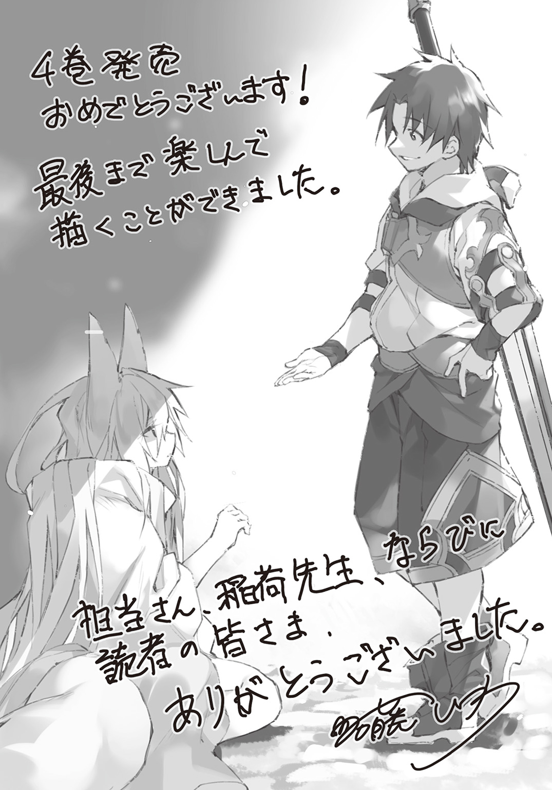
著者紹介
稲荷 竜 いなり りゅう
本作は彼と彼女の長すぎた日常でした。
最後までお楽しみください。
illustration
加藤いつわ かとう いつわ
埼玉在住。けもみみ好きなイラストレーター。
HP:http://ituwa-kato.tumblr.com/
twitter:@ituwa_kato
ダッシュエックス文庫DIGITAL
セーブ＆ロードのできる宿屋さん４
～カンスト転生者が宿屋で新人育成を始めたようです～
著者 稲荷 竜
© RYU INARI 2017
２０１７年９月30日発行
この電子書籍は、ダッシュエックス文庫「セーブ＆ロードのできる宿屋さん４ ～カンスト転生者が宿屋で新人育成を始めたようです～」
２０１７年８月30日発行の第１刷を底本としています。
発行者 鈴木晴彦
発行所 株式会社 集英社
〒１０１－８０５０
東京都千代田区一ツ橋２丁目５番10号
０３－３２３０－６０８０（読者係）
制作所 株式会社ＩＣＥ
本作品の全部または一部を無断で複製、転載、改竄、インターネット上に掲載すること、および有償無償に関わらず、本データを第三者に譲渡することを禁じます。なお個人利用の目的であっても、コピーガードを解除しての複製は、法律で禁じられています。